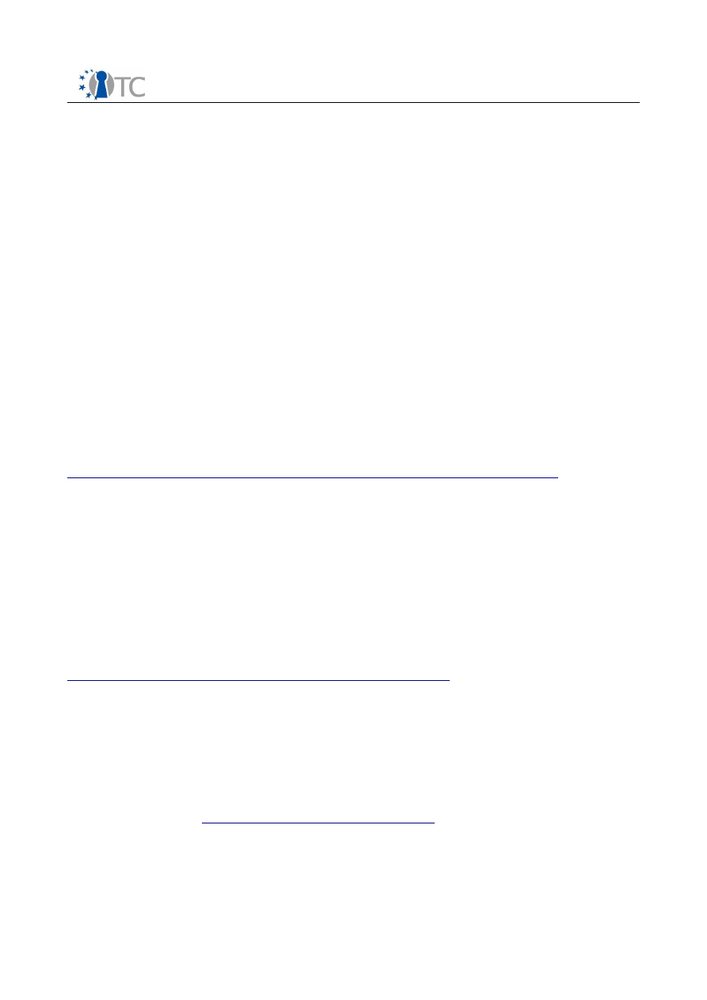

D08.2: Porting Security Services to a Mobile
Platform to Support a Trusted Mobile Application
Project number
IST-027635
Project acronym
Open_TC
Project title
Open Trusted Computing
Deliverable type
Report
Deliverable reference number
IST-027635/D08.2/Final
Deliverable title
“Porting Security Services to a Mobile
Platform to Support a Trusted Mobile
Application”
WP contributing to the
deliverable
WP8
Due date
30
th
September 2008 - M35
Actual submission date
7
th
October 2008
Responsible Organisation
RUB
Authors
RUB (Alaa Abdul-Hadi, Andreas Krügersen,
Hans Löhr, Ahmad-Reza Sadeghi, Marcel
Winandy),
COM2 (Eckhard Delfs),
IFX (David Jennings),
RHUL (Eimear Gallery)
Abstract
This document presents the “Secure Wallet”,
a countermeasure against identity theft on the
Internet. The Secure Wallet supports
automated secure logins on web-pages, using
Trusted Computing and Virtualisation on the
client side. We analyse the security of our
approach and discuss related work. Moreover,
a security kernel based architecture to
support such a wallet is sketched, together
with an architecture for a prototype, where
some part of the implementation is running on
a PC, and the other part on a mobile platform
(Infineon's X-GOLD
TM
208 platform). Recent
standardization activities, in particular the
TCG Mobile Reference Architecture and
OMTP TR1 specifications, are then examined
in light of the Secure Wallet use case.
Keywords
Trusted Computing, Secure Wallet, Identity
Theft, Mobile Trusted Platform
Dissemination level
Public
Revision
FINAL
Instrument
IP
Start date of the
project
1
st
November 2005
Thematic
Priority
IST
Duration
42 months

Security Services for a Trusted Mobile Application
Final
Table of contents
1 Introduction..................................................................................................................5
2 The Secure Wallet Use Case and Prototype................................................................7
2.1 Overview of the Secure Wallet.................................................................................7
2.1.1 Classical phishing ...............................................................................................7
2.1.2 Malware phishing ...............................................................................................9
2.1.3 Countering phishing .........................................................................................10
2.2 Security Problem Definition ..................................................................................11
2.2.1 Threats...............................................................................................................11
2.2.2 Assumptions ......................................................................................................12
2.2.3 Objectives...........................................................................................................14
2.2.4 Security Objective Rationale ............................................................................15
2.2.5 Requirements ....................................................................................................16
2.3 Related Work .........................................................................................................18
2.3.1 Client-based Phishing Countermeasures .........................................................18
2.3.2 Server-based Phishing Countermeasures ........................................................20
2.3.3 Proxy Components ............................................................................................20
2.4 The General Secure Wallet Architecture ..............................................................21
2.4.1 Wallet Behavior .................................................................................................21
2.4.2 Design and Architecture ...................................................................................24
2.5 Security Analysis ...................................................................................................28
2.5.1 Attacks ...............................................................................................................29
2.5.2 Assumptions ......................................................................................................31
2.5.3 Protection against Classical Phishing Attacks .................................................31
2.5.4 Protection against Online Malware Phishing Attacks .....................................33
2.5.5 Protection against Offline Attacks ...................................................................37
2.5.6 Attacks on the Passwords .................................................................................38
2.5.7 Discussion .........................................................................................................39
2.5.8 Other Attacks ....................................................................................................40
2.6 Architectural Overview .........................................................................................40
2.6.1 Architecture on a PC..........................................................................................40
2.6.2 Storage Manager..............................................................................................41
2.6.3 X-GOLDTM 208-Based Architecture.................................................................45
2.6.4 Hybrid Architecture for Demo-Prototype.........................................................45
2.7 Porting and Test Concepts of the TPM emulator on X-GOLDTM 208..................47
2.7.1 Porting Concepts...............................................................................................48
2.7.2 Implementation strategy...................................................................................50
2.7.3 Architecture.......................................................................................................54
2.7.4 Test Architecture...............................................................................................57
3 TCG Support for the Secure Wallet Prototype..........................................................59
3.1 Requirements for a Robust Implementation of the Secure Wallet.......................59
3.1.1 Secure Wallet Application Installation..............................................................59
3.1.2 Secure Wallet Protocol Suite.............................................................................59
3.1.3 Summary of Requirements................................................................................63
3.2 Requirements Analysis...........................................................................................64
3.3 TCG Mappings........................................................................................................66
3.3.1 Revised Architectural Model.............................................................................66
3.3.2 Fundamental MTM command runs...................................................................68
3.3.3 Authenticated Boot Process..............................................................................72
Open_TC Deliverable D08.2
2/109

Security Services for a Trusted Mobile Application
Final
3.3.4 Secure Boot Process..........................................................................................73
3.3.5 Maintaining Integrity.........................................................................................78
3.3.6 Secure Storage..................................................................................................80
3.3.7 Demonstrating Privilege....................................................................................82
3.3.8 Conclusions........................................................................................................85
4 OMTP TR1 and the Secure Wallet Prototype............................................................87
4.1 OMTP TR1 Summary..............................................................................................87
4.1.1 Security Enablers...............................................................................................87
4.1.2 Threat Model......................................................................................................89
4.1.3 TR1 Core Requirements....................................................................................91
4.1.4 Asset Protection.................................................................................................92
4.1.5 Trusted Execution Environment.......................................................................92
4.1.6 Use Case Overview............................................................................................94
4.2 Secure Wallet Architecture in the context of TR1................................................97
4.3 Proposal of the final porting of the secure wallet to the X-GOLD 208.................98
4.4 Platform Integrity and Authenticity.......................................................................98
4.4.1 Trusted Execution Environments....................................................................100
4.4.2 Secure Storage................................................................................................100
4.4.3 Secure User IO.................................................................................................102
4.4.4 Software Threats.............................................................................................102
4.5 Summary...............................................................................................................103
5 Conclusions..............................................................................................................104
Index of tables
Table 1: Threats and the objectives addressing them...................................................15
Table 2: Secure wallet application installation..............................................................59
Table 3: Starting the secure wallet................................................................................60
Table 4: Starting the secure wallet (alternative)...........................................................60
Table 5: Selecting a passphrase.....................................................................................60
Table 6: Selecting a passphrase.....................................................................................60
Table 7: Authenticating a user.......................................................................................61
Table 8: Authenticating a user (alternative)..................................................................61
Table 9: Changing a passphrase....................................................................................62
Table 10: Changing a passphrase (alternative).............................................................62
Table 11: Storing sensitive data.....................................................................................62
Table 12: Storing sensitive data (alternative)...............................................................62
Table 13: Accessing secure storage (application).........................................................63
Table 14: Accessing secure storage (application)(alternative).....................................63
Table 15: MTM permanent flags....................................................................................69
Table 16: MTM initialisation...........................................................................................69
Table 17: MTM start-up..................................................................................................69
Table 18: MTM save state..............................................................................................69
Table 19: Self testing......................................................................................................70
Table 20: Retrieving self test results.............................................................................70
Table 21: Creating an endorsement key pair................................................................70
Table 22: Accessing the public endorsement key..........................................................71
Table 23: Physically enabling an MTM..........................................................................71
Table 24: Physically disabling an MTM.........................................................................71
Table 25: Enabling/Disabling an MTM...........................................................................71
Open_TC Deliverable D08.2
3/109

Security Services for a Trusted Mobile Application
Final
Table 26: Setting the state of the 'TPM_PF_OWNERSHIP' flag....................................72
Table 27: Taking ownership of an MTM.........................................................................72
Table 28: Activating an MTM.........................................................................................72
Table 29: MTM permanent flags....................................................................................74
Table 30: TPM_VERIFICATION_KEY structure.............................................................75
Table 31: TPM_RIM_CERTIFICATE structure................................................................76
Table 32: RIM installation...............................................................................................76
Table 33: RIM_Cert verification.....................................................................................76
Table 34: Loading a verification key..............................................................................76
Table 35: Disabling the loading of a root verification key.............................................77
Table 36: Incrementing a bootstrap counter.................................................................77
Table 37: Setting verified PCRs......................................................................................77
Table 38: Measurement verification and PCR extension...............................................77
Table 39: A transport session.........................................................................................81
Table 40: Creating a wrap key........................................................................................82
Table 41: Loading a key..................................................................................................82
Table 42: Sealing data using a storage key...................................................................82
Table 43: Authorising an MTM owner read of the public endorsement key................84
Table 44: Authorising a load key and an object seal.....................................................85
Table 45: MTM commands required in an MLTM and an MRTM in order to implement
the secure wallet mechanism.........................................................................................86
Index of figures
Figure 1: Web Server Login..............................................................................................9
Figure 2: Classical Phishing Overview...........................................................................10
Figure 3: Malware Phishing Overview...........................................................................11
Figure 4: The Secure Wallet...........................................................................................22
Figure 5: Password fields are disabled automatically...................................................23
Figure 6: Setup dialog for a web site.............................................................................24
Figure 7: The Conventional System Model....................................................................27
Figure 8: The Secure Wallet System Model..................................................................27
Figure 9: Simplified system model for the Secure Wallet ............................................30
Figure 10: The Internal Communication Channels.......................................................36
Figure 11: System architecture for PC hardware.........................................................42
Figure 12: Implementation of the Storage Manager.....................................................44
Figure 13: Architectural overview for a demo-prototype. ............................................47
Figure 14: Development environment for TPM emulator on target.............................48
Figure 15: Basic target architecture for TPM emulator on L4/X-GOLDTM 208..........49
Figure 16: Linux TPM emulator architecture................................................................52
Figure 17: Basic prototyping deployment view.............................................................54
Figure 18: Component view of target software architecture........................................55
Figure 19: TPM emulator procedures on L4..................................................................56
Figure 20: TPM Proxy procedures.................................................................................57
Figure 21: Deployment view used for target testing ....................................................58
Figure 22:Message flow until start of Trousers daemon..............................................59
Figure 23: Example message exchange for a simple use case to read the public EK. 59
Figure 24: Secure wallet architecture...........................................................................68
Figure 25: A sample key hierarchy from a secure wallet provider engine...................81
Figure 26: Proposed architecture for final secure wallet prototype .........................100
Open_TC Deliverable D08.2
4/109
Security Services for a Trusted Mobile Application
Final
1
Introduction
Identity theft has become one of the fastest growing crimes on the Internet, leading
to huge financial losses and privacy violations [1,2]. Various attacks have been
identified in the past. A prominent class of attacks are those termed as illusion
attacks, such as phishing and pharming, where the user is lured to a faked site and
asked to disclose her identity credential information. Essentially, the attackers make
use of the fact that the average Internet user is unable to distinguish a legitimate site
from a fake one, and the underlying security mechanisms and indicators do not
efficiently and effectively support her in making the right decision [26]. Hence, the
first core security objective is to provide a strong password mechanism for the user
while reducing the user’s intervention with the system as much as possible. Ideally,
the user should not know the passwords. This requirement seems to be contradictory,
however, relying on a system that knows the passwords and automatically performs
the login on behalf of the user, including an automatic verification of the legitimacy
of the web site, prevents the mentioned attacks.
In addition to illusion attacks and the related social engineering attacks, a more
powerful class of attacks is due to malware compromising and infiltrating the user’s
computing platform with malicious code. Examples include Trojan horses like
keyloggers
1
or transaction generators
2
[12,3]. Typical sources of malware are various
offers on supplementary software and plug-ins that may contain malicious code. In
this context, commodity operating systems (OS’s) cannot appropriately prevent or
even reduce the impact of these attacks since they still suffer from various
conceptual shortcomings: beside architectural security problems and the inherent
vulnerabilities resulting from high complexity, they require careful system
administration skills which ordinary users typically do not have. Hence the second
main security objective is to have a small Trusted Computing Base (TCB) that can
provide the following security properties:
1. a secure execution environment for handling users’ authentication credentials,
ideally isolated from potentially malicious programs (isolation);
2. a secure user interface to interact with trusted applications, which cannot be
faked or eavesdropped by malicious programs (trusted path); and
3. a secure environment for the credentials when the system is offline (secure
storage). In particular, credentials are bound to the TCB to prevent attacks
where an adversary tries to gain access to the data by replacing software (e.g.,
booting a different OS).
Both the scientific and industrial community have addressed many of the known
attacks on web authentication and proposed promising identity management
solutions to alleviate the threat of identity theft. On the one hand, delegated identity
management systems, where the user calls a trusted third party in form of a
distributed server for hosting and providing identity information, exist but showed to
have deficiencies [32,34,62,54]. For example, as analysed in [32], authentication tools
1Keyloggers record all keystrokes of the user, especially during entering passwords, and
transmit them to a phisher.
2Transaction generators wait until the user has logged in, e.g., to her financial online
account, and create fraudulent transactions in the background.
Open_TC Deliverable D08.2
5/109

Security Services for a Trusted Mobile Application
Final
such as Microsoft’s CardSpace [38] can successfully be attacked even in a weaker
adversary model (assuming the DNS is under the control of the adversary), whereas
our adversary model considers malware as well.
On the other hand, wallet-like approaches such as SpyBlock [55,40,39], Delegate
[43], Vault [45], or Wallet-Proxy [31] have gained more attention recently and seem
to be very promising towards secure web authentication. Those approaches use a
password wallet as authentication agent in an isolated trusted environment (using
virtual machines, or as with Delegate, a separate physical machine) to separate the
handling of credentials from the normal web browsing (see also [55,70]). The wallet-
based approach has the advantage that the user owns a “guardian angel” who
protects against disclosure of sensitive data and potentially prevents identity theft
caused by wrong user behavior. Further, there is no need to trust a distributed server
hosting the credentials. Another issue is that a wallet can perform cryptographic
tasks that cannot be performed by the user or provided by the current browser
implementations. In this work, we focus on password phishing. To protect against
transaction generators, the secure wallet could be extended according to ideas
presented in [40].
In this deliverable, we describe our approach to counter identity theft: the Secure
Wallet use case and prototype. We present the requirements and architecture,
analyse the security, and propose a prototype implementation. This includes the
architecture for a demonstrator using Infineon's X-GOLD
TM
208 (formerly called S-
GOLD3
TM
) mobile platform. Moreover, the relation of the Secure Wallet to current
mobile standards, in particular the TCG Mobile Reference Architecture and OMTP
TR1 specifications, is discussed.
Open_TC Deliverable D08.2
6/109

Security Services for a Trusted Mobile Application
Final
2
The Secure Wallet Use Case and Prototype
In this section, we describe the Secure Wallet, our solution to counter identity theft
based on the concepts from [31], and give an overview of the system architecture. We
sketch the system architecture (based on generic security services as developed in
OpenTC WP05) that has been used for our prototype implementation on a PC. We
describe an architecture for a mobile platform, and propose a “hybrid” architecture
for a demo-prototype, where functionalities are split between a PC and a mobile
platform.
2.1 Overview of the Secure Wallet
According to the Anti-Phishing Working Group (APWG) [1], phishing attacks are still
on the rise. Especially crimeware attacks reached a new all-time high in December
2006, when the APWG recorded 340 unique applications designed for phishing and
identity theft. More than 28.000 different phishing sites were recorded during the
same month, each with an average online time of 4 days. Although those were about
10.000 sites less than in October and November, the number of phishing sites has
almost tripled since summer 2006. In April 2007 that number almost doubled to
55.000 unique sites, whereas in the last months of 2007 it dropped to about 30.000
sites again. Gartner [11] estimates direct financial losses due to phishing to $2.8
billion in 2006, while indirect losses are much higher, including account replacement
costs and higher expenses for mitigating damage in trust and brand values. As
attacks increase in frequency and become more sophisticated with every generation,
increasing losses can be expected as well.
In this chapter, we describe the basic ideas underlying the secure wallet. Note that
we focus on password phishing. To address transaction generators, ideas from [40]
can be combined with our approach.
2.1.1 Classical phishing
Basically, there are two types of phishing attacks. We define the first category, which
is the oldest and still most widespread attack, as
classical phishing
. The normal user
login procedure for an arbitrary web server is shown in Figure 1. The user enters her
username and password into a web form provided by the web server and submits this
form.
Open_TC Deliverable D08.2
7/109
Security Services for a Trusted Mobile Application
Final
Figure 1:
Web Server Login
In the phishing attack, the phisher tries to lure the unwary victim to a faked web site,
which is designed to mimic a known web site (e.g. an online banking site of a
common bank), using social engineering techniques. Such a lure typically is a spoofed
email that appears to come from the organization associated with the original web
site, asking to fill out some web form or to log into the victim's account in order to
prevent it from being locked down permanently. Those sites have in common that a
user with a given technical knowledge can distinguish them from the original sites by
comparing the URLs or other security indicators (e.g. an SSL certificate). More
sophisticated attacks include DNS poisoning techniques (e.g., see [75]), thereby
using the URL of the original site and forwarding the request to the phisher's web
server. If the phisher was able to fake the site well enough to be plausible for the
victim, he hopes that the user enters her credential in order to use the site or to carry
out the requested operation (e.g. confirm her account). Since the phisher controls the
faked web site, he is in possession of the victim's credential afterwards.
Open_TC Deliverable D08.2
8/109
Security Services for a Trusted Mobile Application
Final
Figure 2:
Classical Phishing Overview
Websites that disclose personal information about their users, e.g. the fact whether a
specific email address is registered with it or not, can be used by phishers to build up
hostile profiles. Those profiles are then used by phishers to create custom phishing
mails tailored to the respective user, increasing the likelihood that the user believes
the mail [9].
2.1.2 Malware phishing
The other type of phishing attacks we define as
malware phishing
. Generally, those
attacks can be categorized as attempts to collect personal information directly at the
client through the use of malware, i.e. malicious software like trojans or keyloggers.
Malware can have various effects on the client system. Besides keyloggers, which
gather keystrokes and send them to the phisher, trojans can hijack browsers and
trick users by altering their user interface or redirecting data streams to rogue
servers. More sophisticated tools make use of numerous distributed machines
gathering and collecting data silently using covert channels [42]. Phishers exploit
known flaws in widely used software (e.g. buffer overruns) to distribute their
Open_TC Deliverable D08.2
9/109
Security Services for a Trusted Mobile Application
Final
malicious code. As malware improves more and more, becoming increasingly resilient
to detection and countering techniques, phishing through malware seems appealing
and can be expected to increase in frequency. This is confirmed by the fact that in
December 2006 the number of unique variants of phishing malware increased by 110
to 340 [1].
Figure 3:
Malware Phishing Overview
2.1.3 Countering phishing
What makes countering phishing attacks difficult is the broad range of different
attack vectors. On the one hand, the security engineer has to account for the unwary,
technically inexperienced user being tricked by a convincing web site fake. On the
other hand, credentials could also leak directly at the client without the user ever
noticing it (at least until the phisher makes use of the stolen data). While solutions
exist, targeting either the first or the second type of attacks in more or less detail,
there is still no technique available that protects against both threats equally. The
related work section provides some examples of existing solutions and illustrate why
they do not suffice to target both kinds of attacks.
This document takes up the idea from [31] and presents an implementation for the
Open_TC Deliverable D08.2
10/109
Server on
the Internet
Security Services for a Trusted Mobile Application
Final
proposed trusted wallet. This wallet, hence called Secure Wallet, will be used to
securely store user credentials and authenticate to remote services on behalf of the
user without requiring specific security-related skills (i.e. as stated above, to be able
to recognize a web site fake or detect malware on her computer). In contrast to most
other solutions, the wallet will equally protect against classical and malware phishing
attacks.
The wallet will be executed on top of a virtualisation platform based on trusted
computing functionality. This platform provides integrity and isolation by combining
a security kernel and controlled access mechanisms. Running on top of this platform,
no malicious software will be able to access or intercept the credentials stored in the
wallet.
2.2 Security Problem Definition
2.2.1 Threats
Internet users are subject to the following security threats regarding their identities:
Threat 1
(Identity Theft through Faked Web Sites)
The user U is lured to a faked
web site A where she enters her credential for the original site P, thereby exposing
them to the creator of the faked site.
The user may arrive at the fake site through different means, e.g., a spoofed email
containing a link to the site, a link on some other (probably not even compromised)
web site or through redirection by DNS poisoning. If the user disregards possible
security warnings or does not notice that browser security indicators are missing and
hence trusts the displayed content, she may be inclined to enter her credential
for the original site P in order to log into the fake site A. The adversary and creator of
the fake site A then can take possession of the user's credential for the original site.
Afterwards, the adversary can use them to impersonate the user in order to perform
transactions or gain access to other data belonging to the user.
Threat 2
(Malware Identity Theft)
Malicious software installed by an adversary A
on user U's system gathers identity data and credentials when they are entered by U
(for various applications). The software somehow exposes that data for A to retrieve.
Malicious software (i.e. malware) can be various kinds of trojans – maybe containing
keyloggers or other spyware – on the user's system. It could have been installed by
intention (and perhaps the user does not notice the software contains spyware), or
without the user ever noticing it. Depending on the type of malware, user credentials
may leak through different means. A keylogger might log all characters entered into
the target application, whereas a trojan might display a faked login dialog for the
target application persuading the user that it is the real application. Note that this
includes login forms on web sites as well, since the trojan could have altered the
browser's behavior.
As soon as the malware has gathered sufficient credentials, it will somehow contact
the adversary to send the gathered data to A, or it uses covert channels to expose the
data at some public place, where A can retrieve it. Afterwards, A can use those
credentials to impersonate the user as described in Threat 1.
Threat 3
(Wallet Credential Theft)
Malicious software reads the wallet's credential
store directly.
Open_TC Deliverable D08.2
11/109

Security Services for a Trusted Mobile Application
Final
A reasonable approach for malicious software is to bypass all protection mechanisms
supplied by the Secure Wallet during web site setup or login and read the wallet's
credential store directly. If that credential store is not sufficiently protected,
attackers can gain access to all credentials that U has already stored.
Threat 4
(Configuration Modification)
Malicious software modifies the wallet's
configuration in order to somehow intercept unprotected credentials.
If a malicious program cannot overcome the wallet's defences while interacting with
a remote server or cannot read its credential store directly, it could try to change the
wallet's configuration to weaken its security or disable it completely. If the wallet's
configuration files are not protected from unauthorized access, malicious code could
alter them in any possible way.
Threat 5
(Fake Dialog Attack)
Malicious software displays faked dialogs resembling
the wallet's user interface and lures the user to enter credentials into those faked
dialogs.
Instead of disguising as some other application where the user could possibly enter
credentials, malware could also try to disguise as the wallet itself. If the user has
learned to enter credentials only into the wallet, this approach would be more
promising than faking another application. Once the user is convinced that she uses
the original wallet, the malicious program can intercept any credentials entered.
An additional threat, not directly addressed by this work, comprises the use of
Transaction Generators [40] to generate an arbitrary amount of unauthorized
transactions once the user has successfully logged into a specific web site. This
threat is not introduced by the wallet concept though, but is a general threat
regarding web sites allowing for commercial transactions. Therefore, it will (briefly)
be discussed in the security analysis below.
2.2.2 Assumptions
As outlined in [31], the wallet solution is based on the following three assumptions:
Assumption 1
(Honest Provider)
We assume that the service provider P and his
services used by the user U are not compromised.
If the service provider P did not reliably protect his services, malicious users are able
to steal identities directly from the provider's database. Therefore, P must enforce
that his services cannot be exploited. This especially holds true for certifying
services. We assume that appropriate protection of the services includes the use of
secure communication protocols such as SSL/TLS.
Assumption 2
(Genuine Internet)
We assume that U uses a genuine internet
connection, i.e. an adversary A cannot spoof the whole web.
Web spoofing attacks were first described by Felten et al. [28,71], and comprise an
attack where A is able to fake the whole internet and any associated service for a
user U. If such attacks were taken into account, the user would already disclose her
credentials to the adversary when signing up for a service. Therefore, it is assumed in
the following that U always signs up at an honest provider P using an unspoofed
internet connection.
Assumption 3
(Ordinary User)
We assume that the user U is an ordinary Internet
user unable to properly authenticate a service provider P.
Open_TC Deliverable D08.2
12/109
Security Services for a Trusted Mobile Application
Final
In order to authenticate a web site provided by P, the user has to verify the service
identifiers
. Such identifiers are the domain name, the 'https' protocol specifier in
the URL, and the SSL server certificate. However, studies show that most Internet
users cannot distinguish legitimate web sites from faked ones and do not understand
indicators, which signal trustworthiness, or where to look for those [36,37].
Assumption 4
(Trustworthy Public Key Infrastructure)
We assume that a
trustworthy PKI exists, whose Certificate Authorities (CA) issue certificates for a web
site P only to individuals associated with P.
The whole point of a public key infrastructure lies in trusting some distinct
Certificate Authorities to issue certificates only to authorized individuals, e.g. a
certificate for www.ebay.com should only be issued to eBay Inc. or another entity
explicitly authorized by eBay Inc. If a CA does not conform to secure practices for the
verification of an applicant's identity, an arbitrary individual could, in theory, acquire
a certificate for any web site he desires, thus being able to impersonate that site in a
man-in-the-middle attack. Such an attack has been effective in the past at least once
for a prominent victim, when an attacker managed to disguise himself as a Microsoft
employee and acquired two certificates issued to Microsoft from Verisign [6].
Assumption 5
(Private Key Protection)
We assume that the service providers
protect the private keys of their certificates sufficiently and revoke them as soon as
they are compromised or not used anymore.
If a service provider does not sufficiently protect his private keys, an adversary who
manages to steal them can impersonate the service provider and trick users into
disclosing their credentials. This kind of attack cannot be countered by any
mechanisms on the client-side.
Assumption 6
(Single Credential Storage Mechanism)
We assume that the user
enters all credentials into the wallet exclusively.
The wallet can only work to its maximum effect if the user uses it exclusively to store
her credentials for web sites. When she still attempts to enter credentials into web
sites directly or into other applications not associated with the wallet, no assumptions
can be made about the credentials' security since the wallet cannot cover those
external factors. This also includes “recovery options” for forgotten passwords
offered by many websites. If the user uses such an option to get an email containing
the password, the adversary might obtain the password from this email, hence we
have to assume that the user does not use such options (which are not necessary in
any case, because passwords are stored by the secure wallet). In practice, this
assumption is more realistic and thus weaker than the assumption that the user
always verifies the results of SSL certificate verifications provided by the browser.
Assupmtion 7
(Feasability of Secure Software Development)
We assume that it is
possible to develop secure software components of limited complexity and to verify
their correctness.
Without secure software, we cannot protect the user's credentials. However, we try
to limit the number and complexity of trusted software components. For instance, we
do not assume that a complete web browser or an operating system where the user
can install software can be implemented securely. But we do assume that a basic
“security kernel” and a simple secure wallet application can be implemented
securely, and that the correctness of their implementation can be verified.
Open_TC Deliverable D08.2
13/109
Security Services for a Trusted Mobile Application
Final
2.2.3 Objectives
The main objective is to preserve the
confidentiality of the user's credentials
.
However, this is made difficult by the fact that most service providers offer only
entity authentication, i.e., authentication is based on the credentials alone and does
not include all components in the communication path. This can be exploited by
compromising such an unauthorized component. Therefore, the Secure Wallet will
attempt to achieve the following partial security objectives:
Objective 1
(Protection against Fake Sites)
Let P be a web site for which the
Secure Wallet stores U's credential
. The wallet will change
the password
in order to prevent U from being able to disclose it to a fake site
. Moreover, the password generated by the wallet will be a
strong
password with
high entropy, unique for each site, to protect against dictionary attacks and common
password attacks.
The user may possibly give away everything she knows to a phishing attack,
especially her credentials for a specific web site P. An effective way of preventing
credential leakage is not letting the user know those credentials. Thus, even if faced
with a faked web site
, U cannot disclose any secret information apart from the
outdated credential
that U knew before the wallet changed it to
. In order
to prevent the adversary from computing
from
(in case he managed to
get
from the unwary user), the wallet incorporates random values into the
transformation.
This seems to have a great impact on usability, since U cannot log into the web sites
stored in the wallet from other computers anymore because she does not know the
password. While the question remains whether it is wise for U to expose her
password to a possibly insecure or compromised computer beyond her control, there
are certain ways to improve usability, such as migrating the user's data to other
platforms. Further work in this direction is needed.
Objective 2
(Secure Environment)
The system S ensures that the Secure Wallet's
internal credential store can only be accessed if the wallet is executed in a secure
and trusted environment.
If the user attempts to execute the wallet in an insecure environment, the system
must prohibit further access to the wallet to prevent leakage of credentials.
Therefore, the system must ensure that no security-critical components have been
compromised by verifying whether they have changed since the last time the wallet
was used.
Objective 3
(Secure Storage)
The Secure Wallet uses a secure storage that cannot
be read by any other application.
The storage is the wallet's most important component since it contains all credentials
stored by the user. Unauthorized applications that manage to read the wallet's
storage directly, immediately gain access to all credentials, rendering all the wallet's
other protection mechanisms useless. Therefore, the wallet must protect its storage
or rely on the system to sufficiently protect it. No other application than the wallet
should have access to that storage.
Objective 4
(Secure Configuration)
The Secure Wallet software and configuration
Open_TC Deliverable D08.2
14/109
Security Services for a Trusted Mobile Application
Final
cannot be altered by unauthorized applications in such a way that an adversary may
gain access to the user's credentials.
The configuration controls how the wallet is used or whether it is used at all. By
altering the configuration, an adversary could disable the wallet completely and
prevent it from protecting the user's credentials during web site login. Alternatively,
the wallet could be misconfigured to prevent affective protection of user credetials.
By modification of untrusted software components, an adversary should only be able
to prevent the automated login operations (i.e., denial of service) but should never
get access to the wallet's credentials. To prevent any further modifications, the
configuration files must be stored separately, so that unauthorized applications
cannot reach them. Moreover, the wallet software must not contain security-critical
implementation flaws, such as buffer overflows.
Objective 5
(Secure Input and Output)
No other application should gain
unauthorized access to input or output of the Secure Wallet .
A common attack of Trojan horse programs is to emulate password input dialogs. The
unwary user believes to enter her credentials into the genuine password dialog she
expects. Thus she exposes those credentials to the malicious program. Therefore, the
user must feel confident about the integrity, authenticity and confidentiality of the
communication path to the wallet application as well as the integrity and authenticity
of the secure wallet itself.
2.2.4 Security Objective Rationale
Objective 1 (
Protection against Fake Sites
) counters Threat 1 (
Identity Theft through
Faked Web Sites
). When the user does not know the password for a web site, she
cannot give that password away to an adversary trying to fake the web site.
Therefore, faked web sites no longer pose a risk for the user's credentials.
Objective 3 (
Secure Storage
) counters Threat 3 (
Credential Theft
), Objective 4
(
Secure Configuration
) counters Threat 4 (
Configuration Modification
) and
Objective 5 (
Secure Input and Output
) is meant to prevent Threat 5 (
Disguising as
the Wallet
), since no malicious code can pretend to be the Secure Wallet as long as a
trusted path to the wallet exists and is used. In addition, when the system already
recognizes unexpected changes to security-critical components, protection against
malware is significantly increased. Thus, all three Objectives 3 to 5 together with
Objective 2 (
Secure Environment
) counter Threat 2 (
Malware Identity Theft
).
Table 1:
Threats and the objectives addressing them
Objective
Threat
Fake
Site
Env. Storage Config Input
Fake Sites
X
Malware
X
X
X
X
Credential Store
X
Config Modification
X
Fake Dialog
X
Open_TC Deliverable D08.2
15/109
Security Services for a Trusted Mobile Application
Final
By ensuring a secure authentication process and preventing insecure communication
channels, both faked web sites and malicious programs lose their ability to disguise
as a trusted entity. Thus, the overall security objective, being the preservation of the
confidentiality of the user's credentials, is achieved if the partial objectives can be
achieved. The following table provides a compact overview of the discussed relations
between objectives and threats.
Assumption 1 (
Honest Provider
) is important to exclude the service provider system
from all security considerations. If the adversary can steal identities directly at the
provider, no action taken on the client can prevent that. Even if the adversary can
“only” compromise the provider instead of stealing the identities at once, the client
won't presumably detect that. Thus, Assumption 1 is crucial for all following
considerations.
As already described in Assumption 2 (
Genuine Internet
), if an adversary was able to
spoof the whole internet, the user U would already disclose her credentials when
signing up for a service. In this case, no protections on the client side would have an
effect either.
On the other hand, if Assumption 3 (
Ordinary User
) is not taken into account, the
proposed solution will also work for a skilled user who knows how to distinguish a
phishing site from an original site (in the case of Threat 1). Regarding Threat 1, a
skilled user will probably refuse to install any kind of suspicious software in the first
place or recognize faked login dialogs displayed on her system. The assumption is
reasonable, though, because studies show that most Internet users do not possess
such knowledge and therefore it helps to prevent phishing attacks for a larger user
base.
The importance of Assumption 4 (
Trustworthy Public Key Infrastructure
) becomes
immediately clear when dealing with certificates that have been issued without
authorization. Certificates represent the primary source of trust in a public key
infrastructure. If there exists a certificate that seems to belong to a certain web site P
but was issued to an adversary A instead, A can impersonate P for arbitrary users
without them noticing.
If an adversary manages to steal a private key from a service provider and
impersonates him in a form of redirection attack, there is nothing that the client
could do to detect that apart from verifying the actual web site content. Without
Assumption 5, a client cannot trust a single certificate since it could possibly be
stolen.
2.2.5 Requirements
In order to achieve the security objectives introduced above, both the system (i.e.,
the platform together with the operating system) and the wallet must meet several
requirements. Those requirements are as follows:
Requirement 1
(System Integrity)
The integrity of security-critical components in
S should not be compromised.
If malicious software infects critical system components in , the system is rendered
incapable of providing protection against attacks and cannot meet the other security
requirements. Thus, security-critical components of have to be isolated from non-
Open_TC Deliverable D08.2
16/109

Security Services for a Trusted Mobile Application
Final
critical components. While this preserves system integrity at runtime, additional
measures must be taken to protect against offline-attacks, e.g. when a different
operation system is booted. A secure boot mechanism is required to prevent
modification of initial system components.
Requirement 2
(Isolation)
Runtime and offline protection of application code and
data in S must be assured.
The internal state or persistently stored state of processes must not be accessible by
malicious processes. Since malware may try to log the user's key strokes or modify
the system configuration, applications for different tasks of the user should be
separated, such that they cannot interfere with each other. The Secure Wallet should
store the user's credentials securely. Thus, having a clearly security-related task, the
wallet's internal credential store should never be read by applications unrelated to
security tasks, e.g. a web browser or active scripts running therein.
Requirement 3
(Information Flow)
Credentials should be relayed to authorized
applications only.
Credentials must enter and leave the wallet in order to be used effectively. If
credentials could not be passed on to other applications (e.g. in order to log into a
web site), the wallet has no other use than storing them. Only trusted components
known by the wallet or components that can identify and authorize themselves (e.g. a
remote web server using a valid SSL certificate) should gain access to any of the
stored credentials. The wallet should warn the user when she attempts to send
credentials over an insecure communication channel (e.g. to a web site without SSL
encryption). Moreover, inter-process communication should only be performed
through strictly controlled communication interfaces, i.e. no bypassing of those
interfaces should be possible.
Requirement 4
(Trusted Path)
No other application should gain unauthorized
access to input or output of the application in S used by U to enter her credentials
(i.e., the secure wallet).
To ensure that the user enters credentials only into the wallet and no other
applications can access the user's input, the system must provide a mechanism which
allows separation of input channels. While the user enters her credentials, she must
feel confident that those credentials are sent over a secure communication channel. A
visual proof of the current channel's security state should be displayed to the user at
all times.
Requirement 5
(Robustness)
Wrong configuration or setup of security-critical
components of S should not have adverse effects on the security features provided.
As pointed out in Assumption 3 (
Ordinary User
), this deliverable assumes an ordinary
user without any technical knowledge to configure or understand security-critical
applications or indicators. Thus, any configuration necessary to fulfil the security
objective must be easy to understand and tolerate mistakes. In the context of the
wallet this implies that the user should preferably only enter user credentials without
having to worry about any inner workings. Because of assumption 3 (ordinary user),
this requirement does not only address usability: in order to protect the credentials of
unskilled users, the secure wallet
must
be easy to setup ad configure.
Requirement 6
(Authentication)
Unauthorized individuals should not be able to
access the wallet's data stored by other users.
Open_TC Deliverable D08.2
17/109

Security Services for a Trusted Mobile Application
Final
On a multi-user system or in a multi-user environment (e.g. an open-plan office) the
system must ensure that credentials stored by one user are not accessible by other
users. A user has to authenticate herself before she can use the wallet and her stored
credentials. The system must provide a method to let the user authenticate herself.
This can either happen as part of a general user authentication or it can be specific to
the wallet. Moreover, the system's security policy may define that the user has to
reauthenticate herself after a specific timespan.
2.3 Related Work
2.3.1 Client-based Phishing Countermeasures
Several existing solutions add security toolbars to the browser's user interface that
should warn the user of fraudulent sites by checking certain indicators like a valid
SSL certificate or by maintaining a blacklist of known phishing sites. Examples of
such toolbars are TrustBar [37], Netcraft Toolbar [7] or SpoofGuard [22]. While those
solutions tend to lessen the success of phishing attacks, they are not sufficient to
counter them completely, as a recent study shows [69]. Users fail to continuously
check the displayed security indicators, since their primary goal is not security but to
finish the task that led them to the phishing site. Even when the toolbars showed
suspicious signs, users often did not know how to interpret them. They tend to trust
the actual web site content more than the security indicators that were installed. This
is especially harmful if a phishing site displays real web site content in a man-in-the-
middle attack or in a picture-in-picture attack, where a picture of a browser window
containing the image of a legitimate site is shown as the content of a fraudulent site
[41].
Dynamic Security Skins [25] offer a better alternative in requiring the user to
recognize only an image and a low-entropy password while freeing them from the
burden of checking all browser security indicators, but they have two drawbacks.
First, this approach is not resistant to malware attacks, since a trojan altering the
browser's behavior or user interface could fake the images by generating a matching
set of images itself. Second, they require a change to the web server, which
significantly lowers the chance for this technique to be deployed.
A related approach was taken with Synchronized Random Dynamic Boundaries [73].
In an attempt to separate status information from web site content, the authors
implemented a protection scheme that changed the border colours of the browser
and its associated windows in random intervals, thereby exposing spoofed windows
generated by malicious code. While this technique does not require a change to the
web server, it still suffers from similar drawbacks as the dynamic security skin
approach, e.g., it is vulnerable to malware attacks.
Password Managers
Password managers are readily available for many different operating systems and
desktop environments. A familiar example is KWallet [59] included in the KDE
Project. Passwords are encrypted and stored on the user's system and can be
automatically retrieved, e.g. by the Konqueror browser, whenever the user enters a
web site that the wallet has a password for. Such wallet approaches neither provide
Isolation nor a Trusted Path, though.
The Web Wallet [70] separates the input of credentials and the usage of a web site by
Open_TC Deliverable D08.2
18/109

Security Services for a Trusted Mobile Application
Final
locking the HTML forms requiring credentials. After the user presses a predefined
security key, the Web Wallet verifies the security properties of the target web site
and displays a dialog to the user where she has to explicitly choose the destination
site the credentials should be sent to, instead of displaying simple confirmation
dialogs. The user can choose from a list of web sites previously stored by the wallet.
While this is quite effective in countering classical phishing attacks, no protection
against malware attacks is provided.
Yee and Sitaker proposed the PassPet browser extension [72] which addresses the
issue of re-used passwords across multiple different web sites. It lets the user assign
a
pet name
for each of her used sites and generates a new password incorporating
the domain name. When the user wants to log into one of her sites, she enters the pet
name into the extension and it copies her password into the designated password
fields. Similar to other password manager solutions, this is effective against classical
phishing but lacks resistance to certain kinds of malware attacks.
Platforms & Operating Systems
Virtualisation
To prevent malware attacks, a secure operating system is vital, and for the solution
proposed in this deliverable, virtualisation is an important building block. Because of
the abundance of literature on this topic, we do not provide a review of recent work
here, but refer the reader to previous work, such as [33,46,57].
Cox et al. [24] introduced the Tahoma Web browsing system which added a new
separate trusted software layer called browser operating system (BOS) on which
browsers execute. They separated several browser instances running in the Xen
virtual machine monitor [18], thereby isolating different web applications from each
other. While this approach proved to counter 87% of the browser flaws and malware
attacks presented in their paper, no protection against classical phishing is available.
This is due to the fact that Tahoma can only provide an isolated browser instance
when the user enters a phishing site but does not prevent her from actually entering
her credentials. Moreover, offline modification of critical system components is
possible. Thus, malware attacks targeting the BOS itself are still feasible.
While not exactly related to protection of credentials, the SpyBlock [40] browser
extension employs a similar approach by using VMWare to set up a virtual machine
running an isolated web browser. While this defends against certain malware attacks,
it suffers from the same problem as Tahoma, i.e. no protection against classical
phishing attacks is provided.
Secure User Interfaces
The security of user interfaces was examined by several papers. Epstein et al.
introduced the Trusted X system [27] which aimed to replace the X windows system
found on UNIX systems with a security-enhanced version. In the course of creating
the EROS operating system, a secure GUI called EROS Trusted Window System
(EWS) was also developed [58]. A minimum-complexity secure user interface was
introduced with Nitpicker [29], which is an implementation based on an L4-
microkernel [5] that adds floating labels to active views while dimming out inactive
views. This allows users to authenticate the application they are currently using.
Open_TC Deliverable D08.2
19/109

Security Services for a Trusted Mobile Application
Final
Trusted Computing
Other more general work on preventing malware attacks focuses on integrity
preservation and verification. The authors of [16] construct a chain of integrity
checks during the bootstrap process in an attempt to provide a
Secure Boot
. Their
AEGIS system compares computed cryptographic hash values with stored digital
signatures previously associated with each bootstrap component utilizing a special
hardware component for reference. An implementation of this approach using a TPM
was shown in [48].
A similar attempt in secure booting was realized with TrustedGRUB [10], which is an
extension of the GNU GRUB bootloader. It allows detection of available TPMs and
measurement of arbitrary files during the boot process.
In [56] an integrity measurement system for Linux is presented. The system
measures all executable content that is loaded into the Linux system and protects
those measurements using a TPM. The loaded software stack can be proved to a third
party by using the TCG attestation mechanisms.
2.3.2 Server-based Phishing Countermeasures
Several server-based countermeasures attempt to extend the SSL protocol in order to
effectively thwart man-in-the-middle attacks [21]. For such attacks, the man-in-the-
middle creates two SSL connections, one with the server and one with the client. To
prevent such attacks, the authors of [60] propose a password-based extension, while
[52] utilizes trusted mobile devices for automatic verification of web sites instead of
using the web browser for that task. By linking passwords to SSL sessions, Oppliger
et al. [51] successfully counter man-in-the-middle attacks since passwords now
contain information about the parties involved in the communication.
While these approaches are effective to counter classical phishing attacks, they
provide no mechanisms for countering malware phishing attacks, since malware on
the user's system can still modify the communication.
A rather different anti-phishing approach was proposed by Birk et al. In their work
the authors fill collection servers of phishers with fingerprinted credentials and lure
them to virtual accounts. As a result, they attempt to profile phishers to prevent
future misuse of stolen credentials. Since this approach does nothing to prevent
current phishing attacks, it can be rather classified as a supporting measure [20].
2.3.3 Proxy Components
In 1997, Gabber et al. proposed the Janus Personalized Web Anonymizer [30] which
was an HTTP proxy that filtered incoming and outgoing traffic to anonymize the user.
It was executed locally and set up as the browser's HTTP proxy. Since the SSL
protocol had not been widely adopted yet, it provided no support for the HTTPS
protocol.
The PwdHash browser extension [55] discussed the idea of an SSL-capable proxy that
is able to forge SSL certificates on the fly to enable inspection and filtering of SSL-
protected traffic. A related implementation approach is examined in [15].
Open_TC Deliverable D08.2
20/109
Security Services for a Trusted Mobile Application
Final
2.4 The General Secure Wallet Architecture
To prevent the user from disclosing her credentials to any phishing site, a new
trusted component is introduced. This component, hence called Secure Wallet, will
store all of the user's credentials for web sites and will be used as a proxy for the web
browser.
Figure 4:
The Secure Wallet
The user will utilize her web browser for viewing web pages as before but will enter
her passwords only into the wallet. In order to access the wallet, she needs to request
a secure input path (i.e. a
trusted path
) from the system to ensure that only the wallet
receives her password inputs. Whenever she attempts to log into a web site with the
browser, the wallet will handle those login operations automatically by modifying the
browser's requests. Thus, she never needs to enter passwords into the untrusted
browser again. In fact, password fields in the browser are locked to remind her that
passwords are not to be entered into the browser anymore.
By strengthening the user's passwords with random values and binding them to the
domain they belong to, the wallet also prevents common password attacks and
dictionary attacks. Protection against malware attacks is provided by taking
advantage of trusted computing functionality and strong isolation properties of a
suitable system platform.
2.4.1 Wallet Behavior
This section describes the general behavior of the wallet system from a user's
perspective.
General Use
The user opens her web browser and attempts to use a web site that requires a login.
1. The user enters the web page containing the login form for the web site. The
login form's password fields are disabled, i.e. the user can only enter non-
sensitive values directly into the browser (see also Figure 5).
2. After entering all required non-sensitive values into the login form, the user
clicks on the Submit button.
3. The browser receives the next site-specific web page indicating a successful
login and displays it.
Open_TC Deliverable D08.2
21/109
Security Services for a Trusted Mobile Application
Final
4. The user can now use the web site as usual.
Figure 5:
Password fields are disabled automatically
Web Site Setup
To enable the automatic login described above, the user must set up a web site in the
wallet. Setup for an existing account occurs the first time the user attempts to use it.
1. The user enters a value for each non-sensitive field in the login form (e.g. the
username) and clicks on the Submit button afterwards.
2. The wallet displays a notification message indicating that the user should
initiate the trusted path to the wallet.
3. The user initiates the trusted path to the wallet and sees a dialog containing all
password fields of the login form (see Figure 6).
4. The user enters her credentials and clicks on the OK button afterwards.
5. The wallet displays a security message requesting the user to initiate the
password changing process for the web site as soon as she returns to the
browser.
6. The user leaves the trusted path to the wallet and returns to her browser.
7. The browser displays the site-specific web page indicating a successful login.
8. The user changes her password for the web site (see below).
9. The user can now use the web site as usual and any further login attempts are
carried out as described above.
Note that registering a new account for a web site works in a similar way. The user
Open_TC Deliverable D08.2
22/109
Security Services for a Trusted Mobile Application
Final
can set up the page in the wallet whether or not the registration form allows to
choose the user password. If the registration form contains no password fields, some
providers pre-generate the password and send it by email, i.e. web site setup occurs
when the user first submits the login form and proceeds as described above. The
setup process for a registration form with password fields is slightly different from
the one shown above.
Figure 6:
Setup dialog for a web site
Password Change
Changing of the user's password occurs in a similar way to setting up a web site in
the wallet.
1. The user enters the web page containing the form for changing her password
for the web site. The form's password fields have been disabled just like the
password fields in the login form had been before.
2. If any non-sensitive values are required, the user enters them and then clicks
on the Submit button.
3. The wallet displays a notification message, indicating that she should initiate
the trusted path to the wallet.
4. The user initiates the trusted path to the wallet and sees a dialog containing all
password fields of the password changing form. A password changing form
usually contains fields for entering the old password and the new desired
password.
5. For each field, the user chooses between the two options “Fill in old password”
and “Generate new password” without entering passwords herself.
6. The user clicks on the OK button, leaves the trusted path to the wallet and
returns to her browser.
Registration Forms
If the registration form contains fields for an initial password choice, the setup
executes as described above. But when the user first submits the login form after
registration, a setup dialog will be displayed once again. This dialog works just like
Open_TC Deliverable D08.2
23/109

Security Services for a Trusted Mobile Application
Final
the password change dialog, i.e. the user has to choose whether to use the stored
password for the password field in the login form (which is the obvious choice in this
case) or a newly generated password. After that, each subsequent login attempt will
execute as described above.
2.4.2 Design and Architecture
The design and architecture presented in the following was developped to address
the issues detailed in Section 2.2. Many of the general design decisions described in
this section have already been discussed in [31]. The purpose of this actual work was
to find a concrete approach to implement the wallet as a demo application while still
adding new ideas. In the process, some original ideas were refined or adapted to
accommodate the actual implementation.
Protection against Classical Phishing Attacks
This section provides a short overview of the general design decisions and their
impact on usability.
Deny credential input into the browser
An ordinary user is susceptible to all kinds of classical phishing attacks. For example,
a faked web site could trick her to enter her credentials for her home bank. Letting
the user enter credentials directly into the browser makes it hard to counter all
various attacks. Thus, the first major design choice for the wallet was to deny the
user the ability to enter credentials directly into web forms. Instead, the user should
enter those credentials only into the wallet.
The most efficient way of preventing the user to enter credentials into the browser is
to simply lock all web forms by modifying the HTML source code and setting the
disabled flag on all contained <input type=”password”> tags. The default behavior
for logging into a web site is now equivalent to entering non-sensitive data and
clicking on the Submit button, i.e. the user is trained to just express her intent of
logging in without entering her password into the browser. All further steps required
for logging in are then executed by the wallet internally. Usually that means
replacing the empty web form variables for the password with the previously stored
user credentials and forwarding the modified login request to the web server. Note
that locking the password fields alone does not provide sufficient security since that
mechanism can be countered quite easily. The next section discusses this attack more
detailed.
To allow the wallet access to received web pages, it needs to be able to read and
modify the communication between the browser and the remote web server. Thus,
the wallet is realized as a web proxy and set up as the browser's HTTP and HTTPS
proxy. To free the user of the burden to verify the browser's security indicators of
web pages, the wallet will also verify those indicators automatically, e.g. by verifying
the remote server's SSL certificate and rejecting invalid connections. Furthermore,
the wallet will issue a warning when the user attempts to set up credentials for a site
unprotected by SSL since those credentials could be stolen by an eavesdropper.
Whenever the user clicks on the Submit button of a locked login form for a web site
that has not been set up in the wallet yet, the user has to enter her credentials into
the wallet. Data fields required for a successful login are extracted from the submit
Open_TC Deliverable D08.2
24/109

Security Services for a Trusted Mobile Application
Final
request and compared to previously encountered login forms, i.e. the user enters a
value for all fields of the login form. This is the only time when the user should
actually type in her password. After the site has been set up, the password should not
have to be entered again.
Change the user's passwords
Locking the login forms is just a visual support mechanism and not foolproof to
prevent the user from entering credentials. An adversary could embed JavaScript
code into his fake site that automatically unlocks all locked forms. Or the user could
be tricked by cleverly designed malware to enter her credentials into other
applications than the browser or the wallet (also confer to the next section for a
discussion of malware protection). The paradigm that users should not know their
own passwords prevents such attacks to succeed. Furthermore, users tend to re-use
passwords for several (or even all) web sites because it is tedious or even
unmanageable to memorize a new password for each new site the user registers
with. This way an adversary could gain access to a whole range of web sites by
phishing the password of just one site (i.e. a
common password attack
). In practice,
those passwords also tend to be quite weak, mostly consisting of common words or
phrases, which makes them susceptible to dictionary attacks.
Thus, the second major design choice for the wallet was to replace the user's
passwords with new passwords that are, on the one hand, unique to each web site
and, on the other hand, stronger than the usual user passwords. While changing the
passwords automatically (as proposed in [31]) would be desirable from a security
perspective (this way the user could not omit the password changing process), this
approach fails due to the diversity of web site structures and technologies.
In practice, the user has to initiate the password changing process herself.
Consequently, the user could decide not to change her password but let the wallet
only handle her known password. A common reason could be the inability to perform
a login from other computers without the wallet (at least in the current
implementation). Secure migration of wallet data could improve this situation,
however, even in this case, a secure wallet is needed on all platforms from which the
user wants to log in. While user-initiated password change is conceptually less secure
than letting the wallet change the passwords, the wallet still provides a great deal of
protection against a wide range of attacks (also see the security analysis below). It
should be possible to enforce the decision to let the wallet change the passwords by a
suitable user training, which is a point for future work, though.
The password changing process does not require the user to type any passwords into
wallet. The previously stored password is already known to the wallet and the new
password is generated by the wallet and should not be known to the user. Thus, the
password changing dialog just provides two options for filling in the old and the new
password into the corresponding fields of the web form.
Protection against Malware Phishing Attacks
Providing isolation
A conventional system model is not sufficient to protect against malware phishing
attacks. The wallet will use a modified architecture based on a security kernel in
order to protect itself against malware attacks.
Open_TC Deliverable D08.2
25/109
Security Services for a Trusted Mobile Application
Final
Figure 7:
The Conventional System Model
Figure 7 shows the (simplified) conventional system model found in most desktop PCs
with regard to internet access through a web browser. The user utilizes her web
browser to connect to remote web servers and download web pages which can be
viewed or modified in the browser. Everything done inside the browser could possibly
affect the user's system, e.g. the user could download and execute malicious
applications or active content. Such applications could launch malware phishing
attacks against the user and log all her inputs to the browser or modify the browser's
appearance to deceive her. Whenever the user enters confidential information, such
malware could intercept it.
Figure 8:
The Secure Wallet System Model
In order to counter those threats and achieve the security objectives described above,
a modified system model will be employed as shown in Figure 8. The user PC in
Open_TC Deliverable D08.2
26/109

Security Services for a Trusted Mobile Application
Final
Figure 7 corresponds to the red box in Figure 8 which is marked as
Untrusted
. This
box, hence called
compartment
, represents a separated part of the user's system,
isolated from other such compartments. Inside that untrusted compartment, all
security-uncritical applications are executed, including the web browser. Applications
that have an impact on security will be executed in other isolated,
trusted
compartments. No malicious software executed in the untrusted compartment should
have any access to security critical applications running in other compartments. To
achieve this, a security kernel is used to coordinate access between compartments
and provide basic security services.
To prevent malware from gaining access to the wallet's data, i.e. to prevent malware
phishing attacks, it will run in such a trusted compartment, thereby being completely
isolated from the untrusted user compartment. In contrast to existing solutions
implementing a password manager as a browser plugin, this approach restricts
communication between the browser and the wallet to a single communication
channel controlled by the security kernel. The wallet is set up as the browser's proxy
server and effectively becomes the new communication endpoint, i.e. the browser is
reset to its role as a graphical user interface, while the wallet handles all credentials
and login operations. Thus, credentials never pass into or out of the browser and no
malicious code running in the untrusted compartment can intercept them. To prevent
malicious code from
using
the user's credentials, the secure wallet might be extended
with transaction confirmation [40].
Trusted Path
In order to access the wallet directly for entering or retrieving credentials, the user
has to initiate a trusted path which is also supplied by the security kernel. The
trusted path ensures that all input and output is handled by the wallet compartment
and cannot be intercepted by malicious software in other compartments. Note that
this is not possible with a legacy system (e.g. Windows or Linux). Malware could
forge input dialogs to imitate the wallet's user interface and trick the user into
entering her credentials. Windows or Linux provide no inherent way to set up a
trusted path to prevent such attacks.
We use a secure graphical user interface, called mGUI (as developped within OpenTC
workpackage 5), to provide a trusted path between the user and the secure wallet. A
secure attention key – in the current implementation F12 – can be used to switch
between compartments. No compartment or application other than the mGUI can
intercept this key. Moreover, the topmost part of the screen is used by the mGUI to
display the compartment the user is interacting with (in our case, either the user
Linux or the Secure Wallet compartment). No application or compartment can
overwrite this section of the screen.
Trusted Computing
Virtualisation and a security kernel alone do not protect against malware attacks
sufficiently. An attacker could still mount offline attacks against the wallet
compartment or the security kernel itself (e.g. by booting a different operating
system from CD-ROM) and try to install malicious code.
To prevent this kind of attacks, the security kernel is executed on top of hardware
supporting Trusted Computing functionality based on a Trusted Platform Module.
Such hardware is already shipped by several manufacturers and can be assumed to
Open_TC Deliverable D08.2
27/109
Security Services for a Trusted Mobile Application
Final
be available. User credentials are encrypted with a sealed key that never leaves the
TPM and which is bound to the platform configuration at the time of sealing. If
malicious software alters binaries in the chain of trust, the TPM will refuse to unseal
the credentials that were stored using the original trustworthy system configuration.
This way, the wallet can only access the credentials if the integrity of its
compartment is preserved and the environment is secure (cf. Objective 2).
Realization
An important requirement for realizing the wallet is the preservation of existing
service providers and infrastructures, i.e. they should not require changes to
accommodate the wallet. Without this requirement, the wallet's chance of being
deployed and commercially used would be very low. Where changes to the user's
system have to be made, they should not require high costs for the provider and the
client.
The wallet itself is written in Java and is as such platform-independent. In order to
filter HTML web pages and HTTP requests, the Paros web proxy [8] is used, which is
also a Java application. Both components in conjunction provide protection against
classical phishing attacks and can be used on an arbitrary platform supporting Java.
To protect against malware phishing attacks, the system architecture in Figure 8 is
realized by using the system developped within OpenTC workpackages 4 and 5. The
framework uses virtualisation techniques to provide several instances of legacy
operating systems running concurrently but each with its own set of virtual
resources. Each instance will represent a single compartment, although a
compartment generally does not need to include a complete operating system to
work. The ability to use existing operating systems supports the preservation of
existing infrastructures. Thus, the untrusted user compartment will contain a legacy
operating system (i.e. L4Linux [4] in the case of this work).
2.5 Security Analysis
This chapter discusses all attacks that might be mounted against the Secure Wallet
or any of its associated components or procedures. It will show that all threats
introduced in Section 2.1 can be countered effectively with the wallet. As already
pointed out before, there are two categories of phishing attacks: classical phishing
attacks and malware phishing attacks. Both categories will be handled separately
since they require different protection mechanisms.
Figure 9 shows an abstract overview of the system model employed by the wallet.
The four involved entities are the user U, her system S, a remote web server P that U
wants to communicate with and a phishing server A set up by an adversary to gain
access to U's credentials. Several communication channels exist between those
entities. The channel
is the user's input channel into S while she receives
output over the channel
.
is used by S to send HTTP requests to P and
returned HTML pages are received over
. The adversary uses
to send
fake messages or emails to S and receives HTTP requests from S on
.
Open_TC Deliverable D08.2
28/109
Security Services for a Trusted Mobile Application
Final
Figure 9:
Simplified system model for the Secure Wallet
2.5.1 Attacks
The adversary can either directly target one of the entities or mount an attack on one
of the communication channels. He can especially eavesdrop on and modify all of the
network channels but cannot directly attack the user channels
and
.
Attacks on an entity always use one or more of the illustrated channels to send and
receive messages. Furthermore, the phishing server A can be an arbitrary machine
on the internet except S and P and is just noted as a single machine for convenience.
Above, a list of potential threats for the user's credentials was given. Each of those
threats corresponds to a specific class of attacks in the system model shown above.
Threat 1 (
Identity Theft through Faked Web Sites
) is an attack directly on U. Threat 2
(
Malware Identity Theft
) can target the entities U (e.g., by showing a message that
tricks the user into revealing her credentials) and S, the network channels and
indirectly the user channels as well. Thus, it is the most extensive threat in the
system model. Threats 3 (
Credential Theft
) and 4 (
Configuration Modification
) only
target the entity S, while Threat 5 (
Fake Dialog Attack
) targets both entities U and S.
To show that those threats are ineffective and the security objectives have been met,
it is sufficient to show that attacks on each channel or entity are countered by the
wallet.
Attacks on U
Attacks on U in the scope of Threat 1 can be categorized as classical phishing
attacks, which are a subclass of social engineering attacks where A sends fake
messages to U in order to trick her to disclose credentials. For example, A creates a
fake email that imitates a mail originating from P but contains a link to A and uses
to deliver it to S. The user receives and reads that email using the channel
and (if deceived by it) acts upon the email using the channel
to access
A, i.e. S uses
for an HTTP request instead of
. Other attacks on U
involving the entity S as well are discussed in the next paragraph. An analysis of
classical phishing attacks is provided below.
Open_TC Deliverable D08.2
29/109
Security Services for a Trusted Mobile Application
Final
Attacks on S
Attacks on S attempt to gather or steal credentials on the user's system instead of
trying to trick U to disclose credentials to a phishing site directly. Such an attack
might either occur offline, e.g. by attempting to modify the system or to read the
credential store directly. Or it might occur online, i.e. by actively installing malicious
software on S while the system is running. Installation of such malware can occur by
exploiting a known security weakness of an application running on S or the adversary
might employ additional social engineering attacks to trick U to install the malware
willingly.
Depending on the kind of malicious software, it might attack the channel
to
eavesdrop on credentials entered by the user (keylogger), or it might attack the
entity U and the channel
by displaying a fake dialog where the user enters her
credentials, thereby redirecting
as well (fake dialog attack). Alternatively, the
malware can target a specific system component or a communication channel
between two of those components. Those online attacks, and also offline attacks, will
be discussed in detail below.
Attacks on P
The adversary can also mount an attack on the remote web server P by breaking into
the system in order to steal credentials directly from P's database. Since this work
focuses on client-side defence against phishing attacks, this kind of attacks is out of
scope and will not be discussed further.
An even stronger attack is setting up an own web server (independent of P) and
letting the user register to it. This way the adversary either receives the original user
password (possibly re-used at P as well) or at least a wallet-generated password
derived from this original password. With that information, A can mount a dictionary
attack against the user's password and attempt to guess the password used for P.
Attacks against the user's passwords are discussed below.
Attacks on the channels
The channels
and
cannot be attacked directly by the adversary. He can
only attack them indirectly through attacks on one of the endpoints of those
channels, i.e. by attacking U or S. Those attacks have already been described above.
In contrast, A can attack the channels
and
directly since A can by
definition be any machine on the internet apart from S and P. The adversary might
either try to eavesdrop on those channels in order to passively read transmitted
credentials, or he could modify the communication. In addition, he could redirect the
channels so that
is replaced by
and
by
without S noticing
the redirection.
Eavesdropping on and modification of an SSL-protected channel can be assumed to
be unfeasible as long as the SSL protocol and its implementation are secure.
Unprotected channels could be tapped at any point during the transport, though, and
thus they are inherently insecure. As a result, if the user transmits credentials over a
plain HTTP connection, the adversary can eavesdrop on those credentials, regardless
of whether she uses the wallet or not. But even if the adversary gains the credentials
Open_TC Deliverable D08.2
30/109
Security Services for a Trusted Mobile Application
Final
for P in this way, the wallet helps to confine the loss of credentials because each web
site has its own unique password generated by the wallet previously. A cannot gain
access to other servers than P with the stolen credential even if the user initially used
the same passwords for different web sites.
A redirection of the channels can be seen as a form of classical phishing attack
because even if the user does not notice that the channel has been redirected (e.g.
she enters the URL of P into her browser), she still expects to see the familiar web
pages of the original web server P, i.e. the adversary needs to fake the web site just
like in a normal classical attack. Therefore, redirection attacks are discussed as part
of the classical phishing attacks below.
2.5.2 Assumptions
Besides the assumptions introduced above, the security analysis suggests two
additional assumptions. On the one hand, we assume that the user is trained to
recognize the system's trusted path indicator (e.g. a red or green bar at the top of the
screen) and acts upon it accordingly, i.e. she does not enter any confidential
information if the trusted path indicator is red. On the other hand, we assume that
the user always changes the password for a web site after she has set it up in the
wallet, i.e. she does not know the password thereafter.
2.5.3 Protection against Classical Phishing Attacks
Classical phishing attacks are based on the user U attempting to access a web site on
web server P but instead arriving at a rogue web server A created by an adversary. U
may arrive in one of two ways at A. Either she enters the address of the fake site
directly into her browser or she enters the address of P and is redirected to the
phishing server A by a redirection attack. In both cases she is presented a faked web
site and might be persuaded to enter her credentials for the original site that has
been faked. The difference between those two attacks is in the way the wallet
handles them. In order to meet Requirement 3 (
Information Flow
) with regard to
classical phishing attacks, it is sufficient to show that the adversary cannot gain
access to the user's credentials if she uses the wallet.
Fake Site Attack
If the adversary uses a faked SSL certificate, the attack is detected because the
wallet verifies all received SSL certificates and rejects sites with invalid or faked
certificates. If he uses a legitimate SSL certificate
issued to the fake host
address or uses no SSL at all, the web site is handed over to the browser for display
but the password fields of the login form are disabled. According to Assumption 3
(
Ordinary User
), we assume that U does not detect the phishing attempt by verifying
the browser's security indicators. Thus, the user clicks on the submit button to log in.
Now the attack is also detected because the wallet has stored credentials
for
the host address of P and not
for the host address of A. Therefore, the wallet
now runs the setup for A instead of using the credentials of P to log in.
Even if U decides to run the setup for A using the credentials
, the adversary will
still not gain the credentials
because the wallet updates the entered credentials
Open_TC Deliverable D08.2
31/109
Security Services for a Trusted Mobile Application
Final
to
. The hash function used to generate
is a one-way
function and thus, a computationally bounded adversary is not able to deduce
.
Unlocked Password Forms
The wallet locks the password fields of each web form by inserting the disabled
attribute into the corresponding <input> tags. Thus, the user can no longer enter
values and cannot submit the form with valid content. Yet, it is also easy for an
adversary to counter this. Each element of an HTML form is exposed through the
Document Object Model and has a disabled property. This property can be accessed
with JavaScript and edited while the page is displayed. Thus, an attacker who is
aware of the wallet and wants to counter the wallet's locking mechanism after it has
locked the password fields for his phishing site, could include a script that unlocks all
login form elements either in the OnLoad event or after some arbitrary timespan.
Since there is an almost endless number of possibilities for the attacker to execute
this JavaScript code, it cannot be countered effectively. Basically every
transformation the wallet applies to the login form could be reversed with JavaScript
code. Even if the wallet removed the form elements completely, they could be added
dynamically at runtime again, provided that the attacker knows the wallet's
transformation algorithm. Besides using JavaScript, the adversary could also employ
malware installed in the browser compartment to unlock locked password forms, i.e.
this attack is not confined to a JavaScript attack. An adversary targeting users with
security knowledge far below the average could even decide to include simple text
fields instead of password fields into his login forms so that the wallet would not lock
them in the first place.
As a result of all those considerations, the locking of password forms is not a security
enhancement since there is no way to guarantee that a form will stay locked. The
mechanism merely serves as a reminder for the user to use the Secure Wallet and not
the web form itself to login. If the adversary manages to unlock the password form,
the user might be tempted to enter her credentials into it, especially if she is not yet
accustomed to using the wallet. Because she does not know
, she enters
into the password field and sends it to A. Thus, the adversary does not receive the
current credentials for P but outdated ones. If U uses
for other web sites not
protected by the wallet as well, A might gain access to those sites, but the main
objective being the preservation of the confidentiality of the user's credentials is
fulfilled with respect to P and other sites protected by the wallet.
Redirection Attack
A redirection attack in the wallet model (see Figure 9) is an attack that attempts to
replace the channels
and
with
and
, respectively. Since the
wallet uses the host name of a web site to find the corresponding stored credentials,
only redirection attacks that preserve the original host name of P are relevant to this
discussion. A common example for this kind of attack is the DNS spoofing attack [19].
Other forms of redirection attacks targeting lower layers of the TCP stack, e.g. ARP
spoofing [68], have the same result as far as the wallet is concerned, i.e. the traffic is
routed to the rogue server A while the wallet receives P as the host name. Note that
Open_TC Deliverable D08.2
32/109
Security Services for a Trusted Mobile Application
Final
although this attack is discussed as part of the classical phishing attacks, it can also
appear as a form of malware phishing attack if the redirection occurs inside of the
user's machine. The implications are the same, though.
If the adversary uses a legitimate SSL certificate
issued to the fake host name
A, the attack will be detected immediately because the host name in the certificate
does not match the original host name of P. All other cases where the adversary
presents a certificate with the original hostname are countered by comparing the
digital fingerprints of the stored certificate and the certificate received during the
current SSL handshake.
There are several possible cases where the fingerprints do not match. If the
adversary manages to obtain a valid certificate for the host address of P in spite of
Assumption 4 (
Trustworthy PKI
), the attack is detected as long as the received
certificate contains another public key than the stored certificate. Should the
adversary be able to steal the private key of the stored certificate, the attack will not
be detected. It can only be detected if the key has been revoked because the wallet
should check certificate revocation lists (CRLs) every time the fingerprints do not
match. The case where the adversary can steal an active, unrevoked key is excluded
by Assumption 5 (
Private key protection
), though.
As already pointed out above, the client is unable to detect a redirection attack if the
connection is unprotected. Thus, the wallet will disclose the user's credentials if the
adversary redirects a plain HTTP connection. Protecting against this kind of attacks
is out of scope of this work. A service provider can provide protection by using the
SSL protocol.
2.5.4 Protection against Online Malware Phishing Attacks
A malware phishing attack attempts to steal credentials on the user's system,
preferably without the user noticing the theft. Installation of malware can occur in
two different ways. Either it may be installed
online
, i.e. while the machine is
running, or
offline
, i.e. an adversary boots another operating system (e.g. from CD-
ROM) and installs the malware. This section deals with the online attacks. Offline
attacks are discussed in Section 2.7.5.
Confinement to the Untrusted Compartment
Most of the user's work takes place in the untrusted compartment. This untrusted
compartment represents the legacy system, i.e. a system without the security kernel
and the wallet. Thus, malware can be installed in this compartment in the same way
as on a legacy system. To meet Requirement 1 (
System Integrity
), it must be shown
that online malware attacks can only affect the untrusted compartment and cannot
be installed outside of this compartment.
The security kernel and all other compartments are not designed to offer any
mechanisms to install software at runtime. They are installed once and need not to be
changed afterwards. Ideally, the security kernel has been formally verified and
contains no security vulnerabilities. Since the kernel is based on a microkernel, it has
a very small size, which makes it easier to formally verify any security properties.
Moreover, it was developed with special care and focused on the security tasks it
provides. Thus, it will statistically have less security vulnerabilities and a smaller
attack surface than legacy systems and hence, it is reasonable to assume that no
Open_TC Deliverable D08.2
33/109
Security Services for a Trusted Mobile Application
Final
malware can successfully target the kernel itself.
Assuming that the security kernel provides isolation for the different compartments
(i.e. it meets Requirement 2 (
Isolation
)), malware installed in one compartment
cannot affect another compartment in any way. If the untrusted compartment
contains any malware, it has no effect on the wallet compartment or the virtual
network compartment. Although the current implementations for those trusted
compartments use a full Linux system including the kernel and numerous libraries
and are as such vulnerable to various attacks, they are just prototype
implementations. A release implementation could realize those compartments as
native L4-services. This would reduce their size and lower their attack surface
significantly and we can assume that they cannot be direct malware targets just as
the security kernel itself.As a consequence, we can assume that the proposed system
architecture only allows installation of malicious software in the untrusted
compartment and thus meets Requirement 1 (
System Integrity
). The concrete attacks
against the untrusted compartment are discussed in the next section.
Attacks against the Untrusted Compartment
Numerous malware attacks against the untrusted compartment are imaginable, since
this compartment represents a legacy system. Therefore, all attacks targeting a
legacy system could be mounted against the untrusted compartment as well. In fact,
we can assume that the whole compartment can be modified by an adversary in any
way. Figure 10 shows that the untrusted compartment has two primary
communication channels,
being user input and output and
being the connection to the security kernel. To prove that the adversary can still not
gain access to the user's credentials, it is sufficient to show that the credentials are
(i) never sent over
and (ii) never entered directly into the untrusted
compartment over
.
Open_TC Deliverable D08.2
34/109
Security Services for a Trusted Mobile Application
Final
Figure 10:
The Internal Communication Channels
The wallet discloses the user's credentials only as part of a HTTP POST request, i.e.
the variables contained in the request body are replaced with stored values. This
POST request, which is completely processed in the trusted wallet compartment, is
never sent back to the untrusted compartment but directly to the intended remote
server using
or to another trusted compartment dedicated to network access
using
. This also holds true if the POST request never reaches the wallet,
e.g. if the adversary prevents the requests from being sent to it. In this case the
request is never modified by the wallet and can receive no credentials. As a result,
credentials are never sent to the untrusted compartment or even forwarded through
it. No modification of the untrusted compartment can affect the wallet or the network
connection in such a way that the adversary receives the user's credentials over
.
Nevertheless, the adversary can attempt to receive credentials from the user directly.
Since we assume that he can modify the untrusted compartment in any way, he can
also fake any user interfaces and persuade the user to enter credentials using
. But even if the user is tricked by those faked user interfaces, the adversary
still receives no current credentials because the user does not know them anymore.
When the user set up the web site in the wallet, she also lets the wallet change her
password afterwards, i.e. the only credentials she actually knows of are the outdated
ones she used before. Thus, current credentials can never be sent to the untrusted
compartment using
.
Open_TC Deliverable D08.2
35/109

Security Services for a Trusted Mobile Application
Final
In the following paragraphs some attacks that have been effective on legacy systems
in the past are discussed. These are (i) the installation of a key logger and (ii) the
display of fake dialogs to trick the user to enter her credentials. A third category of
potential attacks covers attacks on the browser to (iii) unlock forms previously locked
by the wallet or to (iv) remove the wallet's proxy assignment completely.
Trusted Path
Both the installation of a key logger and the display of a fake dialog are uncritical if
Requirement 4 (
Trusted Path
) is met and Assumption 6 (
Single Credential Storage
Mechanism
) holds true. Thus, for both cases it is sufficient to show that the trusted
path requirement is satisfied.
Assuming that the user enters credentials only into the wallet she has to somehow
access it. Since it resides in a separate compartment, in the current implementation
the user has to press the F12 key to switch compartments. The F12 key is intercepted
by the SecureGUI and cannot be received by any compartment. Therefore, no
malware in the untrusted compartment can prevent the user from switching
compartments. After the user has switched to the trusted wallet compartment, the
untrusted compartment is made inactive and the wallet compartment is now the
active one. The SecureGUI asserts that all user input is received only by the active
compartment, i.e. the malware in the untrusted compartment never receives any
keyboard events as long as the untrusted compartment in inactive. As a result, a
keylogger never gains access to any credentials entered into the wallet.
The display of faked dialogs, which is an attack commonly employed by trojan horse
programs, can be constrained to dialogs resembling the wallet interface because of
Assumption 6 (
Single Credential Storage Mechanism
). When malware displays a
dialog imitating the wallet in the untrusted compartment, the trusted path indicator
still shows a red bar at the top of the screen and clearly indicates that entering
credentials is not secure. A trained user will notice this and be suspicious of the
unexpected dialog because she knows that she normally has to press the F12 key to
invoke the wallet and that the wallet does not share its screen with her untrusted
applications. Moreover, the Linux running in the untrusted compartment has no
access to the trusted path indicator and therefore, no malware can paint over the
indicator or even read its state because it resides beyond the accessible screen
region.
Configuration Modification
By using the Secure Wallet, two new potential threats specific to the implementation
arise. Malware can try to re-enable locked password fields after they have been
locked by the wallet and it can attempt to disable the wallet at all. The first attack
was already discussed in the course of the fake site attack. Independently of the
method with which the adversary unlocks the password fields, i.e. by using JavaScript
or by installing malware on the user's system, he cannot gain current credentials for
the site he is phishing passwords for.
The second attack attempts to prevent the wallet from protecting the user's
credentials by removing the browser's proxy assignment. As a result, the wallet no
longer receives the browser's HTTP requests and can neither lock password fields
nor perform automatic login operations. The user will eventually notice that the
wallet is inactive. Assuming that she does not know how to repair this issue, she will
Open_TC Deliverable D08.2
36/109

Security Services for a Trusted Mobile Application
Final
not be able to log into sites for which the password change has been completed
because she does not know the passwords. The adversary does not learn her current
credentials but at most her outdated ones if she tries to log in with those credentials.
An advanced implementation might even redirect traffic to the wallet compartment
independent of the actual source. This would render a manual proxy assignment in
the browser unnecessary and the adversary could not disable the wallet in this way.
However, for this to work, the wallet compartment must be able to determine for all
network traffic if it should be allowed or denied, in order to prevent the adversary
from circumventing the wallet. Future research is needed to decide if such an
approach can be used to support arbitrary web-based logins without giving the
adversary the possibility to disable the wallet, e.g., by tunneling web traffic through
other protocols.
2.5.5 Protection against Offline Attacks
Offline attacks denote attacks where the user's system S is not running and the
adversary has physical access to it. For offline attacks, we can assume that booting
the machine himself and trying to impersonate the user is ineffective for the
adversary. However, he can still try to attack the hardware or modify the system in
order to break its security.
General Attacks
If the adversary has physical access to the system, he can directly attack a hardware
component. He might either replace or modify a component or just take the
credential store (i.e., the hard drive) with him and try to read it out on a less secure
system.
Replacement or modification of a security-relevant component will be detected
during the next boot process since the TPM will yield different hash values in its PCR
registers and thus not be able to decrypt the credentials sealed to the previous
hardware configuration.
Due to the same reason, reading the credential store directly fails, e.g. by removing
the hard disk and mounting it in another system. The credentials are sealed to the
hardware and software configuration present at the time of storing. Thus, without
restoring the initial configuration which in turn also restores the system's security
properties, the credentials cannot be unsealed.
The key used to encrypt the credentials is stored in the TPM permanently. Thus, a
conceivable attack is to attack the TPM itself in order to read out the encryption key.
This attack is out of scope of this work, though. The TPM has to provide built-in
protection mechanisms against this kind of attacks.
Offline Malware Attacks
Besides attacking the hardware, the adversary might also attempt to modify the
software configuration of the system. Due to the system's protection mechanisms this
is only possible in very limited ways while the system is booted. Thus, it might be
more feasible to modify critical components (e.g. the security kernel or a trusted
compartment) while it is offline. A simple way to do this would be booting the
machine from an alternative medium, e.g. from CD-ROM, and accessing and
modifying the hard drive afterwards.
Open_TC Deliverable D08.2
37/109
Security Services for a Trusted Mobile Application
Final
Nevertheless this attack is also detected or at least ineffective depending on the
modifications applied. If the adversary modifies components inside of the untrusted
compartment he gains nothing as described above. If he modifies components that
are part of the trusted computing base, e.g. the security kernel, this attack will be
detected as described in the previous section. The TPM will compute different hash
values while booting and not be able to unseal the user's credentials since they were
encrypted with a different system configuration. Therefore, offline attacks are also
insufficient to gain access to the user's credentials.
2.5.6 Attacks on the Passwords
Common Password Attack
Instead of attacking the user or her system directly, the adversary may also attempt
to guess her password. Most users choose weak passwords or re-use a single
password for several or even all web sites. The adversary can capitalize on that by
phishing the password for a low-security site (e.g. a site without SSL protection) and
testing this password for the user's other accounts on high-security sites. This is also
known as a
Common Password Attack
.
Without the wallet, this attack has a high chance to succeed. By using the wallet,
however, the user can no longer re-use a single password for multiple sites because
the wallet changes the user's password and incorporates the domain name and a
random value into it. Thus, even if the user still uses the same password for several
sites, the wallet will generate a distinct password for each site and provide an
effective countermeasure against the common password attack.
Dictionary attack without information
Still, the adversary can attempt to mount a dictionary attack against a phished
password because each wallet-generated password is a hash of the original user
password:
(2.1)
In order to perform the dictionary attack, the adversary has to guess
as well as
while the domain name is known to him.
is an
x
bit salt value and it will
likely make guessing the password infeasible if
x
is large enough. The next paragraph
discusses the recommended value for
x
.
Dictionary attack with an old password
There are some scenarios in which the adversary may get hold of an old user
password
. For example, the adversary might have managed to disable the
wallet by removing the proxy assignment in the browser as discussed above. When
the (unskilled) user now attempts to log into the adversary's phishing site, she might
be tempted to enter her old password.
If the adversary is in possession of an old user password
, the dictionary attack
becomes more feasible because the only unknown value in equation (2.1) is now
. Since it is a random value, the adversary has to mount a brute force attack on
Open_TC Deliverable D08.2
38/109
Security Services for a Trusted Mobile Application
Final
it. To prevent him from finding the correct salt value, it must be large enough to
make a brute force search infeasible.
A modern dual-core CPU is able to compute several million SHA-256 hashes per
second [44]. Assuming an average of
hashes per second, which corresponds to
about
hashes per day and CPU, a brute force search for a salt value with 64 bits
would take about
years on a single CPU. Even with clustered processors this
should be sufficient to prevent dictionary attacks using a known original password.
The time required for a dictionary attack can also be further increased by slowing the
hash function, a technique described in [35].
2.5.7 Discussion
Assumptions
Above, two additional assumptions were made for the security analysis. In practice, it
is not clear whether those assumptions actually hold true or whether the user acts
against them. Still it can be argued that the assumptions are weak compared to those
assumptions usually applied when not using the wallet.
The first assumption, being that the user recognizes the simple trusted path indicator
and acts upon it accordingly, is quite realistic and much weaker than the assumption
that the user is able to decide whether input into an application is secure, e.g.
whether a dialog displayed to her belongs to malicious software. Of course, this
assumption has to be confirmed by a representative user study.
The second assumption is probably less realistic in practice. Users might be tempted
to keep possession of their passwords to be able to log into web sites from other
machines without using the wallet. Yet, this decision is prone to several attacks
described in the course of the security analysis. For example, the user might ignore
the trusted path indicator and enter her credentials into a fake dialog or the
adversary removes the wallet proxy assignment and unlocks all browser forms so that
the user is tempted to log in using the traditional way.
All of those cases lead to disclosure of the user's credentials if the user has not
changed the passwords before. This shows the importance of a thorough user
training. It is important for users to realize that not letting the wallet change their
passwords leaves room for potential phishing attacks.
Metatag Approach
If the assumption that users let the wallet change their passwords turns out to be too
strong in practice, additional steps must be taken to automate the password changing
process so that the user cannot avoid it. Providing metatags is a possible solution for
this problem. If the wallet has enough information about a web site to trigger the
password changing process itself, it can be integrated into the setup process and the
user has no choice but to let the wallet change the passwords.
While this is the optimal solution from a security standpoint, this approach has the
significant drawback to require specialized metatags for each supported web site.
Consequently, if the wallet has no metatags for a given web site, it cannot store the
user's passwords for it and offers no protection at all.
Open_TC Deliverable D08.2
39/109

Security Services for a Trusted Mobile Application
Final
Password Knowledge
This work generally assumes that the user does not know the passwords for her web
sites after the wallet has changed them. Although the wallet does not initially display
the changed value, the user could still use the wallet's GUI to find out the new
password. Thus, certain classical phishing attacks might still be feasible at first
thought.
Yet, it can be argued that the passwords generated by the wallet are hard to
remember. Most users re-use their (often simple) passwords across many different
sites (the author cannot even absolve himself from that). This shows that
remembering many different passwords is hard for most users. Taking into account
that the wallet makes full use of the available password length and generates pseudo-
random passwords (e.g. Xc7f3h2IK12u instead of mypassword23), it can be assumed
that most users are not able to permanently remember the wallet-generated
passwords even if they explicitly review them. However, as long as the user can still
view the password, it is impossible to prevent the disclosure completely (e.g., apart
from memorizing passwords, the user could also write them down).
2.5.8 Other Attacks
Transaction Generators
Due to the automation of login operations, the user loses a certain degree of control
over the browser's actions. A modified browser, aware of the wallet, could take
advantage of the fact that no user interaction is necessary to log into a specific web
site and carry out an arbitrary amount of transactions impersonating the user without
her noticing it. Such attacks called
Transaction Generators
have already been
described by Jackson et al. [40].
This kind of attacks is not specific to the Secure Wallet but rather a generic problem
with transactions that can be committed without user interaction. A user without the
wallet is susceptible to this attack after having logged into a web site in the same
way as a wallet user. Therefore, it is out of scope of this work to present a
countermeasure. Transaction confirmation (as described in [40]) could be
implemented in addition in the wallet compartment.
2.6 Architectural Overview
In this section, we sketch the architecture on a PC, describe an architecture for a
mobile platform, and propose a “hybrid” architecture for a demo-prototype, where
functionalities are split between a PC and a mobile (X-GOLD
TM
208-based) platform.
Section 2.7 will then discuss the X-GOLD
TM
208-based demonstrator prototype in more
detail. General information on this mobile platform can be obtained in [74].
For the PC-based prototype, the Security Services developed within OpenTC
Workpackage 5 could be re-used.
2.6.1 Architecture on a PC
shows the architecture, as it is currently implemented on PC hardware.
Open_TC Deliverable D08.2
40/109
Security Services for a Trusted Mobile Application
Final
We use TrustedGRUB as bootloader. TrustedGRUB measures the microkernel, L4env
and the security services (Compartment Manager etc.), and extends the PCRs.
The Compartment Manager measures and starts the Secure Wallet and other L4-
Linux compartments. These measurements are not written into PCRs, but stored in
memory only. In this manner, the Compartment Manager extends the authenticated
boot. To verify the integrity of a compartment, a verifier has to rely on the
conventional TCG chain of trust to verify the basic system (up to the Compartment
Manager), and additionally, the measurements of the compartment (as provided by
the Compartment Manager) have to be checked.
2.6.2 Storage Manager
This section describes the implementation of the Storage Manager
SM
that enables
other compartments to persistently bind their local states to their actual
configuration while preserving integrity, confidentiality and freshness. A prototype of
the Storage Manager has been implemented within OpenTC Workpackage 5, which is
re-used here. The freshness requirement is not important for the secure wallet use
Open_TC Deliverable D08.2
41/109
Figure 11: System architecture for PC hardware.
PC Hardware with TPM
Compartment
Manager
Secure GUI
Network
Manager
Storage
Manager
Legacy OS
(Here, L4 Linux)
Browser
L4 Linux Kernel
Secure Wallet
“Current version
implemented using
L4 Linux”
L4 Environment
L4 Microkernel
Security Services for a Trusted Mobile Application
Final
case because replay attacks are not an issue. However, in other use cases, freshness
may be required. Thus, it should be considered in the design of the Storage Manager
as a generic security service. We first give an short overview and then describe the
realisation of secure storage that will be extended by an additional freshness layer to
provide
trusted
storage. At the end of this section, we briefly describe the protocols
for the initialisation of
SM
, as well as for storing to and loading from trusted storage
(using
SM
).
Overview:
The Storage Manager is invoked by a compartment to store a data object
persistently preserving confidentiality and integrity – optionally with additional
restrictions
rest
(e.g., freshness, certain user id).
SM
invokes the Compartment
Manager to retrieve the actual configuration of the respective compartment and to
bind the data object to that compartment configuration
cmp_conf
.
SM
creates/updates a metadata entry for the corresponding data object with the data
object identifier
d
ID
, its freshness detection information
f
, i.e., the actual
cryptographic hash value, and all relevant access restrictions
rest
3
with its index
i
SM
.
SM
extends the data object with integrity verification information, synchronises its
monotonic counter
c
SM
, encrypts the data object and the updated index using the key
k
SM
and writes it on untrusted persistent storage. Since
i
SM
is the base of security for
SM
,
i
SM
is sealed to
SM
’s configuration via the sealed key
k
SM
. Thus only the same,
trusted Storage Manager configuration is able to unseal and use
k
SM
again. On a load
request,
SM
again uses the Compartment Manager to compare the invoking
compartment configuration with the one of the compartment that has stored the
respective data object before. On a successful verification,
SM
reads and decrypts
the data object from the untrusted persistent storage and verifies its integrity. Before
the data object is committed to the requesting compartment,
SM
also verifies
possibly existing additional restrictions such as freshness or a certain user id.
Trusted Storage:
SM
offers trusted storage to bind the data of a compartment to
the compartment while preserving integrity and confidentiality. Therefore,
SM
uses a
cryptographic hash function
4
to calculate the data object’s hash value and a
symmetric cipher
5
with its internal cryptographic secret key
k
SM
bound to its
configuration to encrypt data objects together with their actual hash values. Then
SM
writes the encrypted blob to untrusted persistent storage providing at least
availability. The key
k
SM
in turn is sealed to the configuration of
SM,
using
functionality of the TPM so that only the same, trusted Storage Manager
configuration is able to unseal and use the key again. During a load operation, the
data object is decrypted and verified for integrity using the appended hash value.
3 Further access restrictions can be a certain user id, group id or date of expiry.
4 Our implementation currently uses SHA-1.
5 Our implementation currently uses AES.
Open_TC Deliverable D08.2
42/109
Security Services for a Trusted Mobile Application
Final
Figure 12 depicts our trusted storage implementation. Our trusted storage
compartment basically offers two trusted channels
load[]
and
store[]
while the
storage compartment itself uses two untrusted channels namely
read[]
and
write[]
from an untrusted storage compartment to persistently write, respectively read, data
(however, the untrusted storage should provide availability).
6
If
SM
receives a data object
d
via
store[d, rest]
,
SM
internally creates or updates the
object’s metadata
7
and calculates its hash value
i
to verify integrity. Then the data
together with
i
is encrypted with the internal cryptographic secret key
k
SM
using the
function
e
:=
encrypt
[
d
||
i
] (to provide confidentiality). The encrypted data
e
will
afterwards be written on untrusted storage using
d
ID
:=
write[e]
that returns the
object identifier
d
ID
. Conversely, if
e
is read from the untrusted storage via
e
:=
read[d
ID
]
it will be decrypted to
data
and
i
via
decrypt[e]
using
k
SM
. Before returning
d
to
load[]
,
SM
verifies the integrity of
d
and further access restrictions (e.g., a
certain user id) based on the corresponding metadata in
SM
’s index using the
function
verify[d, i]
.
In order to provide fresh trusted storage, we enhance
SM
by an additional layer for
managing freshness of data objects. This extension consists of a (currently abstract)
function
f
:=
memorize[d]
that updates the internal data structure
FRESH
with the
freshness value
f
. Afterwards, data will be stored persistently ensuring confidentiality
and integrity using secure storage. On
load[]
from secure storage, the function
6 For the realisation of availability we suggest solutions based on high redundancy, i.e., by the
utilisation of multiple distributed storage locations (e.g., USB sticks or online sites) assisted
by an appropriate RAID system. In case of failure of a particular storage device, it is still
possible to retrieve data from alternative storage mirrors.
7
More details on storage metadata are given at the end of this section.
Open_TC Deliverable D08.2
43/109
Figure 12: Implementation of the Storage Manager

Security Services for a Trusted Mobile Application
Final
verify[d, f]
additionally verifies that the received data object
d
is the last one being
stored.
To provide such freshness detection,
SM
uses an additional metadata field to store
the cryptographic hash value
hash(d)
that defines the last stored version of
d
. On
load[]
,
SM
calculates
hash(d)
again and checks if it matches the hash value of the last
store. In order to ensure freshness of these metadata, the index of
SM
itself has to be
stored fresh. We therefore analysed to what extent TPMs of version 1.1b and 1.2 can
be used to realise a fresh index for
SM
.
●
DI-Register: TPMs version 1.1b provide a Data Integrity Register (DIR) that
can persistently store a 160 bit value. Unfortunately, access to this register is
only authorised by the TPM owner secret implying that the TPM owner can
always perform replay attacks. The only solution would be to distribute
platforms with an activated TPM and an owner authorisation secret that is
unknown to the user. This solution does not conform to the TCG specification
that demands that TCG-enabled platforms have to be shipped with no owner
installed.
●
SRK Regeneration: An alternative way to prevent replay attacks based on
TPMs version 1.1b would be to create a new Storage Root Key (SRK) before
the system is shut down. Regeneration of the SRK would prevent that
previously created TPM encryption keys can be used any more. Unfortunately,
an SRK can only be renewed by the
TakeOwnership
function which itself
requires a previously
OwnerClear
that itself disables the TPM. Therefore, an
online regeneration of the SRK seems to be impossible.
●
NV-RAM: TPMs version 1.2 provide a limited amount of non-volatile (NV-) RAM
to which access is restricted to authorised entities. So called NV-Attributes
define which entities are authorised to write to and/or read from the NV-RAM.
Thus, data integrity can be preserved by storing a hash value of the data into
the NV-RAM and ensuring that only the Storage Manager can access the
authorisation secret.
●
Secure Counter: A TPM version 1.2 supports at least four monotonic counters.
Based on this functionality, the freshness of data can be detected by securely
concatenating it with the actual counter value.
As a result of our previous analysis, we showed that TPMs version 1.1b cannot be
used to provide fresh storage as required to enforce stateful licenses and/or to
transfer licenses, as it is needed for digital rights management, for example.
Therefore, we decided to realise trusted storage based on the monotonic counter
functionality of TPMs version 1.2. For the secure wallet, however, freshness is not
needed, hence the functionality provided by a TPM of version 1.1b is sufficient.
A monotonic hardware counter allows us to securely maintain versioning of an
arbitrary data component, by keeping a software counter synchronised with one (of
four guaranteed) hardware counters of the TPM.
SM
manages an internal software
counter that, every time SM updates its index, is incremented synchronously with the
monotonic hardware counter. If both mismatch at any time, outdated data is
detected, which will be handled according to the actual security policy. However, in
order to employ a TPM monotonic counter,
SM
has to be initialised correctly. On the
initial setup SM uses the TPM to create its internal cryptographic key
k
SM
that then
Open_TC Deliverable D08.2
44/109

Security Services for a Trusted Mobile Application
Final
will be sealed to the actual platform configuration.
To enable freshness detection and thus trusted storage, SM creates a monotonic
counter
c
SM
with authentication data
auth
, e.g., a secret password. The initial setup
finishes with the creation of
SM
’s internal metadata index
i
SM
and the saving of the
sealed key blob and the encrypted index on untrusted storage.
After a platform reboot,
SM
reads the key blob from the untrusted storage and asks
the TPM to unseal its internal key. The TPM is able to unseal
k
SM
if the platform has
the same configuration as it was at the sealing process, thus preventing a modified
SM
to access
i
SM
.
Then
SM
uses
k
SM
to decrypt its metadata index read from the untrusted storage.
Finally,
SM
verifies the freshness of
i
SM
by comparing the decrypted counter of
i
SM
with the actual counter value of the corresponding TPM counter
c
SM
.
To bind a compartment’s data object persistently to its actual configuration the
following has to be done: After the mapping of compartment identifier to the actual
compartment configuration using the Compartment Manager
CM
,
SM
updates
i
SM
with the corresponding metadata as well as the incremented software counter to
enable freshness detection for
i
SM
. Afterwards,
SM
writes both, the data objects and
the updated index, on the untrusted storage, encrypted with k
SM
. Finally,
SM
synchronises its software counter with the TPM’s monotonic hardware counter and
returns the data object identifier.
We complete the scenario with loading a compartment’s data object again: After the
mapping of requesting compartment identifier to the actual compartment
configuration using
CM
,
SM
reads the requested data object from untrusted storage
and decrypts it using
k
SM
. Before returning data to the corresponding compartment,
SM
verifies all access restrictions (e.g., freshness, or a certain user id) given on store
via
rest
based on the corresponding metadata in
i
SM
and verifies that the requesting
compartment has the same configuration as it was on
store[]
.
2.6.3 X-GOLD
TM
208-Based Architecture
Ideally, the architecture on the X-GOLD
TM
208 platform [74] should look almost
identical to the PC-based architecture. However, there are some differences:
1. The L4 microkernel, L4env, and the Security Services must be protected by the
secure boot feature of X-GOLD
TM
208, instead of the authenticated boot used by
TCG-compliant PCs. Compartments are measured the same way as on the PC
platform (i.e., it is not necessary to protect them by secure boot).
2. For the trusted storage, the mobile system must use the cryptographic
functionality of the X-GOLD
TM
208 instead of a hardware TPM. As in the
demonstration architecture presented below, this can be achieved by using a
(modified) TPM “emulator”, which is implemented on top of X-GOLD
TM
208 and
provides a TPM (or MTM) compatible interface.
2.6.4 Hybrid Architecture for Demo-Prototype
Unfortunately, it is not possible to implement the entire system on the mobile X-
GOLD
TM
208 platform within the scope of the OpenTC project (for instance, porting
drivers to the microkernel-based system is a substantial effort). However, some
functionalities can be implemented on the mobile platform to demonstrate the
Open_TC Deliverable D08.2
45/109
Security Services for a Trusted Mobile Application
Final
concept. We propose to adapt the architecture shown in Figure 11 for a system,
where some parts are still running on a PC. The result is shown in Figure 13: the PC
platform communicates with the mobile platform via a serial interface.
Communication between PC and X-GOLD
TM
208 platform
We use a serial line for the communication between the PC and mobile platform. The
functions needed by the (modified) Storage Manager for sealing will be executed on
the X-GOLD
TM
208 platform. For the communication, with the X-GOLD
TM
208 board, a
proxy is used, hence the Wallet-PC does not have to handle the serial communication
directly. Instead, TCP sockets are used for the communication between the Wallet-PC
and proxy (see below).
Open_TC Deliverable D08.2
46/109
Serial Line
Figure 13: Architectural overview for a demo-prototype.
Only some core functionalities are implemented on the mobile platform, the rest has to be
provided by the PC.
PC Hardware with TPM
X-GOLD Hardware
L4 Microkernel
L4 Microkernel
L4 Environment
L4 Environment
X-GOLD
Crypto Driver
Compartment
Manager
Secure GUI
Network
Manager
Storage
Manager
L4 Linux Kernel
L4 Linux
Comm.Serv.
to X-GOLD
Communication
Service to PC
Legacy OS
(Here, L4 Linux)
TPM Emulator
Browser
Secure Wallet
(Current version
implemented using
L4 Linux)
Security Services for a Trusted Mobile Application
Final
2.7 Porting and Test Concepts of the TPM emulator on X-GOLD
TM
208
In this section we will focus on development and test aspects related to the
implementation of the TPM emulator on the Infineon X-GOLD
TM
208 (formerly called
S-GOLD3
TM
) platform. The following three components were used as a starting point:
●
The L4Linux port on X-GOLD
TM
208 done by Technische Universität Dresden
within the OpenTC project;
●
The GNU cross-compile tool chain configured for ARM cores (GCC 4.1.2, bin-
tools 2.17);
●
The Linux TPM Emulator developed by Mario Strasser [61], ETH Zürich.
In order to be able to test the target application using existing open-source TPM tools
the following software packages were deployed:
●
The TSS TrouSerS Software Stack [13,67], developed by IBM;
●
The TPM toolset on top of TrouSerS, developed by IBM;
●
The TPM Manager [14], an open source GUI to configure TPMs, developed by
Ruhr-Universität Bochum and Sirrix AG within the EMSCB project.
Furthermore, the L4 build environment from TU Dresden was deployed to generate
code images executable on the X-GOLD
TM
-208 based platform. The entire
development environment is depicted in Figure 14.
Figure 14: Development environment for TPM emulator on target
Open_TC Deliverable D08.2
47/109
Security Services for a Trusted Mobile Application
Final
2.7.1 Porting Concepts
The basic target architecture for the TPM emulator running on the L4 platform is
depicted in Figure 15.
Figure 15: Basic target architecture for TPM
emulator on L4/X-GOLD
TM
208
L4 Application Layer
L4 Server + Application
Library Layer
- Management of physical
memory
- Loading L4 Applications
- Console I/O
- Semaphores
- ...
The L4 Microkernel
The Hardware Platform
As can be seen in the diagram, the TPM emulator is configured as a dedicated L4
application which runs independently of Linux. The benefit of this architecture can be
seen in the fact that it provides a fair amount of isolation which is important when
considering various types of software attacks.
Since the TPM emulator was actually developed as a Linux kernel module, see ref.
[61], and given the limited scope of this demonstrator, it would also have been an
option to deploy a dedicated Linux compartment instead. But the practical drawback
of that approach is clearly given by the fact that it requires to include the entire
Linux kernel into the target application software build. Given the complex and time-
consuming software build procedure and taking into account the time to load a large
software image via the Debugger onto the target, this procedure would have
significantly slowed down the development and test phase of the TPM emulator.
On the contrary, the chosen concept to restrict the TPM emulator to services
available in the L4env environment enables to omit L4Linux from the software build
and thus, keep the target software image footprint low. This benefit has to be paid
with slightly increased software porting effort.
Open_TC Deliverable D08.2
48/109
cmp Basic Architecture
L4 Kernel
L4env Servers
L4Linu x
TPM emulator
X-GOLD208
Loade r
DMPhys
Name s
Ex ec
L4 Application Libraries
Thread
l4rm

Security Services for a Trusted Mobile Application
Final
Assumptions and development constraints
In this section we will briefly address the development constraints, mainly given by
the limited scope of the demonstrator:
●
Only minimalistic support of TPM commands required for the secure wallet
demonstrator
It is not required to support the full scope of TPM commands in order to
demonstrate the use of an embedded TPM emulator for a specific secure wallet use
case. Instead only a subset of commands is required. Within the WP08 work group
it was suggested that a TPM sealing procedure could be a good example. On the
other hand, also a sealing procedure requires the TPM to be in a certain state, e.g.
a storage root key needs to be present and ownership credentials need to be
known. Also the platform configuration registers need to contain a reasonable
value in order to resemble a realistic scenario.
●
No support of secure or authenticated boot for the software running on the
target
We saw virtually no benefit in implementing a procedure measuring the L4
software image, since the mechanism as such is already known and deployed
in mobile phones (OMTP TR0 [49]). Also, it needs to be taken into
consideration, that the target software build basically contains the L4/L4env
and the TPM emulator application. On the other hand, the PC containing the
software wallet application runs on a different architecture and includes
different software images. So the measurement results on these platforms
would be different which prevents a simple re-use. Furthermore, right after
booting the target, the TPM emulator with its measuring capabilities does not
even exist, so it would need to be preceded by other mechanisms. The results
of these measurements would then need to be passed to the TPM emulator
once it is started in its L4 domain.
●
No software driver available for on-board storage of non-volatile data
Whereas the memory extension module of the evaluation board features a non-
volatile NOR flash device, it was not considered realistic to develop a suitable
driver within the L4 environment. Flash drivers usually turn out to be rather
complex software components, taking into consideration the various requirements
which need to be addressed: management of power-failure, wear levelling of erase
units and so forth. It would also have been possible to provide a NOR flash driver
in the L4Linux environment, and provide a basic file store/retrieve API towards the
TPM emulator via L4. This would generally be a recommendable solution, as it
avoids the problems arising from sharing peripheral ownership between different
execution domains (L4Linux, TPM emulator). But, in addition to the
implementation effort, a drawback of this approach is given by the fact that it
requires the inclusion of L4Linux into the target software build, which we wanted
to avoid, see previous section.
Open_TC Deliverable D08.2
49/109

Security Services for a Trusted Mobile Application
Final
●
Only serial interface available for communication with external host
This is not a major obstacle, since a TPM does not have to deal with large
messages. The evaluation board also features connectors with higher bandwidths
such as USB or MMC, but we saw little value in developing driver functionality for
these devices. For that reason we stayed with using the serial interface (115 kbit/s)
which is already used for the L4 console I/O and the L4 kernel debugger.
●
No usage of GNU multi-precision library (GMP)
The standard Linux TPM emulator makes use of the GNU multi-precision library in
order to perform big integer arithmetic. For two reasons we decided to not use this
library for the emulator running on L4. First, the library is rather large and has
further dependencies to other system libraries. In a realistic deployment scenario,
the TPM emulator software footprint should be kept as small as possible in order
to reduce weaknesses arising from complexity. Second, the X-GOLD
TM
208 already
features hardware acceleration for big integer exponentiation which enables the
deployment of a suitable driver with a rather small memory footprint.
2.7.2 Implementation strategy
After analysing the Linux TPM emulator code structure and taking into account the
restrictions listed in the previous section, the following decisions were taken:
●
Replacing the software cryptographic functions of the Linux emulator with a
driver using the X-GOLD
TM
208 cryptographic hardware facilities.
In particular this concerns almost all functions contained in the /crypto
directory of the Linux emulator.
○
Public RSA key exponentiation
○
Private RSA key exponentiation
○
Hashing according to SHA-1
○
Generation of RSA key pairs
Whereas in a realistic scenario the driver would be implemented in an event-
driven state, e.g. triggered by interrupts signalling the completion of certain
hardware procedures, it was decided to go for a simpler solution, where the driver
basically polls status registers. The benefit of this approach is that it has no impact
on the L4 microkernel, since no interrupt routines need to be registered. The only
required step for the L4 task running the TPM emulator is to map the associated
peripheral address range into its own memory space and request it to be
configured as non-cacheable.
In a later step the microkernel and the driver may be updated to support an
interrupt-driven behavior.
●
Design the TPM emulator as a dedicated L4 task communicating via a serial
connection with the external PC running the secure wallet demonstrator
In Figure 16 a component diagram of the Linux TPM emulator is presented. In the
Open_TC Deliverable D08.2
50/109
Security Services for a Trusted Mobile Application
Final
Linux user space a possible use case scenario based on the IBM TrouSerS TPM
software stack is included.
Figure 16: Linux TPM emulator architecture
In the Linux world the TPM emulator is designed as a kernel module which
basically behaves as a daemon being triggered by TPM commands received via the
/dev/tpm interface.
Whereas the Linux kernel provides a substantially richer set of services compared
to the L4/L4env scenario, fortunately the TPM emulator core itself has only very
few platform dependencies. For this reason the layer containing the Linux kernel
dependent parts could be easily stripped off, so that the emulator in L4 becomes a
simple task which is launched immediately after starting the target. Afterwards the
emulator behaves like a server which waits for commands from the remote host.
●
Deploy dedicated serial interface for exchanging TPM commands and TPM
emulator control data between target and host
The L4 already uses one Universal Serial Interface (USIF) peripheral for
general console I/O and kernel debugging purposes. In order to keep this
functionality independent from the TPM command/response exchange, it was
Open_TC Deliverable D08.2
51/109
cmp TPM emulator on Linux
TPM Crypto Services
TPM Emulator Execution Engine
TPM Command
Marshalling Engine
GNU Multiprecision Library
TPM NVM
Manage r
/dev/tpm
Linux
Kernel
services
(random,
log, debug,
file access,
sockets,
signals,
time, ...,)
TPM software stack e.g. TrouSerS
Linux
Userspace
TPM Command Tools
TPM Manager
TPM daemon

Security Services for a Trusted Mobile Application
Final
decided to use a second dedicated serial peripheral exclusively for the L4 task
running the TPM emulator. As the X-GOLD
TM
208 features multiple USIF
peripherals and the evaluation board hosts a corresponding number of serial
connectors, this was a straight-forward approach. Similar to the management
of the crypto peripheral, the driver functionality was included into the
emulator task and the peripheral address range was mapped into its address
space. An interrupt-driven behavior may be later on added here as well.
For reliability reasons this USIF peripheral is operated using hardware flow
control, which also needs to be configured at the host site.
●
Use host to store and retrieve non-volatile TPM data
For a reasonable deployment the TPM emulator needs to be able to store its non-
volatile data generated during a session of TPM commands and to retrieve it
during initialization. In order to overcome the aforementioned problem of missing
flash driver software for the L4 environment, we decided to deploy a thin protocol
to be terminated by both TPM emulator on the target and the host PC. This
protocol should not only carry TPM commands and their responses but as well
some dedicated commands to be able to store and retrieve TPM data remotely
from the host.
When it comes to storing confidential TPM data such as private key exponents or
authentication credentials in a non-volatile memory device, it is apparent that
appropriate protection facilities are required which address all relevant threat
scenarios. The standard Linux TPM emulator does not provide any measures for
this, it simply streams all data into a single large byte packet and stores it in a
kernel file system. For simplicity reasons we also did not apply any explicit
measures. In a real deployment scenario of course a suitable protection scheme is
required. General recommendations on a secure data storage have been defined in
OMTP TR1 [50].
●
Remove Direct Anonymous Attestation (DAA) from the emulator
After investigating the implementation of the DAA related functions we decided to
omit the related TPM commands from the target build. The reason was that the
porting effort for the respective big integer arithmetic operations was considered
too high and we did not have any use case within the scope of the secure wallet
demonstrator.
●
Use Lauterbach scripting for static configuration of on-chip peripherals
From the TPM emulator perspective, most of the X-GOLD
TM
208 peripherals and
system core functions can be configured statically. For example it is not necessary
for the prototype to apply power measurement optimizations by changing clock
settings or voltage levels. For this reason it became apparent to assemble all static
configurations into a single Lauterbach script, which configures all necessary chip
functions before the target software is loaded and started.
●
Use a proxy at the host site for direct communication with the target
Open_TC Deliverable D08.2
52/109
Security Services for a Trusted Mobile Application
Final
Instead of communicating directly between the target and the PC running the
secure wallet application, a proxy is inserted in between. The tasks of this proxy
are:
●
Initiate the serial communication path towards the target;
●
Set up a TCP server socket for exchange of TPM commands with the
client (i.e. the secure wallet PC);
●
Provide the TPM emulator non-volatile data and request its initialisation
based on this data;
●
Request the TPM emulator to transmit its current non-volatile data to
the proxy and store it locally in a file system;
●
Transparently pass TPM commands received over the TCP socket
connection from the client via the serial link to the target and wait for
the response;
●
Transparently pass TPM responses received over the serial interface
from the target, return it via the TCP socket to the client and wait for the
next command from the client.
Figure 17: Basic prototyping deployment view
The benefit of this approach is that the secure wallet PC does not have to deal with
setting up the TPM emulator, managing its non-volatile data and taking care of the
proprietary protocol on the serial interface. From a secure wallet PC perspective,
the proxy simply behaves as a remote TPM connected via a TCP socket.
As the L4 target is loaded and started via a Lauterbach Debugger application
running under Windows
TM
, and since the L4 console I/O can also be operated by a
serial terminal running in this domain (e.g. HyperTerminal), it was a natural step
to also implement the proxy under this operating system.
Open_TC Deliverable D08.2
53/109
deployment Basic
«device»
X-GOLD 208
EVA Board
«execution environment»
L4/L4env on X-GOLD 208
«device»
PC
«device»
PC
«execution environment»
Microsoft Windows 2000
«execution environment»
Linux
TPM emulator
Proxy
Console I/O
Secure Wallet
serial 1
serial 2
LAN
Security Services for a Trusted Mobile Application
Final
2.7.3 Architecture
In this section we will present some architectural details of the TPM emulator
running under L4. A basic overview of the software components and how they are
related to each other is given in Figure 18.
Figure 18: Component view of target software architecture
As can be seen from the diagram, the platform specific services are integrated into a
single component (ISG3-Service-Driver). This is done in order to keep the changes to
the original Linux TPM emulator source components as limited as possible. The ‘TPM
Emulator Main’ component is basically a replacement of the Linux TPM daemon. It
takes care of all communication towards the proxy, initialises the emulator with non-
volatile data and passes/fetches TPM commands/responses to/from the emulator
core.
Note that the diagram only lists one dependency towards the L4/L4env environment,
which reflects the memory mapping functionality in order to map two peripherals
into the emulator task space. This is apparently a simplification, since the TPM
emulator also makes use of a few other basic L4 services. An example is the console
output (debug printout) which is routed via L4 kernel services to the second serial
interface (USIF2) of the baseband processor.
Open_TC Deliverable D08.2
54/109
cmp TPM emulator on L4/X-GOLD(TM) 208
ISG3 Service Driver
KeyGen IF
RSA IF
Random IF
USIF1 IF
Hash IF
TPM Emulator Main
X-GOLD 208
ARM9
Crypto
USIF1
USIF2
TPM Crypto Services
TPM NVM
Manage r
Load/Store NV mem IF
TPM Emulator Execution Engine
Emulator
Init/Shutdown IF
TPM Command
Marshalling Engine
L4 / L4env
L4 I/O map IF
Security Services for a Trusted Mobile Application
Final
The following Figure 19 gives an overview of the functional behavior of the TPM
emulator.
Figure 19: TPM emulator procedures on L4
The corresponding procedures of the TPM proxy running at the host site are depicted
in Figure 20. In order to set up a complete processing chain, the following steps need
to be executed:
1. Configure the target and load target software image via Lauterbach Debugger
2. Start of L4 kernel on target
3. Start of TPM emulator on target
4. Start of TPM proxy
5. Start of TPM client (Secure Wallet PC or patched
8
TrouSerS daemon)
8 The device driver (TDDL) layer of the TrouSerS daemon needs to be patched in order to
support communication with a remote TPM connected via a TCP socket.
Open_TC Deliverable D08.2
55/109
stm States TPM Emulator
Start
Wait for Proxy
Command
Hello Command
Send Response to Prox y
Check Target
Peripheral Access
Initialize Emulator
engine with NV data
Initialize Emulator
engine with default
data
Get NV data from
Emulator engine
Retrieve NV data
Command
Reset Emulator
Command
Init Emulator
Command (NV data)
Emulator
Shutdow n
Execute TPM
command
TPM Command
OK
OK or FAILURE
OK
Return message type with zero message content
NV data
OK (NV data)
OK (TPM Response)
TPM Command
Security Services for a Trusted Mobile Application
Final
Figure 20: TPM Proxy procedures
Open_TC Deliverable D08.2
56/109
stm Proxy procedures
Start
Setup TCP server to
TPM Daemon
Setup serial link to
Target
Check serial
communication using
HELLO protocol
Target online?
End
Initialise Target
with NV data
Initalise Target
with default data
NV data present in
local file system
Initialisation OK?
Initialisation OK?
Wait for TPM
client to connect
Wait for TPM
command from
TPM client
Forward TPM
command to
Target
Wait for response
from Target
Send target
response to TPM
client
Junction
Junction
Fetch NV data
from Target and
store it in local
file system
Target communication failure
No
No
No
No
Client link
terrmination
Target communication failure
Client link
termination
Security Services for a Trusted Mobile Application
Final
2.7.4 Test Architecture
The entire deployment view for the test architecture is given in Figure 21. An
example which visualises the message exchange between the involved nodes is given
in figures 22 and 23. In the chosen scenario the TPM owner running a TPM command
tool requests the public endorsement key (EK) to be read from the TPM.
Figure 21: Deployment view used for target testing
Open_TC Deliverable D08.2
57/109
deployment Detailed
Linux Test Environment
Windows - Target Control and interface to Test
Environment
L4 on Target
«execution environment»
L4/L4env on X-GOLD 208
«device»
X-GOLD 208
EVA Board
«device»
PC
«device»
PC
«execution environment»
Linux
«execution environment»
MS Windows 2000
«device»
Lauterbach
Power Trace
TPM Emulator
Program
Lauterbach
Trace32 Program
TPM Proxy
Program
Trousers
Daemon
TPM Command
Tool
USIF Terminal
Application
Initializing TPM Emulator
Loading/Storing NV mem data to Target
Forwarding TPM commands from Trousers Daemon to TPM Emulator
Returning TPM responses from TPM Emulator to Trousers Daemon
Converting TPM commands/responses from UART to TCP/IP
Translating TSS related function calls to TPM commmands
Exchange of TPM commands/responses with TPM Proxy
L4 Kernel Debugger Access
Start of TPM Emulator
Console I/O of L4 and TPM Emulator
Loading and
Starting Target
Command line based
tool to execute TPM
commands
USIF1
USIF2
JTAG
LAN
USB
Console I/O
over serial
TPM
commands
over TCP/IP
TPM commands/responses
over serial
Security Services for a Trusted Mobile Application
Final
Figure 22:Message flow until start of Trousers daemon
Figure 23: Example message exchange for a simple use case to read the public EK
Open_TC Deliverable D08.2
58/109
sd Read protected public EK
TPM Emulator
TPM Proxy
Trousers
Daemon
TPM
Command
Tool
TPM Owner
TPM Owner enters
command to read
public EK
TPM Owner is
prompted to enter
the authorization
password
TPM Owner gets
public EK
TPM verifies
authentication
credentials
Calculate
authentication
credentials based
on on nonce and
passphrase
Generate nonce
get Public EK()
TPM_ORD_ReadPubEK()
TPM_ORD_ReadPubEK()
FAILURE(TPM_DISABLED)
FAILURE(DISABLED)
Authenticate Req()
Authent.
Response(Password)
TPM_ORD_OIAP()
TPM_ORD_OIAP()
OK(Nonce)
OK(Nonce)
OwnerReadInternalPubEK(Auth)
OwnerReadInternalPubEK(Auth)
OK(PubEK)
OK(PubEK)
sd Initial_messages
TPM Emulator
TPM Proxy
Trousers
Daemon
TPM Self test with NV data
Fallback to def ault if NV
data corrupt
Capability Inv estigation
executed multiple times...
HELLO()
HELLO_OK()
INIT_TPM(NV_data)
INIT_OK()
Get_Capability()
Get_Capability()
OK(cap)
OK(cap)
Get_Capability()
Get_Capability()
cap()
OK(cap)
Security Services for a Trusted Mobile Application
Final
3
TCG Support for the Secure Wallet Prototype
In this chapter we examine the secure wallet with a view to specifying what
functionality is required of a Trusted Mobile Platform (TMP) if it is to facilitate a
robust implementation of this mechanism. The numbered list of functional
requirements accumulated is then utilised to determine the architectural
components, based on the TCG mobile reference architecture [63], and the functions,
as specified in the TCG MTM specification [64], which meet these requirements.
3.1 Requirements for a Robust Implementation of the Secure Wallet
Section 3.1.1 describes the process by which a secure wallet application is installed
on a device. This process is analysed in order to extract any threats which may
impact upon the device if the secure wallet application is not robustly implemented.
Following this, the functionality required of a TMP in order to mitigate these threats
is described.
Section 3.1.2 examines the fundamental steps in each of the protocols defined within
the secure wallet suite described in section 2.4. Following each of the protocol
descriptions, the threats which may impact upon the security of the protocols, if the
secure wallet application is not robustly implemented, are highlighted. As above, the
functionality required of a TMP in order to mitigate these threats is also described.
Section 3.1.3 summarises the requirements extracted throughout sections 3.1.1 and
3.1.2.
3.1.1 Secure Wallet Application Installation
Before a secure wallet application can be executed by a mobile device user, it must
be installed on the mobile device. The following step, described in table 2, must be
completed when installing a secure wallet application on a mobile device.
Step
Description
1
The secure wallet application code must be installed on the device.
Table 2: Secure wallet application installation
Unless the device implementation of the secure wallet mechanism is robust, a
number of threats may impact on the device.
●
Unauthorised modification of the secure wallet application code on installation
into the device.
●
Unauthorised modification of the secure wallet application code while in
storage on the device.
Using the list of threats outlined above, the following requirement can be derived for
a TMP, if it is to facilitate the secure installation of a secure wallet application.
1. The TMP SHALL provide a mechanism so that the secure wallet application
code can be integrity-protected on installation into and in storage on the
device.
3.1.2 Secure Wallet Protocol Suite
The secure wallet mechanism has been defined as a set of six protocols
[47]
:
●
Starting the secure wallet;
Open_TC Deliverable D08.2
59/109
Security Services for a Trusted Mobile Application
Final
●
Setting a user passphrase;
●
Authenticating a user;
●
Changing a passphrase;
●
Storing sensitive data; and
●
Accessing secure storage (by an application).
3.1.2.1 Starting the Secure Wallet
There are two possible ways by which a secure wallet application can be started, as
shown in tables 3 and 4.
Step
Description
1
The user clicks on the secure wallet icon or menu item.
2
The secure wallet is started.
Table 3: Starting the secure wallet
Step
Description
1
The secure wallet is started automatically at system boot.
Table 4: Starting the secure wallet (alternative)
Unless the implementation of the secure wallet mechanism is robust, the following
threat may impact upon the device.
•
Unauthorised modification of the secure wallet application code while
executing on the device.
Using the threat outlined above, the following additional requirement can be derived
for a TMP, if it is to facilitate a robust implementation of the secure wallet
mechanism.
2. The TMP SHALL provide a mechanism so that the secure wallet application
code can be integrity-protected while executing on the device.
3.1.2.2 Setting a User Passphrase
Once a secure wallet application has been installed, a user can set a passphrase
which is used by the secure wallet application to authenticate him/her.
Step
Description
1
The user selects “passphrase”.
2
The secure wallet asks the user for a new passphrase.
3
The user enters his new passphrase twice.
4
The secure wallet stores the passphrase if both passphrases are
identical.
T
able 5: Selecting a passphrase
Step
Description
1
The user selects “passphrase”.
2
The secure wallet asks the user for a new passphrase.
3
The user enters his new passphrase twice.
4
The secure wallet does not store the passphrase if both
passphrases are different.
Table 6: Selecting a passphrase
Open_TC Deliverable D08.2
60/109
Security Services for a Trusted Mobile Application
Final
Unless the implementation of the secure wallet mechanism is robust, the following
additional threats may impact upon the device.
●
Unauthorised reading/copying of the passphrase on installation/input into the
device.
●
Unauthorised modification of the passphrase on installation/input into the
device.
●
Unauthorised reading/copying of the passphrase while in storage on the
device.
●
Unauthorised modification of the passphrase while in storage on the device.
Using the list of threats outlined above, the following additional requirements can be
derived for a TMP, if it is to facilitate a robust implementation of the secure wallet
mechanism.
3. The TMP SHALL provide a mechanism so that a passphrase can be
confidentiality-protected during its installation/input.
4. The TMP SHALL provide a mechanism so that a passphrase can be integrity-
protected during its installation/input.
5. The TMP SHALL provide an access control mechanism so that a passphrase
can only be accessed by authorised entities.
6. The TMP SHALL provide a mechanism so that a passphrase can be
confidentiality-protected while in storage on the device.
7. The TMP SHALL provide a mechanism so that a passphrase can be integrity-
protected while in storage on the device.
3.1.2.3 Authenticating a User
The passphrase set by the user, as described in section 3.1.2.2, is subsequently used
by the secure wallet application in order to authenticate a user attempting to gain
access as described in tables 7 and 8.
Step
Description
1
The system asks the user to authenticate him/herself.
2
The user enters a passphrase.
3
The secure wallet compares the passphrase to the stored
passphrase.
4
The secure wallet grants the user access.
Table 7: Authenticating a user
Step
Description
1
The system asks the user to authenticate himself.
2
The user enters a passphrase.
3
The secure wallet compares the passphrase to the stored
passphrase.
4
The secure wallet denies the user access.
Table 8: Authenticating a user (alternative)
This protocol does not introduce any additional threats.
Open_TC Deliverable D08.2
61/109
Security Services for a Trusted Mobile Application
Final
3.1.2.4 Changing a Passphrase
A user passphrase may be changed using the processes described in tables 9 and 10.
Step
Description
1
The user selects “change passphrase”.
2
The secure wallet asks for a new passphrase.
3
The user enters his new passphrase twice.
4
The secure wallet updates the passphrase if both passphrases are
identical.
Table 9: Changing a passphrase
Step
Description
1
The user selects “change passphrase”.
2
The secure wallet asks for a new passphrase.
3
The user enters his new passphrase twice.
4
If both new passphrases are not identical the secure wallet
displays an error message.
Table 10: Changing a passphrase (alternative)
This protocol does not introduce any additional threats.
3.1.2.5 Storing Sensitive Data
Tables 11 and 12 describe the process by which a user can store data (e.g. user
credentials) using the secure wallet mechanism.
Step
Description
1
The user selects “enter secret data”.
2
The user enters the data.
3
The user presses “OK” to confirm data storage.
4
The secure wallet presents a list of applications.
5
The user may select an application which may access the sensitive
data, e.g. a particular browser.
6
The sensitive data is securely stored for the chosen application.
Table 11: Storing sensitive data
Step
Description
1
The user selects “enter secret data”.
2
The user enters the data.
3
The user presses “cancel” to abort data storage and nothing is
stored.
Table 12: Storing sensitive data (alternative)
Unless the implementation of the secure wallet mechanism is robust, the following
additional threats may impact upon the device.
●
Unauthorised reading/copying of sensitive data on installation into the device.
●
Unauthorised modification of sensitive data on installation into the device.
●
Unauthorised reading/copying of sensitive data while in storage on the device.
●
Unauthorised modification of sensitive data while in storage on the device.
Using the list of threats outlined above, the following additional requirements can be
Open_TC Deliverable D08.2
62/109
Security Services for a Trusted Mobile Application
Final
derived for a trusted mobile platform, if it is to facilitate a robust implementation of
the secure wallet mechanism.
8. The TMP SHALL provide a mechanism so that sensitive data can be
confidentiality-protected during its installation.
9. The TMP SHALL provide a mechanism so that sensitive data can be integrity-
protected during its installation.
10.The TMP SHALL provide an access control mechanism so that sensitive data
can only be accessed by authorised entities.
11.The TMP SHALL provide a mechanism so that sensitive data can be
confidentiality-protected while in storage on the device.
12.The TMP SHALL provide a mechanism so that sensitive data can be integrity-
protected while in storage on the device.
3.1.2.6 Accessing Secure Storage
Tables 13 and 14 describe how data may be accessed by an application. In the
current wallet implementation (which targets web logins), an http proxy that handles
the authentication (see Sec. 2.4) is the only application using the wallet.
Step
Description
1
An end-user works with an application.
2
The application requires sensitive data (for example, when
connecting to a banking web server).
3
The application contacts the secure wallet.
4
The secure wallet gives the application access to the sensitive
data.
5
The application uses the sensitive data.
Table 13: Accessing secure storage (application)
Step
Description
1
The user works with an application.
2
The application requires sensitive data (for example when
connecting to a banking site).
3
The application contacts the secure wallet.
4
The secure wallet denies the application access to the sensitive
data.
Table 14: Accessing secure storage (application)(alternative)
Unless the implementation of the secure wallet mechanism is robust, the following
additional threats may impact upon the device.
●
Unauthorised reading/copying of the sensitive data while in use on the device.
●
Unauthorised modification of the sensitive data while in use on the device.
Using the list of threats outlined above, the following additional requirements can be
derived for a TMP, if it is to facilitate a robust implementation of the secure wallet
mechanism.
13.The TMP SHALL provide a mechanism so that the sensitive data can be
confidentiality-protected while in use on the device.
14.The TMP SHALL provide a mechanism so that the sensitive data can be
integrity-protected while in use on the device.
3.1.3 Summary of Requirements
This section summarises the requirements from the secure wallet use-case.
Open_TC Deliverable D08.2
63/109

Security Services for a Trusted Mobile Application
Final
SecureWallet1:
The TMP SHALL provide a mechanism so that the secure wallet
application code can be integrity-protected on installation into and in storage on the
device.
SecureWallet2:
The TMP SHALL provide a mechanism so that the secure wallet
application code can be integrity-protected while executing on the device.
SecureWallet3:
The TMP SHALL provide a mechanism so that a passphrase can be
confidentiality-protected during its installation/input.
SecureWallet4:
The TMP SHALL provide a mechanism so that a passphrase can be
integrity-protected during its installation/input.
SecureWallet5:
The TMP SHALL provide an access control mechanism so that a
passphrase can only be accessed by authorised entities.
SecureWallet6:
The TMP SHALL provide a mechanism so that a passphrase can be
confidentiality-protected while in storage on the device.
SecureWallet7:
The TMP SHALL provide a mechanism so that a passphrase can be
integrity-protected while in storage on the device.
SecureWallet8:
The TMP SHALL provide a mechanism so that the sensitive data can
be confidentiality-protected during its installation.
SecureWallet9:
The TMP SHALL provide a mechanism so that the sensitive data can
be integrity-protected during its installation.
SecureWallet10:
The TMP SHALL provide an access control mechanism so that the
sensitive data can only be accessed by authorised entities.
SecureWallet11:
The TMP SHALL provide a mechanism so that sensitive data can
be confidentiality-protected while in storage on the device.
SecureWallet12:
The TMP SHALL provide a mechanism so that sensitive data can
be integrity-protected while in storage on the device.
SecureWallet13:
The TMP SHALL provide a mechanism so that sensitive data can
be confidentiality-protected while in use on the device.
SecureWallet14:
The TMP SHALL provide a mechanism so that sensitive data can
be integrity-protected while in use on the device.
3.2 Requirements Analysis
Requirements
SecureWallet1
and
SecureWallet2
necessitate that the integrity of
software (i.e. the secure wallet application) can be checked, and, that if unauthorised
modification is detected, that appropriate action is taken.
Open_TC Deliverable D08.2
64/109

Security Services for a Trusted Mobile Application
Final
In order to meet requirement
SecureWallet1
an authenticated boot mechanism in
combination with a secure storage mechanism could be used.
●
An authenticated boot mechanism facilitates the reliable measurement and
storage of the software state of a TMP; and
●
A secure storage mechanism ensures that security sensitive information, such
as a user passphrase, cannot be accessed and/or utilised if a specified platform
component, for example, the secure wallet code, has been modified in an
unauthorised way.
Alternatively, in order to meet requirements
SecureWallet1
and
SecureWallet2
, a
secure boot mechanism could be deployed to ensure that only legitimate and
authorised software can be loaded at boot time. Run-time integrity protection and/or
verification mechanisms could then be used in conjunction with a secure boot
mechanism in order to ensure that the software environment remains in a
trustworthy state after boot.
●
A secure boot mechanism enables the reliable measurement and verification of
a TMP's software state at start-up. Any unauthorised, yet successful, attempt
to modify a protected software component should result in one of the following
three scenarios [23] at boot time.
○
The system could continue booting as normal but issue a warning. This
approach gives little protection against attack. Malicious or corrupted
software components can still be executed.
○
The system could opt not to execute the component whose integrity is
compromised. This, however, leaves the system open to denial of service
attacks.
○
Finally, the system could attempt to recover and correct the inconsistency
using a trusted source before executing or using the component.
●
A runtime integrity-checking mechanism facilitates the accurate measurement
and verification a TMP's software state while it is in operation. Any
unauthorised yet successful attempt to modify a protected software
component, for example, the secure wallet application code, during runtime,
should result in one of the following two scenarios.
●
The system could continue as normal but issue a warning. This approach,
however, gives little protection against attack. Attacks may still be
successfully executed against software components running on the
platform.
●
The system could make the majority of its services unavailable if the
integrity of a software component is compromised. The platform would then
have to be rebooted in order to transition back into a trusted state. This,
however, leaves the system open to denial of service attacks.
●
Alternatively, a mechanism, such as software isolation, which aims to prevent
an attack impacting the runtime integrity of the platform could be adopted.
Requirements
SecureWallet3
to
SecureWallet14
can be summarised as follows.
●
A mechanism is required so that data may be input into the TMP, where either
its:
o
Integrity; or
o
Integrity and confidentiality must be protected (i.e. a trusted path is
required).
•
A mechanism is required so that data stored on the TMP is protected with
respect to its:
Open_TC Deliverable D08.2
65/109

Security Services for a Trusted Mobile Application
Final
o
Integrity; or
o
Integrity and confidentiality.
•
A mechanism is required so that confidentiality and integrity-protected data
can only be accessed by authorised entities, for example the secure wallet
mechanism running as expected.
•
A mechanism is required so that data in use on the TMP is protected with
respect to its:
o
Integrity; or
o
Integrity and confidentiality.
Protected storage functionality, which enables data to be protected on input into,
while in storage on and while in use on a device is necessary so that requirements
SecureWallet3
to
SecureWallet14
can be met.
3.3 TCG Mappings
In this section we consider whether and how the functional requirements summarised
in section 3.1.3 can be met assuming a TMP as defined by the TCG Mobile Phone
Working Group (MPWG) in [63] and [64] which also incorporates an isolation layer
(namely, an L4 microkernel).
In section 3.3.1 the model defined in section 2.4.2 is re-examined and modified to
support a TMP. This section also describes the properties of a TMP, as defined in the
previous paragraph, and assumed for the remainder of this section. Section 3.3.2
explores the fundamental command runs which need to be completed on any TCG
compliant MTM before its security mechanisms can be utilised. Sections 3.3.3 and
3.3.4 examine authenticated and secure boot mechanisms. Section 3.3.5 examines
runtime integrity protection and verification mechanisms. Section 3.3.6 shows how
secure storage can be provided. Section 3.3.7 describes the process by which an
entity can demonstrate knowledge of an authorisation value/secret bound to a key
object, data object, or an 'owner authorised command' so that access to the object or
use of an 'owner authorised command' can be permitted by an MTM. We conclude in
section 3.3.8.
3.3.1 Revised Architectural Model
We now revisit the secure wallet use-case architectural model described in section
2.4.2. We require the addition of a new functional component, namely a TMP, in
place of the mobile device shown in figure 24.
Open_TC Deliverable D08.2
66/109
Security Services for a Trusted Mobile Application
Final
Figure 24: Secure wallet architecture
A TMP, as defined by the TCG
[63,64]
is comprised of a set of engines, whereby an
engine is described as a construct capable of manipulating data, providing evidence
that it can be trusted to report the current state of the host platform and providing
evidence about the host platform's current state. Each trusted mobile platform
stakeholder has its own engine, where the principal stakeholders in a mobile phone
include the device manufacturer, network operator, service providers and users.
Each engine provides platform services on behalf of its stakeholder and also
incorporates functionality similar in many ways to a traditional TCG PC platform.
Each engine
[63]
:
●
has protected capabilities and shielded locations such that trusted services,
which must not be subverted, can be implemented;
●
can use attestation identities to prove that information originated from a
trusted platform;
●
has access to a set of 'roots-of trust' such that 'normal services' provided by the
engine can be measured and those measurements reported;
●
has access to protected storage functionality, with a Storage Root Key and its
subsequent hierarchy; and
●
may implement other TCG functions depending on the intended functionality of
the engine's 'measured normal services' (see bullet three above).
TMP engines may be categorised as either mandatory or discretionary.
●
A mandatory engine provides the prerequisite functionality of a TMP, for
example that required to comply with regulations which govern the operation
of mobile platforms in cellular radio systems. Mandatory engines must be
supported by a Mobile Remote owner Trusted Module (MRTM), which supports
secure boot and does not permit a local operator to remove the stakeholder
from the engine.
●
A discretionary engine provides services that may be added, removed and
turned on/of without the consent of any external service provider.
Discretionary engines must be supported by a Mobile Local owner Trusted
Module (MLTM), which is not required to support secure boot and permits a
local operator to remove the stakeholder from the engine.
The device manufacturer and device owner define the mandatory engines which may
exist on their platforms. A device owner may also list the discretionary engines
Open_TC Deliverable D08.2
67/109
Security Services for a Trusted Mobile Application
Final
permitted.
An engine may be implemented using trusted and/or measured resources. In order to
construct a trusted resource, namely a 'root of trust', a trusted entity must vouch for
a specific instantiation of that resource
[63]
. Alternatively, in the case of a measured
resource, a reliable entity measures an instantiation of a resource and a second
reliable entity provides a trustworthy reference measurement for comparison
[63]
. A
TMP, as defined here, is also assumed to enable isolated execution of software.
There are numerous scenarios which may result in the implementation of a secure
wallet mechanism as described in section 2.1. The secure wallet may, for example, be
provided by a third party service provider and implemented by a TMP end-user who
may be the device owner. Such a service is non-essential and therefore provided on
the device by a service provider discretionary engine. This particular service provider
engine would be listed in the DeviceOwner_discretionaryEngineList and is supported
by an MLTM. In this case, the local operator/end user of the device would be
permitted to remove the service provider from the engine at any stage.
Alternatively, we can envisage a scenario in which a corporate entity is the device
owner and requires all device operators (namely employees) to use the secure wallet
mechanism. In this case, the device owner may list the agent installer engine which
provides the secure wallet functionality in the DeviceOwner_mandatoryEngineList.
This implies that the engine would be supported by an MRTM and would not permit a
local operator to remove the stakeholder from the engine.
In short, we can imagine scenarios in which the engine providing the secure wallet
mechanism is discretionary and supported by an MLTM and, equally, scenarios in
which the engine is mandatory and therefore supported by an MRTM.
In the remainder of this chapter, we investigate whether the trusted computing
mechanisms provided by discretionary and mandatory TMP engines meet the
requirements described in section 3.1.3. If a particular mechanism is provided by a
TMP, we examine the architecture components and commands required to leverage
it.
3.3.2 Fundamental MTM command runs
Before we examine the MTM commands, which can be used to fulfil authenticated
boot, secure boot and secure storage requirements, as described in section 3.2, we
review a number of MTM commands which need to be executed in order to initialise
an MTM for use.
3.3.2.1 MTM Permanent Flags
Firstly, in table 15, we define a number of MTM permanent flags the use of which is
discussed in this chapter. MTM permanent flags are used to maintain the state
information for the MTM [65]. The values of these commands are not affected by the
TPM_Startup
command.
Name
Description
TPM_PF_READPUBEK
This flag may be set to
TRUE
or
FALSE
. It indicates whether the
public endorsement key can be read with or without owner
Open_TC Deliverable D08.2
68/109
Security Services for a Trusted Mobile Application
Final
Name
Description
authorisation. The default value is
TRUE
.
TPM_PF_DISABLE
This flag may be set to
TRUE
or
FALSE
and indicates whether
MTM is disabled or enabled. The default value is
TRUE
.
TPM_PF_OWNERSHIP
This flag may be set to
TRUE
or
FALSE
and indicates whether or
not an entity can be take ownership of the MTM. The default
value is
TRUE
.
TPM_PF_DEACTIVATED
This flag may be set to
TRUE
or
FALSE
and indicates whether
the MTM is deactivated or activated. The default value is
TRUE
.
Table 15: MTM permanent flags
3.3.2.2 MTM Initialisation
The MTM must be first be initialised.
TPM_Init
is a physical method of initialising the
MTM. This command puts the MTM into a state where it waits for
TPM_Startup
, a
command which specifies the type of the initialisation required. The MTM
initialisation command is shown in table 16. This command must be implemented in
both an MRTM and an MLTM.
TPM_Init
T
able 16: MTM initialisation
3.3.2.3 MTM Start-up
After MTM initialisation the MTM must be started up. The
TPM_Startup
command is
always preceded by
TPM_Init
. This command must be implemented in both an MRTM
and an MLTM. An MTM can startup in one of three possible modes. The chosen mode
depends on the event that caused the reset and the operations on the MTM that need
to be completed in response to the event. The 3 modes include:
clear
start,
save
start
and
deactivated
state. For an initial engine start up, a
clear
start would normally be
used, where all variables go to their default or non-volatile values. During a
save
start
the MTM recovers and restores variable values saved on a prior
TPM_SaveState
.
During a
deactivated
start an MTM turns itself off and requires another
TPM_Init
before the MTM will execute in a fully operational state. A
clear
start is permitted by
an MRTM and an MLTM. A
save
start is dependent on the implementation of
TPM_SaveState
, which is an optional command on both an MRTM and an MLTM. A
deactivated
start must not be supported by an MRTM and may be optionally
supported by an MLTM. The
TPM_Startup
command is shown in table 17 and the
T
PM_SaveState
is shown in table 18.
TPM_Startup
Table 17: MTM start-up
TPM_SaveState
Table 18: MTM save state
Open_TC Deliverable D08.2
69/109
Security Services for a Trusted Mobile Application
Final
3.3.2.4 MTM Self-testing
During the initialisation process, there are a minimal set of self tests completed by
the MTM. In order to ensure a more thorough self test the commands shown in table
19 may be executed. Results of self tests are held in the MTM and can be retrieved
using the command described in table 20. These three commands are required in
both an MRTM and an MLTM.
Continue self-test process:
TPM ContinueSelfTest
This command causes the MTM to test
the MTM internal functions not tested
at initialisation.
Complete a full self-test:
TPM_SelfTestFull
Requests that the MTM completes a
full self test.
Table 19: Self testing
TPM_GetTestResult
Table 20: Retrieving self test results
3.3.2.5 Endorsement Key Generation
The endorsement key pair is defined as optional in a TMP MRTM and mandatory in a
TMP MLTM. If an endorsement key pair is used however, the command set which
enables its handling must be implemented. An endorsement key pair may be
generated using an external key generator. Alternatively, an endorsement key pair
may be generated using either of the commands shown in table 21. The
TPM_CreateEndorsementKeyPair
command may be optionally implemented in an
MRTM but is required in an MLTM. The
TPM_CreateRevokableEK
command, which
causes a revocable endorsement key pair to be generated, may also be implemented
on an MRTM and an MLTM as it is considered optional for both.
Before generating an endorsement key pair, calls may be made to the
TPM_GetCapability
to determine whether or not an endorsement key already exists.
TPM_CreateEndorsementKeyPair
TPM_CreateRevokableEK
Table 21: Creating an endorsement key pair
3.3.2.6 Accessing a Public Endorsement Key
Table 22 shows how a public endorsement key can be accessed. Access to the public
endorsement key is necessary before an entity can take ownership of an MTM as it is
used during the take ownership process in order to input data into the MTM securely.
TPM_ReadPubek
is required in an MRTM if indeed the
TPM_CreateEndorsementKeyPair
has been implemented. Otherwise, the command is
unnecessary. The
TPM_ReadPubek
command is required in an MLTM. The
TPM_OwnerReadInternalPub
is optional in an MRTM (as was the case for
Open_TC Deliverable D08.2
70/109
Security Services for a Trusted Mobile Application
Final
RPM_ReadPubek;
its implementation will be dependent on the implementation of
TPM_CreateEndorsementKeyPair
) and required in an MLTM.
Open access to the public endorsement key:
TPM_ReadPubek
Disable the public read of public endorsement key:
Often by default, once the MTM has acquired an owner, the flag which
indicates whether or not open access to the public endorsement key is allowed,
TPM_PF_READPUBEK
, is set to
FALSE
so that the public endorsement key can
only be read by the MTM owner. This flag may however be changed using the
optional
TPM_SetCapability
command which requires owner authorisation.
TPM_SetCapability
MTM owner read of public endorsement key:
TPM_OwnerReadInternalPub
Table 22: Accessing the public endorsement key
3.3.2.7 Enabling an MTM
The MTM must be enabled; that is the
PM_PF_DISABLE
flag must be set to
FALSE
. It
is assumed that an MRTM is always enabled. In the case of an MLTM, this may be
achieved using the required commands shown in table 23.
TPM_PhysicalEnable
The MTM owner must enable the platform before any
MTM commands can be utilised.
Table 23: Physically enabling an MTM
In order to physically disable the MLTM before it has acquired an owner, the
commands shown in table 24 can be executed.
TPM_PhysicalDisable
Table 24: Physically disabling an MTM
Once an MLTM has acquired an owner, he or she may also enable or disable the
MTM using the required
TPM_OwnerSetDisable
command which changes the state of
the
TPM_PF_DISABLE
flag to either
TRUE
or
FALSE
. This command is shown in table
25.
TPM_OwnerSetDisable
Used to change the status of the
TPM_PF_DISABLE
flag.
Table 25: Enabling/Disabling an MTM
3.3.2.8 The Ownership Flag
In order for a user to take ownership of an MTM, the ownership flag,
TPM_PF_OWNERSHIP
flag must be set to
TRUE
using the commands shown in table
26. In an MRTM the default value for this flag is
TRUE
, so this command is excluded
Open_TC Deliverable D08.2
71/109
Security Services for a Trusted Mobile Application
Final
and in an MLTM this command is required.
TPM_SetOwnerInstall
Used to set the value of the
TPM_PF_OWNERSHIP
flag to
TRUE
so that an entity can take ownership of
an MTM.
Table 26: Setting the state of the '
TPM_PF_OWNERSHIP
' flag
3.3.2.9 Taking Ownership of an MTM
In an MRTM the
TPM_TakeOwnership
command is optional. This command may not
be necessary if there is no endorsement key pair and an AIK and SRK have been pre-
installed. In order for an entity to take ownership of an MLTM, the following steps
must be completed.
1. The public endorsement key must be accessed, as described in table 22.
2. MTM owner authorisation data must be input into the MTM.
3. An SRK must be generated inside the MTM.
4. The authorisation data for the SRK must be input (if required) into the MTM.
5. A tpmproof must be generated. A tmpProof is a 160-bit secret that is generated
by the MTM when the
TPM_TakeOwnership
command is executed. This secret
is associated with non-migratable objects so that an MTM can identify the
objects which it has created.
Steps 2 to 5 can be completed using the take ownership command shown in table 27.
TPM_TakeOwnership
Table 27: Taking ownership of an MTM
3.3.2.10 MTM Activation
Finally, an MTM must be activated; this will result in the
TPM_PF_ACTIVATED
flag
being set to
FALSE
. It is assumed that an MRTM is always activated. In the case of an
MLTM, this may be achieved using the required command shown in table 28.
TPM_PhysicalSetDeactivated
Table 28: Activating an MTM
3.3.3 Authenticated Boot Process
SecureWallet1
to
SecureWallet14
, as described in section 3.2, may be partially
met through the deployment of an authenticated boot mechanism, where an
authenticated boot is defined as the process by which the state of a platform engine
can be reliably measured and stored.
An authenticated boot is supported by both a mandatory and a discretionary TMP
engine as defined in [63]. In order to support such a mechanism an engine must
comprise of a Root of Trust for Measurement (RTM) and a Root of Trust for Storage
(RTS).
●
A RTM is required to accurately measure at least one integrity measurement in
an engine, and report the integrity measurement to the RTS. This may be
accomplished using the MTM PCR extension command,
TPM_Extend.
Open_TC Deliverable D08.2
72/109

Security Services for a Trusted Mobile Application
Final
●
A RTS is required to accept integrity measurements and record them. Both an
MRTM and an MLTM, which incorporate the RTS in a mandatory and a
discretionary engine respectively, are required to have a set of Platform
Configuration Registers.
It is envisaged that an authenticated boot process for a TMP engine will closely
resemble that of a PC platform. Very basically, an engine RTM may for example
measure its own configuration and the configuration of img1 (the next software
component to be loaded and executed on the platform engine), saving the
measurement to an MTM PCR and a summary of the measurement to a log file stored
on the engine. Measurement functionality integrated into img1 continues the
measurement process, saving the measurement of img2 (the next software
component to be loaded and executed on the platform engine), to an MTM PCR and a
summary to the log file. It then passes control to img2. This process continues until
all the specified software in the engine has been reliably measured. Measurements
stored during the authenticated boot process may be utilised in secure storage and
attestation mechanisms. The exact process by which a trusted mobile platform is
booted, its integrity measured and its integrity measurements stored, needs to be
specified for each TMP architecture, just as for the PC client in [66].
3.3.4 Secure Boot Process
SecureWallet1
and
SecureWallet2
as defined in section 3.2, may be met through
the deployment of a secure boot mechanism, where a secure boot is defined as the
process by which the state of an engine can be reliably measured, verified and
stored.
A secure boot mechanism must be supported by a mandatory device manufacturer
engine, should be supported by all other mandatory engines and may be supported by
discretionary engines. In order to support such a mechanism an engine must
incorporate a RTM, a RTS and a Root of Trust for Verification (RTV).
●
A RTM is required to accurately measure at least one integrity measurement in
an engine, and report the integrity measurement to the RTV.
●
A RTV is required to accept an integrity measurement from the RTM and verify
it against the corresponding reference integrity measurement before reporting
it to the RTS. This is accomplished using the
MTM_VerifyRIMCertAndExtend
.
●
A RTS is required to accept integrity measurements from the RTV and record
them. Both an MRTM and an MLTM, which incorporate the RTS for a
mandatory and a discretionary engine respectively, are required to have a set
of PCRs.
Before an engine can be securely booted, it must be provisioned with an asymmetric
public key called a Root Verification Authority Identifier (RVAI). The RVAI must be
integrity-protected within an MTM. For example, an integrity check sum for the
asymmetric public key may be stored in an MTM shielded location. Alternatively, the
asymmetric public key may be signed using a private key associated with the MTM.
The corresponding RVAI private key is securely stored by the engine's stakeholder.
The root verification authority, i.e. the engine's stakeholder, may use the private key
to either sign:
●
a certificate which contains a reference integrity measurement for a particular
software component, namely a RIM_Cert; or
●
a Rim_Auth_Cert, in which the public key of another authority (a so-called
Open_TC Deliverable D08.2
73/109
Security Services for a Trusted Mobile Application
Final
RIM_Auth) is authorised to create/sign RIM_Certs
.
A RIM_Cert may be classified as external or internal. External RIM_Certs are
generated outside the MTM, may be valid for a number of platforms and are signed
by RIM_Auths. Internal RIM_Certs are generated from external RIM_Certs and
authorised by the engine itself. Internal RIM_Certs are integrity protected using an
engine's internal verification key, a secret unique to the engine's MTM.
An MTM which enables a secure boot must also support two monotonic counters:
●
counterBootstrap
, which is used in order to verify the validity of the first
executable image; and
●
counterRIMProtect
, which is used to protect internal RIM_Certs from re-flash
attacks.
To summarise, in table 29, we define the MTM permanent data associated with an
engine's secure boot mechanism.
Name
Description
counterBootstrap
This field contains the current value of the counterBootstrap
monotonic counter.
counterRimProtectId
This field contains the current value of the counterRIMProtect
monotonic counter.
integrityCheckRootSize
This field indicates the length of the data held in the
integrityCheckRootData
field in bytes.
integrityCheckRootData
This field contains an immutable cryptographic binding of a
single MRTM instance to (a) RVAI(s) in the case of a mandatory
engine or an immutable cryptographic binding of a single MLTM
instance to (a) RVAI(s) in the case of a discretionary engine.
internalVerificationKey
This field contains a secret unique to an MTM used in the
creation (i.e. authorisation and integrity protection) of internal
RIM_Certs from external RIM_certs.
Table 29: MTM permanent flags
A RVAI and a Rim_Auth_Cert are represented in an MTM by the
TPM_VERIFICATION_KEY
structure
which is composed of the parameters defined in
table 30.
Name
Description
tag
This field
contains
the
value
'
TPM_TAG_VERIFICATION_KEY
'.
usageFlags
This field define the capabilities associated
with the key.
parentId
This field contains an identifier for the key's
parent key, if indeed one exists.
myId
This field contains an identifier for the key
defined in the structure.
referenceCounter
This field defines the name and the value of
Open_TC Deliverable D08.2
74/109
Security Services for a Trusted Mobile Application
Final
the counter to which the key structure is
bound.
keyAlgorithm
This field contains an algorithm identifier for
the key.
keyScheme
This field defines the manner by which the
integrityCheckData
field can be validated
using the
keyData
.
extensionDigestSize
The length in bytes of the
extensionDigest
field
extensionDigest
A buffer containing a hash of the proprietary
extension data.
keySize
The length of the
keyData
field.
keyData
The verification key, be it a RVAI or indeed a
RIM_Auth key.
integrityCheckSize
The length of the
integrityCheckData
field.
integrityCheckData
An integrity check of the
TPM_VERIFICATION_KEY
.
Table 30:
TPM_VERIFICATION_KEY
structure
A Rim_Cert takes the form of a
TPM_RIM_CERTIFICATE
structure which is composed
of the parameters defined in table 31.
Name
Description
tag
Must be set to
TPM_TAG_RIM_CERTIFIC
ATE
label
A proprietary label.
rimVersion
A version number for the RIM certificate.
referenceCounter
This field defines the name and the value of
the counter to which the key structure is
bound.
state
This field contains the expected values of the
engine's PCRs at the time of certificate use.
Unless the value in this field matches that of
the engine's PCRs the certificate will not be
accepted.
measurementPcrIndex
This field specifies the PCR that is to be
extended with
measurementValue
using the
TPM_VerifyRIMCertAndExtend
command.
measurementValue
This field contains the value to be extended
into the PCR – '
measurementPcrIndex
'.
parentId
The identity of the key of the
TPM_VERIFICATION_KEY
used to verify the
structure.
extensionDigestSize
The length in bytes of the
extensionDigest
.
extensionDigest
This field contains a hash of the proprietary
extension data.
integrityCheckSize
The length of the data in the
Open_TC Deliverable D08.2
75/109
Security Services for a Trusted Mobile Application
Final
'
integrityCheckData
' field.
integrityCheckData
An integrity check on the
TPM_RIM_CERTIFICATE
.
Table 31:
TPM_RIM_CERTIFICATE
structure
In order to enable a secure boot process, RIM_Certs must initially be installed in an
engine. The command used for RIM installation is shown in table 32. This command
is used to generate internal RIM certificates from external RIM certificates. During
this conversion:
●
all fields of the external RIM_Cert input are written to the structure for an
internal RIM_Cert.
●
the
counterReference
->
counterSelection
field is set to
MTM_COUNTER_SELECT_RIMPROTECT
.
●
the value of the permanent data field counterRIMProtectId +1 is inserted into
the
counterReference
->
counterValue
field.
●
the
integrityCheckdata
for the internal RIM_Cert is generated using the
TPM_Internal_Verification_Key
as a HMAC key and written to
rimCertOut
->
integrityCheckData
.
●
The size of the
integrityCheckData
is written into the
rimCertOut
->
integrityCheckDataSize
.
TPM_InstallRIM
Table 32: RIM installation
The resultant internal RIM_Certs can be checked using
TPM_VerifyRIMCert
as shown
in table 33.
TPM_VerifyRIMCert
When this command is called the RIM_Cert
syntax, verification key, counter value and
integrityCheckData are validated.
Table 33: RIM_Cert verification
The
TPM_LoadVerificationKey
command, shown in table 34, is used to load
verification keys into an MTM (including the RVAI). Verification key loading can be
authorised using one of the following means.
1. The key may be loaded into the MTM before integrity checking has been
enabled, i.e. the
MTM_STANY_FLAG
->
loadVerificationrootKeyEnabled
=
TRUE
.
This enables a verification root key (namely a RVAI) to be loaded when the
MTM is first manufactured or customised for a particular engine.
2. A cryptographic hash or equivalent may be embedded in
MTM_PERMANANT_DATA
->
integrityCheckRootData
in the MTM.
3. The loading may be authorised by the MTM owner.
4. The key to be loaded may be signed by an authentic, authorised and already
loaded
TPM_VERIFICATION_KEY
.
TPM_LoadVerificationKey
Table 34: Loading a verification key
Open_TC Deliverable D08.2
76/109
Security Services for a Trusted Mobile Application
Final
The
TPM_LoadVerificationRootKeyDisable
command, as shown in table 35,
disables
the functionality to load a verification root key as described in step 1 above.
TPM_LoadVerificationRootKeyDisable
This
command
sets
loadVerificationrootKeyEnabled = FALSE
Table 35: Disabling the loading of a root verification key
The
TPM_IncrementBootstrapCounter
command increments
MTM_Permanent_Data
–
>
CounterBootstrap
. In order to execute this command a RIM_Cert containing the
incremented counter value and signed using as
TPM_VERIFICATION_KEY
whose
usage flags have
TPM_VERIFICATION_KEY_USAGE_SIGN_RIM_CERT
and
TPM_VERIFICATION _KEY_USAGE_INCREMENT_BOOTSTRAP
set must be input.
TPM_IncrementBootstrapCounter
Table 36: Incrementing a bootstrap counter
The
TPM_SetVerifiedPCRSelection
command
is
used
to
set
MTM_PERMANANT_DATA -> verifiedPCRs. This field lists the PCRs into which only
verified measurement values can be written. This command may be called when
MTM_STANY_FLAG
->
loadVerificationrootKeyEnabled
=
TRUE
, else it requires
MTM owner authorisation.
TPM_SetVerifiedPCRSelection
Table 37: Setting verified PCRs
As stated above, the
TPM_VerifiyRIMCertAndExtend
command is used to verify a
measurement against a RIM contained in the corresponding RIM_Cert and, given a
successful validation, to extend the PCR listed in the RIM_Cert with the
measurement.
TPM_ VerifiyRIMCertAndExtend
Table 38: Measurement verification and PCR extension
Given the scenario in which a corporate entity is the device owner who requires all
device operators (namely employees) to use the secure wallet mechanism and
assuming therefore that the device owner has listed the service provider engine
which
provides
the
secure
wallet
functionality
in
the
DeviceOwner_mandatoryEngineList
, and that the service provider engine is
supported by an MRTM, the secure boot of this engine may proceed as follows.
Prior to a secure boot:
1. A service provider RVAI must be loaded using
MTM_LoadVerificationKey
.
2. Once the RVAI has been loaded, the flag which enables a
TPM_VERIFICATION_KEY
to be loaded without the completion of any integrity
checks, must be set to false,
MTM_STANY_FLAGS
->
loadVerificationrootKeyEnabled
=
FALSE
, using the
MTM_LoadVerificationRootKeyDisable
command.
3. MTM permanent data must be set:
MTM_PERMANENT_DATA
->
counterBootstrap
= the current value of the Bootstrap counter
counterRIMProtectId
= the current value of the RIMProtect counter
integrityCheckRootSize
= the size of an integrity value for the RVAI
Open_TC Deliverable D08.2
77/109

Security Services for a Trusted Mobile Application
Final
integrityCheckRootData
= the value of an integrity value for the RVAI
internalVerificationData
= the engine's internal verification key
verificationAuth
= the
verificationAuth
used to authorise
MTM_InstallRIM
and
updates of the
counterRIMProtect
.
4. While the RVAI may be used either to sign a RIM_Auth_Certs or sign a
RIM_Cert it is considered best policy to use the RVAI for signing
RIM_Auth_Certs only.
For this use-case we therefore require the generation and upload of a second
public key pair which is then used in order to protect secure wallet data using
MTM_LoadVerificationKey
.
5. The private key from this newly loaded RIM_Auth key is then used by the
service provider to sign an external RIM_Cert for the secure wallet application.
This RIM_Cert must then be installed on the service provider engine using
MTM_InstallRIM.
6. Once an internal RIM_Cert has been created it may be verified within the
engine using the
MTM_VerifyRIMCert
command.
7. Finally, the MTM owner must specify the PCR which is to be extended with a
verified secure wallet application measurement using the
MTM_SetVerifiedPCRSelection
command.
Following this the RTM, i.e. the first measurement agent running within an engine,
can retrieve a list of components to be measured (for simplicity sake, we assume that
the secure wallet is the only component within this engine to be measured and
verified) and measures the first component. The RTV, i.e. the first verification engine
agent running within an engine, then retrieves the expected value of the measured
component and calls
MTM_VerifyRIMCertAndExtend
which results in the comparison
of the calculated measurement against the expected software component's
measurement. The measurement is then stored to an MTM PCR by the RTS and a
summary of the measurement stored to a log file in the engine. If at any point the
expected value of a software component cannot be located or indeed an expected
value does not match the measured value then the boot process is aborted.
The exact process by which a trusted mobile platform is securely booted, its integrity
measured, verified and its integrity measurements stored, needs to be specified for
each TMP architecture, just as for the PC client in [66].
3.3.5 Maintaining Integrity
As stated in the previous section, TMP engines (with the exception of the device
manufacturer engine) are not required to support a RTV. An engine which does
support a RTV, and therefore a secure boot mechanism, may also support a
mechanism which enables the integrity of an engine to be maintained after boot.
Within the mobile reference architecture [63] three engine states are described,
namely
initialisation
,
success
and
failed
:
●
An
initialisation
state indicates that the RTS is not fully operational and that
since start-up no software measurements have yet been verified.
●
A
success
state represents the state of an engine when the RTS is operational
and all software measurements which require verification have been matched
to their corresponding RIMs.
●
A
failed
state indicates that the RTS is not operational (and cannot become so)
or that, since start-up, some integrity measurement which required verification
Open_TC Deliverable D08.2
78/109

Security Services for a Trusted Mobile Application
Final
has failed to a match its expected RIM.
Ideally, a platform would remain in a
success
state during run-time. In order to
achieve this a preventative approach is required to run-time integrity maintenance.
Suggested mechanisms which enable an engine to remain in a
success
state include
but are not limited to the following.
●
The protection of critical functions using hardware. In this case program code
or critical data could be stored in Read Only Memory (ROM) or one-time
programmable memory, for example.
●
Software may be isolated using hardware mechanisms (whereby critical MTM
functionality is implemented on a separate chip for example) or, indeed,
software mechanisms (through the use of a trusted execution environment or
full virtualisation).
●
Software may be simplified. By reducing the complexity and size of software it
becomes easier to make it error free and verify it as such.
●
The installation of particular types of software may be heavily restricted. For
example, the installation of native software may not be permitted.
Alternatively, an operating system may enforce strong access controls which
restrict the installation of certain software.
●
Certain security checks may be completed on software at installation, for
example, verification of integrity checks, public key certificates, digital
signatures and the code itself. Given a failed integrity check, certificate
revocation, a failed digital signature verification or indeed if on examination
code contains the signature of known malware, the application will not be
loaded onto the device.
Alternatively, a platform may transition from a
success
state to a
failed
state. In this
case, the transition must be detected and the consequences of such a transition
limited. A reactive approach to run-time integrity is comprised of two elements: a
detection element and a reaction element.
The detection element described within the mobile reference architecture is
essentially an extension of the secure boot mechanism. It requires a Primary Run-
time Measurement/Verification Agent (PRMVA) which must reliably measure and
verify at least one software component running on the host engine. A secondary
RMVA, which is measured and verified by the PRMVA may also exist if the PRMVA is
unable to perform all the necessary checks alone.
The expected runtime RIM of a software component may be different to the expected
boot time RIM. Therefore, run-time measurements are verified against run-time RIMs
contained within RIM_run Certs. A RIM_run Cert may be classified as external or
internal and may be in the form of a RIM_Cert or indeed in a proprietary format. An
external RIM_run Cert may be created by the engine's stakeholder and input into the
device. Alternatively, RIM_run Certs may be generated by the engine itself by
measuring each code image just after it has been launched. It is pivotal, however,
that every effort is made to ensure that false negatives between run-time software
component measurements and RIM_run Certs are avoided. In order to achieve this a
software image may be loaded into the same memory location each time, for example,
Open_TC Deliverable D08.2
79/109
Security Services for a Trusted Mobile Application
Final
or the static part of a software component may be measured as opposed to the entire
component.
An engine's stakeholder specifies how often and/or under what conditions runtime
measurement and verification occurs. Policies for run-time measurement and
verification essentially fall into one of two classes, time-based checks which are
completed at regular intervals or alternatively, event-based checks.
3.3.6 Secure Storage
Requirements
SecureWallet3
to
SecureWallet14
can be partially met through the
deployment of a secure storage mechanism.
3.3.6.1 Key Hierarchy
Each TMP stakeholder can incorporate his own key hierarchy. Here the focus is on
the secure wallet provider. A sample key hierarchy from a secure wallet provider
engine is represented in figure 25.
Figure 25: A sample key hierarchy from a secure wallet provider engine
3.3.6.2 Installing Integrity and Confidentiality Sensitive Data
In order to import sensitive data into a secure wallet for protection, a secure
transport session can be set up with the engine's MTM so that all input parameters
into the secure storage commands described below can be protected while being
communicated to the MTM.
Transport security enables the establishment of a secure channel between the MTM
Open_TC Deliverable D08.2
80/109
Security Services for a Trusted Mobile Application
Final
and secure processes, o
ff
ering confidentiality and integrity protection of commands
sent to the MTM. It also provides a logging function such that all commands sent to
the MTM during a transport session can be recorded.
Session establishment involves the generation of 20 bytes of transport authorisation
data by the caller, for use between the caller and the MTM. This transport
authorisation data has two purposes:
●
It is used to generate a secret key for use in encrypting commands from the
application to the MTM; and
●
It is also used to generate a secret HMAC key to provide origin authentication
and integrity protection for the
TPM_ExecuteTransport
command.
The authorisation data is generated by the caller and encrypted under a public key
whose corresponding private key is available only to the MTM. The key used is
pointed to in the
encHandle
field of the
TPM_EstablishTransport
command.
A transport session is established, used and terminated using the commands shown
in table 39.
Establish transport session:
TPM_EstablishTransport
Execute transport session:
TPM_ExecuteTransport
Close transport session:
This command completes the transport session, and if logging is switched on, a
signed hash of all operations completed during the session is output. In order to
complete this command run, a signing key must have been created for this
purpose and its handle communicated as input to the:
TPM_ReleaseTransportSigned
Table 39:
A transport session
If an inherent confidentiality-protected channel exists between the MTM and its RTM
and RTV transport session functionality is considered optional on both an MRTM and
an MLTM. Else this functionality is required in both cases.
3.3.6.3 Secure Storage of and Access Control to Sensitive Data
Data which needs to be both integrity and confidentiality protected, may be MACed
and encrypted using cryptographic functionality provided for by a TCG independent
Cryptographic Infrastructure (CI) implemented on the platform. This CI may then
utilise the MTM so that a
TPM_Seal
can be called and the MAC and encryption keys
stored securely, where the sealing mechanism can confidentiality protect the
symmetric keys and ensure that they are only accessible by the legitimate
application, namely the secure wallet application.
Alternatively, sensitive data which needs to be both integrity and confidentiality
Open_TC Deliverable D08.2
81/109
Security Services for a Trusted Mobile Application
Final
protected, may be directly sealed by the MTM such that it is only accessible to a
particular legitimate secure wallet application.
Integrity protection is not explicitly provided by the sealing mechanism. In order to
integrity protect sealed data, 20 bytes of authorisation data needs to be associated
with it. This authorisation data then needs to be sealed to a particular application (or
PCR values which represent a trustworthy platform environment in which a correctly
functioning version of the particular application is running). In this way, only the
correctly functioning application can unseal the authorisation data and then unseal
the protected data. Data protected in this way can only be unsealed if knowledge of
the correct authorisation data is demonstrated and the current platform environment
is represented by the PCR values bound to the data when it was sealed.
In order to protect data input to the secure wallet, a key hierarchy as described
above must initially be set-up and then the data sealed to the appropriate PCRs using
the 'Secure Wallet Storage Key (SWSK)' (a non-migratable storage key) such that it
can only be accessed by the secure wallet application.
1. Load the secure wallet provider SRK and obtain a handle to the SRK.
2. The secure wallet storage key needs to be created under the secure wallet
SRK, as shown in table 40.
TPM_CreateWrapKey
Table 40:
Creating a wrap key
3. Load the SWSK, as shown in table 41.
TPM_LoadKey2
Table 41:
Loading a key
4. Finally, seal the secure wallet sensitive data or, indeed, the symmetric keys
used to confidentiality and integrity-protect the secure wallet sensitive data,
using the SWSK, as shown in table 42.
TPM_Seal
Table 42:
Sealing data using a storage key
Secure storage functionality, as described by the TCG, cannot prevent the
unauthorised deletion of stored data. Both an MRTM and an MLTM are required to
implement the commands shown in table 40, 41 and 42.
3.3.6.4 Security of the Secure Wallet Sensitive Data While in Use
The PCRs which represent the execution environment into which the secure wallet
data can be released are presumed to represent be a secure and trustworthy
environment. Isolation techniques described in chapter 2 can be used to protect
sensitive secure wallet data while in use on the platform.
3.3.7 Demonstrating Privilege
In order to demonstrate the level of privilege required to execute various MTM
commands:
Open_TC Deliverable D08.2
82/109
Security Services for a Trusted Mobile Application
Final
●
An entity may demonstrate physical presence at the platform; or, alternatively,
●
An entity may demonstrate knowledge of the required authorisation data.
There are three particular occasions where demonstration of physical presence at the
platform may be necessary in order to execute particular MLTM commands. These
occasions include the operation of commands that control the MLTM when the MLTM
owner has lost cryptographic authorisation information; to authorise an MLTM
command in a way that can not be subverted by rogue software; or to temporarily
deactivate an MLTM.
Physical presence must not, however, be supported in an MRTM as the entity who is
in control of the engine is assumed to be absent and the operator of the phone is not
considered to be in control of the phone. In conjunction with this, owner authorised
commands may not be implemented on a mandatory engine and if owner authorised
commands are implemented it is assumed that the owner-authorisation data is
backed-up remotely.
As an alternative to physical presence, cryptographic authorisation mechanisms may
be used to authenticate an owner to their MTM, or to authorise the release and use of
MTM protected objects. An authorisation value must be 20 bytes long, for example, a
hashed password or 20 bytes from a smartcard. It must always be treated as shielded
data and only ever used in the authorisation process.
Many of the MTM commands described throughout this chapter (specifically the
MTM owner authorised commands) may require knowledge of the required
authorisation data to be demonstrated before access to either an MTM owner
authorised command, a key or even a data object is permitted. A variety of
authorisation data is held by an MTM, including:
●
Unique MTM owner authorisation data, input of which is required before any
'owner-authorised MTM command' may be executed;
●
MTM object usage authorisation data, input of which is required before an
object protected by the MTM may be accessed; and
●
MTM object migration authorisation data, input of which is required before an
MTM key object can be migrated.
In order to demonstrate knowledge of the relevant authorisation data to the MTM, an
entity may deploy one of two challenge-response protocols, namely the Object
Independent Authorisation Protocol (OIAP) or the Object Specific Authorisation
Protocol (OSAP).
OIAP is the more flexible and efficient of the two challenge-response authorisation
protocols. Once an OIAP session has been established, it can be used to demonstrate
knowledge of the authorisation data associated with a particular MTM object or MTM
command.
For example, if the MTM owner wishes to read the public endorsement key
knowledge of the owner authorisation data must be initially demonstrated, in order to
gain access to the public endorsement key, as shown in table 43.
TPM_OIAP
Open_TC Deliverable D08.2
83/109
Security Services for a Trusted Mobile Application
Final
TPM_OwnerReadInternalPub
T
able 43:
Authorising an MTM owner read of the public endorsement key
The second protocol defined in the TCG specifications is OSAP. This protocol allows
for the establishment of a session to prove knowledge of the authorisation data for a
single MTM object, and minimises the exposure of long-term authorisation values. It
may be used to authorise multiple commands without additional session
establishment but, as we discuss below, the
TPM_OSAP
handle specifies a single
object to which all authorisations are bound.
During this protocol an ephemeral secret is generated (via the HMAC of the session
nonces exchanged at the beginning of the protocol, with the target MTM object's
authorisation data used as the HMAC key) by the MTM and the caller, which is used
to prove knowledge of the MTM object authorisation data.
This particular protocol must also be used with operations that set or reset
authorisation data, e.g. sealing or creating a wrap key. In order to input the required
authorisation data a number of steps must be followed:
1. The
TPM_OSAP
command must be called.
TPM_OSAP
creates the authorization
handle, the shared secret and generates
nonceEven
and
nonceEvenOSAP
.
2. The required MTM command is called.
3. The shared secret which is generated can be used not only to authorise use of
the parent object but also to input the authorisation data for a newly created
child object, for example a new key or sealed data object.
4. Once this has been completed, the OSAP session can be kept open in order to
authorise another command which is bound to the same parent object.
We will now re-examine the load key command run shown in table 41, where we
assume that the key, SWSK, is to be loaded by the input of a wrapped key blob. It is
also assumed that the engine's SRK is loaded and its handle is available, and that the
parent key, the engine's SRK, requires authorisation.
In order to load the SWSK, knowledge of the SRK authorisation data must be
demonstrated. When the SWSK has been loaded, a seal command, as described in
table 42, is called. Use of the SWSK must also be authorised.
In this case, the user can demonstrate knowledge of the parent wrapping key (the
SRK) authorisation data when loading the non-migratable key, SWSK, using an OIAP,
for example. When sealing the secure wallet data using the SWSK, knowledge of the
SWSK authorisation data can be demonstrated and the authorisation data for the
sealed data inserted using the shared key established during the initial steps of the
OSAP. This process is shown in table 44.
Assume we have the handle of the engine's SRK
TPM_OIAP
TPM_LoadKey2
Open_TC Deliverable D08.2
84/109
Security Services for a Trusted Mobile Application
Final
Now we have the handle to SWSK seal data:
TPM_OSAP
TPM_Seal
Table 44: Authorising a load key and an object seal
3.3.8 Conclusions
We have utilised the requirements extracted in section 3.2 from the analysis of the
secure wallet use-case designed by RUB in order to examine which architectural
components, based on TCG mobile reference architecture [63], and which functions,
as specified in the TCG MTM specification [64], could be used to facilitate its robust
implementation. The components and functionality required in order to implement
the secure wallet mechanism will be used in specifying and analysing the methods by
which a subset of MTM functionality can be provided given an X-GOLD
TM
208/a
generic OMTP TR1 device.
Table 45 summaries the subset of MTM commands required in order to enable this
use-case. Regardless of whether the secure wallet mechanism is implemented on a
mandatory or a discretionary engine, an authenticated boot mechanism is required.
In order to implement an authenticated boot mechanism, the TMP must incorporate:
●
A RTM; and
●
A RTS (including PCRs).
If the secure wallet mechanism is implemented on a mandatory engine, a secure boot
mechanism may be leveraged. In order to implement a secure boot mechanism, the
TMP must incorporate:
●
A RTM;
●
A RTV;
●
A RTS (incorporating PCRs).
●
A RVAI;
●
A list of keys authorised to sign RIM_Certs;
●
An internal verification key;
●
Two monotonic counters:
○
counterRIMProtect
○
counterBootstrap
●
Platform component RIM_Certs;
●
A policy for platform recovery; and
●
Policies for RIM certificate revocation and update.
In order to maintain integrity after boot, a number of preventative and reactive
approaches may be deployed. We assume the use of software isolation through the
deployment of virtualisation technology (namely, an L4 microkernel).
In order to implement this use-cases, it is also required that the TMP engine can be
taken ownership of. In conjunction with this, basic functionality, such as self testing,
is also needed. Secure storage and command authorisation functionality is also
Open_TC Deliverable D08.2
85/109
Security Services for a Trusted Mobile Application
Final
mandatory in order to robustly implement the secure wallet mechanism.
Table 45: MTM commands required in an MLTM and an MRTM in order to implement
the secure wallet mechanism
MLTM
MRTM
device TPM
TPM_Init
TPM_Init
TPM_Startup
TPM_Startup
TPM_SelfTestFull
TPM_SelfTestFull
TPM_ContinueSelfTest
TPM_ContinueSelfTest
TPM_GetTestResult
TPM_GetTestResult
TPM_SetOwnerInstall
This command may not be required in an MRTM as it
may be pre-installed with an SRK and an AIK.
TPM_OwnerSetDisable
An MRTM can never be disabled.
TPM_PhysicalEnable
An MRTM is always enabled so this command is not
required.
TPM_PhysicalDisable
An MRTM can never be disabled.
TPM_PhysicalSetDeactivated
An MRTM can never be deactivated.
TPM_TakeOwnership
This command may not be required in an MRTM as it
may be pre-installed with an SRK and an AIK.
TPM_Seal
TPM_Seal
TPM_CreateWrapKey
TPM_CreateWrapKey
TPM_LoadKey2
TPM_LoadKey2
TPM CreateEndorsementKeyPair
An MRTM may not contain an endorsement key pair so
this command is considered optional.
TPM_ReadPubek
An MRTM may not contain an endorsement key pair so
this command is considered optional.
TPM_OwnerReadInternalPub (optional)
An MRTM may not contain an endorsement key pair so
this command is considered optional.
TPM_Extend
TPM_Extend
TPM_OIAP
TPM_OIAP
TPM_OSAP
TPM_OSAP
TPM_EstablishTransport (required if no inherent
confidentiality-protected channel exists between the
MTM and the RTM/RTV)
TPM_EstablishTransport (required if no inherent
confidentiality-protected channel exists between the
MTM and the RTM/RTV)
TPM_ExecuteTransport (required if no inherent
confidentiality-protected channel exists between the
MTM and the RTM/RTV)
TPM_ExecuteTransport (required if no inherent
confidentiality-protected channel exists between the
MTM and the RTM/RTV)
TPM_ReleaseTransportSigned (required if no inherent
confidentiality-protected channel exists between the
MTM and the RTM/RTV)
TPM_ReleaseTransportSigned (required if no inherent
confidentiality-protected channel exists between the
MTM and the RTM/RTV)
TPM_ReadCounter
TPM_ReadCounter
-
TPM_InstallRIM
-
TPM_VerifyRIMCert
-
TPM_LoadVerificationKey
-
TPM_LoadVerificationRootKeyDisable
-
TPM_IncrementBootstrapCounter
-
TPM_SetVerifiedPCRSelection
-
TPM_VerifyRIMCertAndExtend
Open_TC Deliverable D08.2
86/109

Security Services for a Trusted Mobile Application
Final
4
OMTP TR1 and the Secure Wallet Prototype
In this section we consider the secure wallet prototype in the context of the recently
published OMTP (Open Mobile Terminal Platform) TR1 Advanced Trusted
Environment recommendations document [50]. We will consider a final architecture
where the secure wallet has been completely ported to the X-GOLD
TM
208.
First of all we briefly summarize the main features of the OMTP TR1 document. For
details, the reader is advised to consult the original document.
4.1 OMTP TR1 Summary
OMTP TR1 is a successor to the OMTP TR0 Trusted Environment document [49].
OMTP TR1 has been aligned with current threats and business requirements.
Although TR1 is concerned with mobile equipment security, which means the
handset, it also acknowledges that a UICC (Universal Integrated Circuit Card) would
in many cases meet, and exceeds the security requirements defined in the TR1
recommendations document. The UICC is the chip card used in mobile phones on
GSM and UMTS networks. It is best known as the location of the SIM application. It
can also host other applications. Many of the OMTP TR1 Security Enabler
requirements and the TR1 use cases make reference to the UICC.
Where as OMTP TR0 defines a basic threat model, TR1 has a much more detailed
threat model, and all requirements reference the threat model where relevant. Two
security profiles called profile 1 and profile 2 are defined. Profile 1 is a subset of
profile 2, and these profiles define which threats have to be defended against. Profile
1 assets must mostly be only defended against software attacks and some basic
hardware attacks. Profile 2 assets must be defended against software attacks and
more advanced hardware attacks.
The document is partitioned into two parts. Part 1 consists of security enablers. Part
2 consists of some example use cases.
4.1.1 Security Enablers
In this section we summarize the security enablers defined in the TR1 document.
●
Trusted Execution Environment (TEE)
This is an execution environment for executing security sensitive programs. It meets
a defined set of security requirements, resists a defined set of threats, and within this
scope ensures that a program executes as it was designed to execute.
●
Secure Storage (SST)
The secure storage facility helps the TEE to handle security sensitive objects. It
stores the sensitive objects in a way that the security properties of the objects are
Open_TC Deliverable D08.2
87/109

Security Services for a Trusted Mobile Application
Final
maintained within the scope of a defined set of threats.
●
Flexible Secure Boot (FSB)
FSB requirements ensure the integrity of the ME (Mobile Equipment) code base at
boot time, and also defines requirements for securely updating the code image via an
external connection to the ME. Again these requirements are within the scope of a
defined set of threats.
●
Generic Bootstrap Architecture (GBA)
3GPP GBA is a generic method which can be used by arbitrary application functions
in the mobile network to authenticate users and establish a shared secret. It is based
on the fact that both network and USIM share a 128-bit secret key K
i
. The MNO
(Mobile Network Operator) stores the secret keys for all subscribers in a
Authentication Center (AUC), which is connected to the Home Location Register. The
secret keys never leave the AUC and SIM domain.
An AKA (Authentication and Key Agreement) protocol is executed between the USIM/
ISIM and the mobile network in order to generate a confidentiality session key (CK)
and integrity session key (IK). An ISIM is a further application which can run on the
UICC. It is part of the IMS (Internet Protocol Multimedia Subsystem), which is a
framework for delivering IP Multimedia over GSM/UMTS mobile networks. In the
case of ME based GBA , upon successful network verification, the USIM/ISIM
delivers the confidentiality and integrity keys CK and IK to the mobile station, where
they are used to generate the shared secret with the target network application
function.
The GBA requirements are concerned with which level of TEE the sensitive GBA
software should run on the ME. There are also requirements regarding protection of
the confidentiality and integrity of the CK and IK if delivered to the ME. There are
also further requirements regarding access restriction for applications running on
the UE (User Equipment) which request access to the GBA functions on the USIM.
These access controls are not specifically supported by any additional cryptographic
mechanisms, and would therefore need to be by supported access control
mechanisms built into the software architecture of the ME. Most of the OMTP
requirements are based on references to the relevant 3GPP specifications.
●
Run-Time Integrity Checking (RIC)
TR0 was mostly concerned with boot time security when considering platform
integrity. Where as TR0 did make references to run-time checking, there were no
detailed requirements. The purpose of RIC is to check system integrity, post of boot.
The RIC requirements do not define what must be checked by the RIC, but rather the
robustness rules for the RIC mechanisms.
Some important principles are laid out. For example the RIC may be a hardware
mechanism or could also be software mechanism in a TEE. The RIC cannot be used to
check resources upon which it relies. For example, if the RIC is executed within a
TEE, it cannot be used to check the integrity of that TEE. Also, it must not be possible
for less trusted software to manipulate this TEE or other RIC assets. All the
Open_TC Deliverable D08.2
88/109

Security Services for a Trusted Mobile Application
Final
requirements are made with reference to the threat model.
What is actually checked depends on the system. This could be the main OS. Access
Control Lists or other sensitive system assets. The specification also considers a
primary and secondary RIC. The secondary RIC could be a software mechanism used
by the main OS. TR1 states that the primary RIC must verify the integrity of the
secondary RIC.
●
Secure Access to User Input/Output Facility (SUIO)
The SUIO requirements are concerned with the input and output of data between the
user and the TEE where a trusted application is executing. SUIO assets are only
required to be defending against software attacks. The IO facilities here could be a
keyboard, touch-screen, display etc.
●
Secure Interaction of UICC with Mobile Equipment (SUM)
The SUM requirements are concerned with creating and maintaining a secure
channel between the ME and the UICC. The required function is that the UICC can
authenticate the ME, or perhaps a specific TEE running in the ME, and a secure
channel can be created between the ME (or TEE) and the UICC. This allows a secure
application to be partitioned between the ME and the UICC.
4.1.2 Threat Model
As already mentioned TR1 has a much more detailed threat model than TR0. Seven
threat groups have been defined.
4.1.2.1 Group 1 (Hardware Modules used for Accessing Memories)
These are threats which are based on misuse of on chip bus master modules, other
than the main CPU, which could be used to access security sensitive memory ranges
for example. These types of attacks are considered, especially since master modules
usually do not have any MMU type hardware built into them.
4.1.2.2 Group 2 (CLCD (Color LCD Controller) used for displaying memories and
interfering with displayed data)
These threats are similar to group 1, but allow any accessed sensitive data to be
displayed.
4.1.2.3 Group 3 (Bypass security by removal of battery power or removal of
external memory card)
These threats are concerned with putting the ME in an unknown state, or preventing
it from completing a sensitive operation by power removal. Memory card is included
as if sensitive information were stored on it, it may be possible to manipulate the
handset behavior with respect to these sensitive objects by removing the memory
Open_TC Deliverable D08.2
89/109

Security Services for a Trusted Mobile Application
Final
card.
4.1.2.4 Group 4 (Attack by replacement of flash when power is off (pre-boot))
A secured handset which does not allow the code image in flash to be altered could
still be attacked by de-soldering the flash and replacing it with hacked code.
4.1.2.5 Group 5 (Extract secret via bus monitoring)
Confidential data could be extracted from the ME if it passes between the main
processor and external flash or DRAM, by probing the connections between these
components.
4.1.2.6 Group 6 (Mod chip attacks on data in external RAM)
These are quite advanced threats. They are concerned with the use of additional
hardware built into the ME which can be used to manipulate data or code at runtime,
as it is in transit between the main CPU and external memory. This could alter the
behaviour of the ME.
4.1.2.7 Group 7 (Attack by replacement of flash when power is on (post-boot))
This threat is based on a physical attack on the handset. The handset is modified with
additional logic (and perhaps memory components) so that the memory image is
swapped post boot, with modified code.
4.1.2.8 Software Threats
Software threats are handled as a set of best practices.
Software Quality Measures
Improving the quality of the software is concerned with removing security
vulnerabilities which could be exploited. The types of measures which are advised
include special attention to validation of security code, external review, reduce size of
the security code, and use of an execution environment with reduced instruction set
(Java for example).
Definition of API Related Coding Techniques
Techniques are described which avoid problems due to poorly designed APIs. These
include separation of security APIs from other APIs, isolation of security code from
other code so that a different boundary is crossed when calling security APIs than
when calling standard APIs, and use type safe APIs on the security boundary.
Definition of buffer overflow techniques
Buffer overflow attacks are a common method used to attack systems. TR1 describes
some techniques to counter such attacks. They include use of type safe API (which
Open_TC Deliverable D08.2
90/109

Security Services for a Trusted Mobile Application
Final
keep track of buffer sizes), and using verification tools which analyse source code for
buffer overflow vulnerabilities, prevent areas used for stacks and heaps from being
executable.
Definition of execution isolation techniques to address software attacks
These techniques are concerned with isolating the scope of an attack. This means
that if a vulnerability is found, it does not mean that the whole system is vulnerable.
Methods including hardware isolation, and use of microkernel architectures, can be
used to achieve this security goal.
Definition of concurrent processing threats
This is concerned with vulnerabilities due to race conditions in the operating system.
Possible ways to combat these types of attacks is to use a simple thread model in the
the security software domain.
4.1.3 TR1 Core Requirements
TR1 has a set of requirements which are valid throughout the whole document for all
Security Enabler and use case requirements. It starts by defining asset grouping.
These are split into sensitive TR1 code assets, data assets, hardware assets, and key
assets.
TR1 then defines some base requirements for software threats, and hardware
threats, and specifies which for profile 1 and 2 which threats must be defended
against.
4.1.3.1 Requirements to protect against software threats
For both profile 1 and profile 2, TR1 requires use of the techniques proposed in
‘Definition of software Quality Measures’, ‘Definition of API Related Coding
Techniques, ‘Definition of Buffer Overflow Protection Mechanisms’.
Only profile 2 is required to defend the TR1 asset’s security properties against the
threats described in ‘Hardware Modules used for Accessing Memory’ and ‘CLCD
used for Displaying Memories and Interfering with Displayed Data’.
Further, only profile 2 is recommended to make use of methods described in
‘Definition of Concurrent Processing Threats’, and ‘Definition of Execution Isolation
Techniques to Address Software Attacks’.
4.1.3.2 Requirements to protect against hardware threats
The security properties of TR1 profile 1 and 2 code, data, and key assets are required
to be protected against attacks based on battery or card removal (threat group 3),
and attacks based on the removal of flash when the mobile phone is not powered
(threat group 4).
Open_TC Deliverable D08.2
91/109

Security Services for a Trusted Mobile Application
Final
Only profile 2 TR1 confidential assets are required to be defended against bus
probing threats (threat group 5), and only profile 2 TR1 Key Assets are required to be
protected against ‘Mod chip attacks on data in external memory’ (threat group 6),
and ‘Attack by replacement of flash when power is on’ (threat group 7).
4.1.3.3 Debug Requirements
The debug requirements refer to the TR0 debug requirements, but are a little more
specific regarding threat profile. The most important point is that debug assets which
are used to debug a profile 2 TEE must also be of profile 2.
4.1.3.4 Cryptographic Requirements
TR1 also defines a set of cryptographic requirements. These are quite similar to TR0
HUK (Hardware Unique Key) requirements. Some changes are that the RSA key
length was increased from 1024 to 2048 bit, and the SHA digest length was also
increased from SHA1 (160 bit) to SHA-256 for protecting authenticity.
4.1.4 Asset Protection
Each TR1 enabler or Use Case description has an asset table. Each asset has its type
defined (data, code, keys etc.), and the security property required for this property is
defined. All the TR1 enablers and Use Cases specifically refer to an HUK as an asset.
The security properties which are defined are integrity, confidentiality, authenticity,
and non-replay. Often the requirement for defending a property is very specific to the
use case.
4.1.5 Trusted Execution Environment
In this section we look at the TEE is a little more detail since this is one of the most
important security enablers for TR1. TR1 begins by introducing the concept of an
Execution Environment (EE), being a set of hardware/software components.
Further, TR1 describes a typical set of core components for the execution
environment itself. These are a processing unit which define the EE Instruction Set
Architecture (ISA), a set of connections (buses for example), physical memory for
storing data and code, a mechanism for initializing the boot process, and the EE
code, data and keys.
The EE has a set of facilities which it makes available to Applications.
The applications need some form of interface. This could be an API or an ISA.
EEs will vary in complexity, they may provide dynamic management of code (thread
management, task switching, the possibility to load and unload applications etc.).
Further, the code may be natively executed or interpreted.
The environment may also provide memory management. This allows areas of
memory to be allocated/de-allocated, and control access to memory depending on
what application is currently running in the environment. Other facilities such as
Open_TC Deliverable D08.2
92/109

Security Services for a Trusted Mobile Application
Final
storage and retrieval of data in non volatile memory may also be provided.
The EE may also offer facilities which allow an application to communicate with the
external world. This could be to something local such as keyboard and display, or
something remote such as a network connection.
As already mentioned more than one application may execute in an EE. The EE may
provide facilities to allow the applications to communicate with each other. The EE
may also provide facilities to install, upgrade and generally manage applications. This
may include identifying users and processes, and assign them credentials and
permissions so that access control policies may be enforced.
A system may contain multiple Execution Environments, and they may share
resources, or have resources allocated to a particular EE. In this case, the resource
must be protected from other EEs. TR1 assumes that some of the EEs will have
access to a Hardware Unique Key as defined in TR0. TR1 also assumes that a TEE
will always have access to secure storage facilities.
Applications running in an EE could be a service to a user, or to another application.
An application running in an EE could be another EE. Example of EEs are a CPU, an
Operating System, a Virtual Machine or a UICC.
TR1 considers two sets of security requirements (profile 1 and profile 2) as already
mentioned. If an EE meets these security requirements of a particular profile, it can
then be referred to as a TEE of this profile.
4.1.5.1 Open Trusted Execution Environment
TR1 also defines an Open Trusted Execution Environment. This type of TEE is quite
specific to operator requirements. An Open TEE is a TEE which allow the MNO to
install applications into it ‘post manufacturing’. Further, an Open TEE must support a
UICC secure channel, the Generic Bootstrap Architecture, and secure user IO.
4.1.5.2 Trusted Execution Environment Requirements
The TR1 TEE requirements are partitioned into groups. These are:
●
TEE Core Requirements
These are generally concerned with TEE HUK requirements
●
TEE Cryptographic Requirements
These are concerned the level of cryptographic support required by a TEE
●
TEE Keys
This is a set of requirements concerned with key handling within the TEE.
Open_TC Deliverable D08.2
93/109

Security Services for a Trusted Mobile Application
Final
●
TEE Facilities
These requirements are concerned with the facilities required for the different types
of TEE. Examples of required facilities are SUIO, SST and SUM.
●
TEE Application Lifecycle
These requirements are concerned with the rules for installing applications within a
TEE.
●
TEE Application Requirements
The requirements are mostly concerned with isolation of applications within a TEE,
and also checking the authenticity/integrity of applications before letting them run.
●
TEE Self Protection Requirements
These requirements are mostly concerned with securely booting the TEE, and make
references to the FSB facility.
●
TEE Isolation Requirements
These requirements are mostly concerned with protecting the TEE and its resources
from others EEs.
●
Inter-Execution Environment Communications
This is a set of requirements which are concerned with how TEEs and EEs can
securely communicate with each other.
One of the basic TEE requirements is access to a Secure Storage facility. We will look
at the OMTP T1 Secure Storage structures and requirements when we analyse the
Secure Wallet prototype architecture.
4.1.6 Use Case Overview
TR1 includes three use cases. These are Broadcast Service Protection, Trusted
Device Management, and Mobile Commerce. We will briefly look at them here, and
summarize which of the TR1 security enablers are made use of for each of them.
4.1.6.1 Broadcast Service Protection
The broadcast service protection use case concentrates on the Open Mobile Alliance
(OMA) BCAST Smart Card Profile. OMA BCAST is concerned with content broadcast
services which are encrypted in order to control the consumption of these services.
In the Smart Card profile much of the security is centered on the use of a UICC. As
TR1 points out, the UICC has a Trusted Execution Environment like facility with on
chip card secure storage. The UICCs are generally designed to defend against threats
which are often out of scope for a mobile phone baseband controller. OMA BCAST
Open_TC Deliverable D08.2
94/109

Security Services for a Trusted Mobile Application
Final
Smart Card Profile defines that the long term keys are stored on the UICC.
The TR1 Broadcast requirements mostly deal with the protection of the keys which
are in the ME. These are short terms keys, such as traffic keys, or binding keys for
binding the UICC to the ME. The requirements reference the TR1 SUM (Secure
Interaction of UICC with Mobile Equipment). The Broadcast Service Protection
requirements also define the use of TEEs and SSTs in order to protect the key
objects. This also means that the FSB requirements must be met for this use case.
OMA BCAST also makes use of GBA for key distribution, so the TR1 GBA
requirements are also relevant.
4.1.6.2 Trusted Device Management
The Trusted Device Management use case is concerned with the requirements for a
secure TR1 implementation of the Open Mobile Alliance Device Management
protocol. This use case is divided into two sub use cases.
These are:
●
Trusted Firmware Management (Update)
Firmware refers here top the basic software of the ME including device drivers.
●
Trusted Software Management
This refers to any software other than the firmware. The types of functions required
are installation, update, removal, activation and deactivation.
In OMA Device Management, the firmware/software on a device is managed by a
management server.
The Access Control List is one of the most security sensitive assets. This defines for
each management server what types of management commands can be executed on
the device. If the Access Control List is manipulated, then the device can be
compromised by an attacker.
The actual requirements are centred on the protection of a device management key.
This is classified as a sensitive object which must be handled by an SST facility. The
requirements also define that the security properties of the device management keys
shall be protected, and that the key is only accessible by the appropriate firmware or
software management code.
The download and update management code must be verified before execution. This
could be at boot, in which case this can be managed by the secure boot. The Trusted
Device Management use case also has some optional requirements for Secure User
IO. TR1 does not go into this in detail, but one possible reason would be so that the
end user can safely make a decision on whether to carry out a software update based
on the information displayed on the screen.
Requirements for handling of a download package are handled by referring to the
Open_TC Deliverable D08.2
95/109

Security Services for a Trusted Mobile Application
Final
Flexible Secure Boot security enabler. Further, if the downloaded application is to be
installed into a TEE, then the installation process must follow the TEE Lifecycle
Requirements.
4.1.6.3 Mobile Commerce
The mobile commerce use case referred to by TR1 is quite specific. It focuses on
proximity payment where the most sensitive part of the application is in the UICC.
The ME provides a User Interface (UI) to the payment application.
The ME has a browser which communicates with a web server situated on the UICC
via an HTTP connection. This partitioning is based on the proximity payment
architecture as recommended in the GSM Association NFC (Near Field
Communication) technical guidelines.
The use case is broken up into two parts
1. The user has an application activated in her UICC by holding it close to a Point
of Sale. The mobile commerce application indicates to the user that a
transaction is pending. The user enters a PIN so that the transaction can
complete.
2. The user has an application activated in her UICC by holding it close to a Point
of Sale. The mobile commerce application indicates to the user that a
transaction is pending. The user is only required to enter a PIN if the amount
of money involved is above a certain limit.
The main assets involved in this use case are:
●
a mobile application certificate used to allow the mobile application to
authenticate itself to the UICC, and a root certificate for authenticating the
mobile application certificate.
○
Each with the security properties integrity and authenticity
●
The mobile application code, data, and keys.
○
All with security properties integrity and authenticity plus confidentiality
for the keys.
●
Data exchanged between the user and the mobile application via the keyboard
and display.
○
With security properties integrity, authenticity, non-replay plus
confidentiality for the keypad interface.
●
A session key for creating a secure channel between the mobile application
and the UICC.
○
With security properties integrity and confidentiality.
●
A PIN for activating the payment service
○
With security properties integrity, confidentiality and non-replay.
Threats to the Mobile Commerce Application
The mobile commerce application code, data, and certificates need to be protected
Open_TC Deliverable D08.2
96/109

Security Services for a Trusted Mobile Application
Final
from
●
Bypass security by removal of battery power or removal of external memory
card
●
Attack by replacement of flash when power is off (pre-boot)
This is for profile 1 and profile 2 applications.
To recap, only profile 2 mobile commerce application code, data, and certificates
need to be protected against threats
●
Hardware Modules used for Accessing Memories
●
CLCD used for displaying memories and interfering with displayed data
●
Extract secret via bus monitoring
●
Mod chip attacks on data in external RAM
●
Attack by replacement of flash when power is on(post-boot)
Further, only profile 2 mobile commerce application keys need to be protected from
●
Extract secret via bus monitoring
●
Mod chip attacks on data in external RAM
The mobile commerce use case also specifically has requirements for secure user IO
for keyboard and display for both profile 1 and profile 2. But it must be noted that
TR1 only defines a profile 1 SUIO.
There are also requirements for a secure storage utility if PIN and session key data
are to survive for more than one session.
The certificates that are used must also be integrity protected. Although not stated in
the TR1 requirements document, this could be managed by including them in the
secure boot, or secure application loading mechanisms and then isolating them in a
TEE.
The mobile commerce application must be checked at installation. It is advised to
check it prior to execution, and optionally it can be checked at run time using a RIC.
Although not specifically stated, the mobile commerce use case could make good use
of a TEE, SST, FSB.
4.2 Secure Wallet Architecture in the context of TR1
In order to understand the secure wallet architecture in the scope of the TR1
recommendations document, we will briefly compare it with one of the TR1 use
cases. The mobile TV and the device management use cases are too dissimilar to the
secure wallet use case, and we will not discuss them further. The TR1 mobile
commerce example is the closest use case to the secure wallet mobile application, so
we will now contrast and compare them.
Open_TC Deliverable D08.2
97/109
Security Services for a Trusted Mobile Application
Final
Both use cases are concerned with a form of payment, but they are still quite
different. The TR1 mobile commerce use case is very UICC centric, where as the
secure wallet, in its final form would be completely implemented on the baseband
controller.
Although the TR1 use case makes intensive use of the UICC security capabilities it
also does place security requirements on the baseband controller, as does the secure
wallet.
The TR1 mobile commerce application makes use of the security enablers Secure
User IO, Trusted Execution Environment, Secure Storage, and the basic trust in the
platform is established by a secure boot. In the following sections we show that the
Secure Wallet also has these requirements, and we will map the the basic
architecture of the secure wallet to TR1 security enablers. The TR1 security enablers,
Generic Bootstrap Architecture and Secure Interaction of the UICC with the Mobile
Equipment are not relevant to the secure wallet use case, and will not be considered
further.
Before we begin this it should be stated that the secure wallet is defined to defend
against software attacks. For this reason we consider the architecture in terms of a
TR1 profile 1 requirements.
4.3 Proposal of the final porting of the secure wallet to the X-GOLD 208
In the current prototype, a TPM emulator, which makes use of the X-GOLD
TM
208
cryptographic hardware, has been ported to the X-GOLD
TM
208, see section
2.7
. In a
final architecture, the complete secure wallet prototype would be ported to the X-
GOLD
TM
208.
In this final prototype, the L4 microkernel and L4 environment would run on top of
the X-GOLD
TM
208 hardware. There would be seven L4 applications running in the L4
environment. These would be the secure GUI, the Compartment Manager, the
Storage Manager, the Network Manager, the TPM emulator, the wallet application,
and the legacy browser.
The TPM emulator would make use of the X-GOLD
TM
208 hardware as it currently
does, but in addition, the Storage Manager could also make use of the X-GOLD
TM
208
hardware. The X-GOLD
TM
208 has a hardware key which can be used by the AES
hardware in order to encrypt and decrypt sensitive objects.
The L4 microkernel would also provide isolation between the L4 applications. Some
form of policy manager would be required so that only authorized communication
between the L4 applications would be possible.
As in the current prototype, two versions of the L4 Linux could be ported. One would
contain the secure wallet application, and the other would be the legacy OS in which
all the ‘non-secure’ software could run. This scenario is depicted in Figure 26.
4.4 Platform Integrity and Authenticity
One of OMTP TR0 and TR1’s most basic requirements is the establishment of
platform integrity through a secure boot. Platform integrity and authenticity can be
Open_TC Deliverable D08.2
98/109
Security Services for a Trusted Mobile Application
Final
provided by the X-GOLD
TM
208 secure boot.
Figure 26: Proposed architecture for final secure wallet prototype
In this architecture, the X-GOLD 208 secure boot would be used as the first stage of a
boot process which securely instantiates an 'immutable' Root Trust of Enforcement
(RTE), as defined in the Trusted Computing Group Mobile Reference Architecture.
This RTE would then build further Roots of Trusts in the platform. These Roots of
Trust would then be used to establish the integrity and authenticity of the L4
microkernel, the L4 environment, and the L4 applications including the TPM
emulator. Although not shown here, a measurement agent could then make use of the
TPM in order to verify the integrity of the the rest of the software as it was loaded.
This would possibly be handled by the compartment manager.
Open_TC Deliverable D08.2
99/109
cmp Final Architecture
L4 Kernel
L4env Servers
L4Linux (Instance 1)
TPM
emulator
X-GOLD 208
Loade r
DMPhys
Name s
Ex ec
L4 Application Libraries
Thread
l4rm
...
Storage
Manage r
Compartment
Manage r
L4 Linux (Instance 2)
Secure Wallet
Application
JVM
Secure
GUI
Network
Manage r
Legacy
Browser

Security Services for a Trusted Mobile Application
Final
4.4.1 Trusted Execution Environments
The secure wallet prototype is actually a set of communicating Trusted Execution
Environments.
We list the TEEs in the architecture below.
●
L4 microkernel: This is the most basic TEE in the system. All other TEEs run
on top of this TEE.
●
L4 environment: This is the TEE in which all the L4 applications run. The L4
microkernel provides the isolation between these TEE applications.
●
L4 Linux for secure wallet: The L4 Linux is also a TEE since it is isolated from
the legacy Linux which would be open to untrusted applications.
●
JVM running in trusted L4 Linux: The JVM is also a TEE. In this application
only the single secure wallet application runs in the JVM, but the JVM could
offer isolation for other secure applications.
Authorized Communication between the TEEs can be provided by the L4
Environment as long as a policy manager is implemented. In this architecture, if we
consider the secure application to be running in the JVM, then it would have access
to secure storage, and cryptographic services (possibly provided by the TPM
emulator) via the L4 environment.
4.4.2 Secure Storage
In this section we look at the secure storage utility of the secure wallet prototype. We
also briefly look at some OMTP TR1 Secure Storage requirements.
The Secure Wallet prototype architecture makes use of two types of secure storage.
●
Secure storage as part of the TPM emulator
○
Hardware support provided by the X-GOLD
TM
208 cryptographic hardware
○
The TPM emulator only offers asymmetric cryptographic operations as TPM
commands
●
Secure storage used by the storage manager
○
This would also make use of the X-GOLD
TM
208 cryptographic hardware,
and could make direct use of the symmetric encryption/decryption
hardware.
We consider the storage manager first. The storage manager runs in its own
compartment. Its purpose is to store components whilst preserving their integrity
and confidentiality.
We briefly review the operation of the Storage Manager before we look at out it mpas
to the TR1 definition of SST. When the Storage Manager is invoked to store data by a
compartment, the storage manager calls the compartment manager in order to get
the configuration data of the invoking compartment. The Storage Manager stores a
Open_TC Deliverable D08.2
100/109

Security Services for a Trusted Mobile Application
Final
data object with an index value, which contains the meta data belonging to the data
object. This includes a hash of the invoking compartment, and possibly access
restriction rules for this data object.
The index value is critical to the security properties of the stored object. The stored
object and its index value are encrypted using the storage manager symmetric key
k
SM
. We will consider the k
SM
later.
If a compartment makes a request to the Storage Manager to retrieve an object, the
Storage Manager checks that this particular compartment has the rights to retrieve
this object. It does this by invoking the compartment manager to compare the index
value of the calling compartment (which will have been measured and stored at
system boot), with the index value stored with the retrieved object. The storage
manager may also check the user id of the calling entity from within the calling
compartment. The retrieved object is only delivered to the calling compartment if the
index check passes, and if the user requesting the object is authorized to receive the
retrieved object.
The retrieved object and index value are decrypted using the k
SM.
k
SM
is sealed to the
storage manager. This is done using the TPM sealing function. k
SM
can only be
unsealed by the TPM if the configuration of the storage manager matches that of the
storage manager which sealed it in the first place. A modified storage manager would
therefore not be able to access the k
SM
.
We consider now how the secure wallet Storage Manager maps to the structures
defined in the OMTP TR1 Secure Store requirements. OMTP TR1 SST defines a key
manager which is responsible for handling secure storage keys. In the case of the
secure wallet prototype, the key manager is partitioned between the TPM emulator
and the Secure Storage compartment. The Secure Storage root key is protected by
the TPM emulator. TR1 refers to this key as the SST key manager key. It should be
noted that even in a profile 1 system, the key manager key has to be protected
against all of the defined hardware threats, as well as the profile 1 software threats.
Care would have to taken with the final implementation, if these requirements were
to be met. Further, the storage manager key needs to be securely passed from the
TPM emulator to the storage manager compartment. OMTP TR1 places requirements
on inter TEE secure communication when sensitive objects need to passed between
TEEs.
OMTP TR1 SST also defines an Applications Assets Manager. The Application Asset
Manager is the heart of the SST utility. It is the Application Asset Manager which
calls the SST Key Manager. OMTP TR1 defines that only the Application Asset
Manager must have access to the SST Key Manager. In the Secure Wallet Prototype,
the Application Asset Manager roughly maps to the secure wallet prototype's Storage
Manager. As the key manager runs inside the storage manager compartment, access
to the key manager can be controlled by the storage manager. The TR1 SST
requirements can then be met as long as the compartment manager ensures that only
the key manager has access to the Secure Storage root key.
In the OMTP TR1 Secure Storage requirements, it is suggested that the Application
Assets Manager could store the security properties and access policies for a sensitive
object. The secure wallet prototype's Storage Manager implements these functions
Open_TC Deliverable D08.2
101/109

Security Services for a Trusted Mobile Application
Final
through the use of the index value which is stored with the sensitive object.
OMTP TR1 places additional requirements on the Application Asset Manager. Two of
the fundamental requirements are
1. The Application Asset Manager must be able to bind the identity of an
application supplied by a TEE or EE to a sensitive object, and limit access to
the sensitive object to this particular application.
2. The Application Asset Manager must also maintain an access control policy for
the sensitive objects under its control.
The secure wallet prototype can meet these requirements. It achieves this through
the process of binding objects to the configuration of the compartments which use
the secure storage utility. This functionality is not concentrated in the secure wallet
prototype storage manger. The storage manager provides this functionality through
the use of the compartment manager.
TR1 SST also has requirements which state that an application should not be able to
compute the storage key of another application. Again this is achieved in the secure
wallet prototype through the use of the configuration checking capabilities of the
compartment manager.
4.4.3 Secure User IO
As previously mentioned, the SUIO requirements are concerned with the input and
output of data between the user and the TEE where a trusted application is
executing.
This fits quite well with the secure wallet architecture.
The architecture defines a trusted path between the secure GUI, the keyboard and
the secure wallet application, which is running in a TEE. The secure wallet prototype
provides such a trusted path. The security and isolation of the trusted path is
enforced by the L4 environment.
4.4.4 Software Threats
We already mentioned that the secure wallet has been defined to be resistant to
software threats. This generally aligned to a TR1 profile 1 security level. TR1 Secure
Storage key management requirements are an exception and TR1 still require
protection from hardware threats.
The profile 1 software required software measures are covered by ‘Definition of
software Quality Measures’, ‘Definition of API Related Coding Techniques, ‘Definition
of Buffer Overflow Protection Mechanisms’.
These can only be met by careful coding, code reviews, and especially careful design
of TEE interfaces. The secure wallet architecture assists in the implementation of
these measures by concentrating the security facilities in isolated Trusted Execution
Environments.
Open_TC Deliverable D08.2
102/109
Security Services for a Trusted Mobile Application
Final
In fact, the secure wallet prototype architecture implements the security measure
proposed in TR1 by the ‘Definition of Execution Isolation Techniques to Address
Software Attacks’. This is a profile 2 requirement, but the secure wallet architecture
makes extensive use of these techniques. This locates the TR1 security classification
of the secure wallet prototype software architecture somewhere between a profile 1
and profile 2.
4.5 Summary
In Section 4, we first summarized the OMTP TR1 recommendations. We selected the
OMTP TR1 security enablers and use cases which were most relevant to the secure
wallet prototype architecture. These were the security enablers Trusted Execution
Environment, Secure Storage, Secure Access the User Input/Output facility, Flexible
Secure Boot/Secure Boot, and Runtime Integrity Checking. Generic Bootstrap
Architecture and Secure Interaction of the UICC and Mobile Equipment were not
considered as these UICC centric security enablers were not relevant to the secure
wallet prototype.
We compared the Secure Wallet use case with the OMTP TR1 mobile commerce use
case, and although we found some similarities, there were also many differences. The
security enablers were seen as more promising for our work.
An initial and non-exhaustive analysis was carried out in order to judge how the
secure wallet prototype architecture mapped to the TR1 requirements. The
implemented prototype was not used for the analysis. Instead we considered a
theoretical successor to the secure wallet prototype, where the complete system had
been ported to the X-GOLD
TM
208.
We found that the basic platform security for OMTP TR0 and TR1 are based on a
secure boot. The X-GOLD
TM
208 can also provide general platform integrity through
its secure boot feature. One of the most important security enablers of TR1 is the
TEE. We saw that the secure wallet prototype architecture can be viewed as a set of
communicating Trusted Execution Engines. The prototype also provides a Secure
Storage and Secure Access to User Input/Output facility generally in line with an
OMTP TR1 profile 1 classification. The secure storage was made possible due to the
hardware cryptographic functions and unique key provided by the X-GOLD
TM
208
hardware.
The major security strength of the prototype was due to the strong isolation provided
by the compartment manager. This isolation is generally only found in an OMTP
profile 2 architecture. The prototype would not meet all profile 2 requirements, as it
was not defined to protect against all of the OMTP TR1 physical threats.
Areas for further work would be a more detailed analysis of the secure wallet
prototype and the OMTP TR1 requirements.
Open_TC Deliverable D08.2
103/109

Security Services for a Trusted Mobile Application
Final
5
Conclusions
In this deliverable, we proposed the
Secure Wallet
as a countermeasure against
identity theft and examined the use case from different points of view. In particular,
the realization of such a solution on a mobile platform and its deployment with
respect to relevant mobile standards have been considered.
A PC-based prototype of the Secure Wallet has been implemented, whereas the
realization of the demonstrator described in Section 2.7 is still ongoing. Given that
the TCG Mobile Trusted Module (MTM) specification was published when much of
the work for our prototype was already in progress, and since the sealing
functionality (which is the major Trusted Computing functionality needed for the
Secure Wallet) provided by MTMs does not deviate from the TPM 1.2 specification, it
seems reasonable to use a modified TPM emulator – equipped with a driver for
accessing the existing security chip – to provide Trusted Computing functionality for
the demonstrator. However, it is anticipated that in the future MTMs (possibly based
on a similar mechanism to access vendor-specific mobile hardware) will be employed
instead.
In our theoretical work, we addressed the most relevant and recent standards
relating to the implementation of a trusted mobile platform. We examined which
architectural components, based on the TCG mobile reference architecture [63], and
which functions, as specified in the TCG MTM specification [64], could be used to
facilitate a robust implementation of the secure wallet mechanism. The components
and functionality required in order to implement the secure wallet will be used in
specifying and analysing the methods by which a subset of MTM functionality can be
provided given an X-GOLD
TM
208/a generic OMTP TR1 device. We also examined the
secure wallet use case in light of OMTP TR1.
Open_TC Deliverable D08.2
104/109
Security Services for a Trusted Mobile Application
Final
Bibliography
[1] Anti Phishing Working Group. Phishing Activity Trends Report(s), 2005-2007.
http://www.antiphishing.org
.
[2] ID theft ring hits 50 banks, security firm says, 2005.
http://news.cnet.com/2100-7349_3-5823591.html
.
[3] New Trojans plunder bank accounts, 2006.
http://news.cnet.com/2100-7349_3-6041173.html
.
[4] L4 linux.
http://os.inf.tu-dresden.de/L4/LinuxOnL4/
.
[5] The l4 μ-kernel.
http://os.inf.tu-dresden.de/L4/
.
[6] Microsoft warns of hijacked certificates.
http://www.news.com/2100-1001-254586.html
.
[7] Netcraft toolbar. 2004.
http://toolbar.netcraft.com
.
[8] Paros Java Proxy.
http://www.parosproxy.org/
.
[9] Phishers get personal.
http://news.com.com/Phishers+get+personal/2100-7349_3-5720672.html
.
[10] TrustedGRUB.
Http://www.trust.rub.de/home/concluded-projects/trustedgrub/
.
[11] Gartner Press Releases 2006.
http://www.gartner.com/it/page.jsp?id=498245
.
[12] Pop-up program reads keystrokes, steals passwords, 2004.
http://news.cnet.com/
2100-7349_3-5251981.html
.
[13]
TrouSerS – the Open-Source TCG Software Stack,
http://trousers.sourceforge.net/
[14]
TPM Manager v0.5, April 2008,
http://sourceforge.net/projects/tpmmanager
[15] Andre Adelsbach, Sebastian Gajek, and Joerg Schwenk. Visual Spoofing of SSL-
Protected Web Sites and Effective Countermeasures. In Information Security Practice
and Experience, First International Conference, ISPEC 2005, Singapore, April 11-14,
2005, Proceedings, pages 204-216. Springer, 2005.
[16] W. A. Arbaugh, D. J. Farber, and J. M. Smith. A secure and reliable bootstrap
architecture. In S&P ‘97: Proceedings of the 1997 IEEE Symposium on Security and
Privacy, page 65, Washington, DC, USA, 1997. IEEE Computer Society.
[17] B. Balacheff, L. Chen, S. Pearson, D. Plaquin, and G. Proudler. Trusted
Computing Platforms: TCPA Technology in Context. Prentice Hall, Upper Saddle
River, New Jersey, USA, 2003.
[18] Paul Barham, Boris Dragovic, Keir Fraser, Steven Hand, Tim Harris, Alex Ho,
Rolf Neugebauer, Ian Pratt, and Andrew Wareld. Xen and the art of virtualization. In
SOSP ‘03: Proceedings of the nineteenth ACM symposium on Operating systems
principles, pages 164-177, New York, NY, USA, 2003. ACM.
[19] Steven M. Bellovin. Using the domain name system for system breakins. In
Open_TC Deliverable D08.2
105/109

Security Services for a Trusted Mobile Application
Final
SSYM’95: Proceedings of the 5
th
conference on USENIX UNIX Security Symposium,
Berkeley, CA, USA, 1995. USENIX Association.
[20] Dominik Birk, Sebastian Gajek, Felix Grobert, and Ahmad-Reza Sadeghi.
Phishing phishers – observing and tracing organized cybercrime. In ICIMP ‘07:
Proceedings of the Second International Conference on Internet Monitoring and
Protection, page 3, Washington, DC, USA, 2007. IEEE Computer Society.
[21] Peter Burkholder. SSL Man-in-the-Middle Attacks.
http://www.sans.org/rr/papers/60/480.pdf
.
[22] Neil Chou, Robert Ledesma, Yuka Teraguchi, and John C. Mitchell. Client-side
defense against web-based identity theft. In Proceedings of the Network and
Distributed System Security Symposium, NDSS 2004, San Diego, California, USA,
2004.
[23] P.C. Clark and L.J. Hoffman. BITS: A Smartcard Protected Operating System.
Communications of the ACM, 37(11): 66-94, November, 1994.
[24] Richard S. Cox, Steven D. Gribble, Henry M. Levy, and Jacob Gorm Hansen. A
safety-oriented platform for web applications. In SP ‘06: Proceedings of the 2006
IEEE Symposium on Security and Privacy (S&P’06), pages 350-364, Washington, DC,
USA, 2006. IEEE Computer Society.
[25] Rachna Dhamija and J. D. Tygar. The battle against phishing: Dynamic security
skins. In SOUPS ‘05: Proceedings of the 2005 symposium on Usable privacy and
security, pages 77-88, New York, NY, USA, 2005. ACM.
[26] R. Dhamija, J. D. Tygar, and M. Hearst. Why Phishing Works. In Proceedings of
the Conference on Human Factors in Computing Systems (CHI2006), 2006.
[27] Jeremy Epstein, John McHugh, Hilarie K. Orman, R. Pascale, Ann B. Marmor-
Squires, B. Danner, C. Martin, M. Branstad, J. Benson, and D. Rothnie. A high
assurance window system prototype. Journal of Computer Security, 2(2-3):159-190,
1993.
[28] E.W Felten, D. Balfanz, D. Dean, and D. Wallach. Web spoofing: An internet con
game. Technical Report 540-96, Dept. of Computer Science, Princeton University,
1996.
[29] Norman Feske and Christian Helmuth. A Nitpicker’s guide to a minimal
complexity secure GUI. In ACSAC ‘05: Proceedings of the 21
st
Annual Computer
Security Applications Conference, pages 85-94, Washington, DC, USA, 2005. IEEE
Computer Society.
[30] Eran Gabber, Phillip B. Gibbons, Yossi Matias, and Alain J. Mayer. How to make
personalized web browsing simple, secure, and anonymous. In Financial
Cryptography, First International Conference, FC ‘97, Anguilla, British West Indies,
February 24-28, 1997, Proceedings, volume 1318 of Lecture Notes in Computer
Science, pages 17-32. Springer, 1997.
[31] Sebastian Gajek, Ahma-Reza Sadeghi, Christian Stüble, and Marcel Winandy.
Compartmented security for browsers – or how to thwart a phisher with trusted
computing. In Proceedings of the Second International Conference on Availability,
Reliability and Security (ARES 2007), pages 120-127. IEEE, 2007.
[32] S. Gajek, J. Schwenk, and X. Chen. On the insecurity of Microsoft’s identity
Open_TC Deliverable D08.2
106/109
Security Services for a Trusted Mobile Application
Final
metasystem cardspace. Technical Report HGI TR-2008-004, Horst Goertz Institute for
IT-Security, 2008.
[33] Tal Garfinkel, Ben Pfaff, Jim Chow, Mendel Rosenblum, and Dan Boneh. Terra: a
virtual machine-based platform for trusted computing. In SOSP ‘03: Proceedings of
the nineteenth ACM symposium on Operating systems principles, pages 193-206,
New York, NY, USA, 2003. ACM.
[34] T. Groß and B. Pfitzmann. SAML artifact information flow revisited. In IEEE
Workshop on Web Services Security, 2006.
[35] J. Alex Halderman, Brent Waters, and Edward W. Felten. A convenient method
for securely managing passwords. In WWW ‘05: Proceedings of the 14
th
international
conference on World Wide Web, pages 471-479, New York, NY, USA, 2005. ACM.
[36] Amir Herzberg. Browsers defenses against phishing, spoofing and malware.
Cryptology ePrint Archive, Report 2006/083, 2006.
http://eprint.iacr.org/2006/083
.
[37] Amir Herzberg and Ahmad Gbara. Security and identication indicators for
browsers against spoofing and phishing attacks. Cryptology ePrint Archive, Report
2004/155, 2004.
http://eprint.iacr.org/2004/155
.
[38] D. P. Jablon. Strong password-only authenticated key exchange. Computer
Communication Review, 26(5):5–26, 1996.
[39] C. Jackson, D. Boneh, and J. Mitchell. Spyware resistant web authentication
using virtual machines.
http://crypto.stanford.edu/spyblock/
, 2006.
[40] C. Jackson, D. Boneh, and J. Mitchell. Transaction generators: Root kits for web.
In 2nd USENIX Workshop on Hot Topics in Security (HotSec ’07), 2007.
[41] Collin Jackson, Daniel R. Simon, Desney S. Tan, and Adam Barth. An evaluation
of extended validation and picture-in-picture phishing attacks. In Financial
Cryptography and Data Security, 11
th
International Conference, FC 2007, and 1
st
International Workshop on Usable Security, USEC 2007, Scarborough, Trinidad and
Tobago, February 12-16, 2007. Revised Selected Papers, pages 281-293. Springer,
2007.
[42] Markus Jakobsson and Adam Young. Distributed phishing attacks. Cryptology
ePrint Archive, Report 2005/091, 2005.
http://eprint.iacr.org/2005/091
.
[43] R. C. Jammalamadaka, T. W. van der Horst, S. Mehrotra, K. E. Seamons, and N.
Venkasubramanian. Delegate: A proxy-based architecture for secure website access
from an untrusted machine. In 22nd Annual Computer Security Applications
Conference (ACSAC’06), pages 57–66. IEEE Computer Society, 2006.
[44] Stephen Kost. Hashing Credit Card Numbers: Unsafe Application Practices.
http://www.integrigy.com/security-
resources/whitepapers/Integrigy_Hashing_Credit_Card_Numbers_Unsafe_Practices.p
df
.
[45] P. C. S. Kwan and G. Durfee. Practical uses of virtual machines for protection of
sensitive user data. In Information Security Practice and Experience Conference
(ISPEC 2007). Springer, 2007.
[46] Jochen Liedtke. On micro-kernel construction. In SOSP, pages 237-250, 1995.
Open_TC Deliverable D08.2
107/109
Security Services for a Trusted Mobile Application
Final
[47] H. Löhr, A.-R. Sadeghi, C. Stüble, M. Winandy. Secure Wallet. Open_TC Internal
Deliverable. Ruhr-Universitat Bochum, Horst Gortz Institute for IT Security, Bochum,
Germany, January, 2007.
[48] John Marchesini, Sean W. Smith, Omen Wild, Josh Stabiner, and Alex Barsamian.
Open-Source Applications of TCPA Hardware. In ACSAC ‘04: Proceedings of the 20
th
Annual Computer Security Applications Conference (ACSAC’04), pages 294-303,
Washington, DC, USA, 2004. IEEE Computer Society.
[49]
OMTP (Open Mobile Terminal Platform) Trusted Environment TR0, March
2006,
http://www.omtp.org/Publications.aspx
[50]
OMTP (Open Mobile Terminal Platform) Advanced Trusted Environment TR1,
May 2008,
http://www.omtp.org/Publications.aspx
[51] Rolf Oppliger, Ralf Hauser, and David A. Basin. SSL/TLS session-aware user
authentication – Or how to effectively thwart the man-in the-middle. Computer
Communications, 29(12):2238-2246, 2006.
[52] Bryan Parno, Cynthia Kuo, and Adrian Perrig. Phool-proof Phishing Prevention.
In Financial Cryptography and Data Security, 10
th
International Conference, FC 2006,
Anguilla, British West Indies, February 27-March 2, 2006, Revised Selected Papers,
pages 1-19. Springer, 2006.
[53] Birgit Pfitzmann, James Riordan, Christian Stüble, Michael Waidner, and Arnd
Weber. The PERSEUS system architecture. In Dirk Fox, Marit Kuehntopp, and
Andreas Pfitzmann, editors, VIS 2001, Sicherheit in komplexen IT-Infrastrukturen,
pages 1-18. Vieweg Verlag, 2001.
[54] B. Pfitzmann and M.Waidner. Analysis of liberty single-sign-on with enabled
clients. IEEE Internet Computing, 7(6):38–44, 2003.
[55] Blake Ross, Collin Jackson, Nick Miyake, Dan Boneh, and John C. Mitchell.
Stronger password authentication using browser extensions. In SSYM’05:
Proceedings of the 14
th
conference on USENIX Security Symposium, Berkeley, CA,
USA, 2005. USENIX Association.
[56] Reiner Sailer, Xiaolan Zhang, Trent Jaeger, and Leendert van Doorn. Design and
implementation of a TCG-based integrity measurement architecture. In SSYM’04:
Proceedings of the 13
th
conference on USENIX Security Symposium, Berkeley, CA,
USA, 2004. USENIX Association.
[57] Jonathan S. Shapiro and Norman Hardy. Eros: A principle-driven operating
system from the ground up. IEEE Software, 19(1):26-33, 2002.
[58] Jonathan S. Shapiro, John Vanderburgh, Eric Northup, and David Chizmadia.
Design of the eros trusted window system. In Proceedings of the 13
th
USENIX
Security Symposium, August 9-13, 2004, San Diego, CA, USA, pages 165-178, 2004.
[59] George Staikos. Kwallet - The KDE Wallet System.
http://www.staikos.on.ca/staikos/papers/2003/kwallet-kastle-2003.ps
.
[60] Michael Steiner, Peter Buhler, Thomas Eirich, and Michael Waidner. Secure
password-based cipher suite for tls. ACM Trans. Inf. Syst. Secur., 4(2):134-157, 2001.
[61] Mario Strasser (ETH Zurich), Heiko Stamer, Jesus Molina. The TPM Emulator –
Software based TPM Emulator for Unix),
http://tpm-emulator.berlios.de/
Open_TC Deliverable D08.2
108/109

Security Services for a Trusted Mobile Application
Final
[62] F. Stumpf, O. Tafreschi, P. Roeder, and C. Eckert. A robust integrity reporting
protocol for remote attestation. In Proceedings of the Second Workshop on Advances
in Trusted Computing (WATC’06 Fall), Tokyo, December 2006.
[63] TCG MPWG. TCG Mobile Reference Architecture. TCG specification Version 1.0
Revision 1, The Trusted Computing Group (TCG), Portland, Oregon, USA, June, 2007.
[64] TCG MPWG. TCG Mobile Trusted Module Specification. TCG specification
Version 1.0 Revision 1, The Trusted Computing Group (TCG), Portland, Oregon, USA,
June, 2007.
[65] TCG. TPM Main, Part 2 TPM Data Structures. TCG Specification Version 1.2
Level 2 Revision 85, The Trusted Computing Group (TCG), Portland, Oregon, USA,
February, 2005.
[66] TCG. TCG PC Client Specific Implementation Specification for Conventional
BIOS. TCG specification Version 1.2 Final, The Trusted Computing Group (TCG),
Portland, Oregon, USA, July, 2005.
[67] TCG. TCG Software Stack Specification. TCG Specification Version 1.2 Level 1,
The Trusted Computing Group (TCG), Portland, Oregon, USA, January, 2006.
[68] Sean Whalen, Sophie Engle, and Dominic Romeo. An Introduction to ARP
Spoofing,
2001.
http://www.rootsecure.net/content/downloads/pdf/arp_spoofing_slides.pdf
.
[69] Min Wu, Robert C. Miller, and Simson L. Garfinkel. Do security toolbars actually
prevent phishing attacks? In CHI '06: Proceedings of the SIGCHI conference on
Human Factors in computing systems, pages 601-610, New York, NY, USA, 2006.
ACM.
[70] Min Wu, Robert C. Miller, and Greg Little. Web wallet: preventing phishing
attacks by revealing user intentions. In SOUPS '06: Proceedings of the second
symposium on Usable privacy and security, pages 102-113, New York, NY, USA,
2006. ACM.
[71] E. Ye, Y. Yuan, and S. Smith. Web Spoofing Revisited: SSL and Beyond.
Technical Report 2002-417, Dartmouth College, Hanover, 2002.
http://www.cs.dartmouth.edu/~sws/pubs/TR2002-417.pdf
.
[72] Ka-Ping Yee and Kragen Sitaker. Passpet: convenient password management and
phishing protection. In SOUPS '06: Proceedings of the second symposium on Usable
privacy and security, pages 32-43, New York, NY, USA, 2006. ACM.
[73] Zishuang (Eileen) Ye, Sean Smith, and Denise Anthony. Trusted paths for
browsers. ACM Trans. Inf. Syst. Secur., 8(2):153-186, 2005.
[74]
Infineon, Product Brief PMB 8877, S-GOLD3, Turbo engine for EDGE-enabled
multimedia phones,
www.infineon.com/mobilesolutions
[75] Steven Bellovin. Security Problems in the TCP/IP Protocol Suite. In Computer
Communications Review 2:19, pp. 32-48, 1989.
Open_TC Deliverable D08.2
109/109
Document Outline